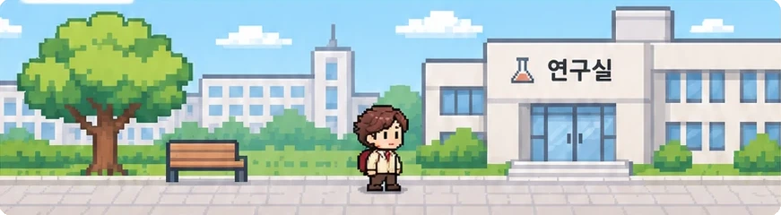

<!doctype html>
<meta charset="utf-8">
<meta name="viewport" content="width=device-width,initial-scale=1,viewport-fit=cover">
<title>노벨상 키우기</title>
<meta name="claude:viewport-fit-sides" content="cover">
<link rel="stylesheet" href="https://cdn.jsdelivr.net/npm/galmuri/dist/galmuri.css">
<style>
:root{--t1:#fdeedb;--t2:#fff3e1;--t3:#4a1a14;--t4:#8c5139;--t5:#c9a184;--t6:#8b0a2b;--t7:#63061c;--t8:#e84e74;--t9:#b4730d;--t10:#1c7448;--t11:#b3261e;--t12:#e6d8c6;--t13:#e3b9b1;--t14:#ead9c4;--t15:#ead9c4;--t16:#fbe3c0;--t17:#fdecc4;--t18:#f3b4ae;--t19:#e9eccb;--t20:#fbe1e1;--t21:#fffaf0;--t22:#cdb796;--t23:#ecd2c8;--t24:#f6cf7c;--t25:#d9a2a8;--t26:#f6e1d4;--scnf:brightness(.9)}
:root[data-theme=dark]{--t1:#111418;--t2:#1a1e24;--t3:#e9e6e0;--t4:#8d939b;--t5:#2c323a;--t6:#e0718c;--t7:#a84a62;--t8:#f08aa2;--t9:#d9b25f;--t10:#6fcf97;--t11:#ef6b6b;--t12:#0b0d10;--t13:#3a2f33;--t14:#2a3038;--t15:#22272e;--t16:#222831;--t17:#2b2329;--t18:#5a3a3a;--t19:#1f2a24;--t20:#2e2226;--t21:#161a1f;--t22:#39404a;--t23:#3a4048;--t24:#5a4a26;--t25:#4a3a40;--t26:#262b33;--scnf:brightness(.62) saturate(.9)}

/* 레이아웃: 한 손 세로 화면. 에셋 폴더의 도트 시안(크림 바탕, 버건디, 금색)을 따른다. 그림은 시안에서 잘라 쓰고 버튼과 틀은 CSS로 그린다. */
:root{
  --bg:var(--t1); --surface:var(--t2); --ink:var(--t3); --muted:var(--t4); --line:var(--t5);
  --accent:var(--t6); --accent-ink:var(--t1); --edge:var(--t7); --hi:var(--t8); --gold:var(--t9);
  --good:var(--t10); --bad:var(--t11); --bar:var(--t6);
  --px:"Galmuri11","Apple SD Gothic Neo","Malgun Gothic",sans-serif;
}
html,body{height:100%;margin:0}
body{background:var(--bg);color:var(--ink);font-family:var(--px);font-size:15px;line-height:1.6;
  padding-left:max(16px,env(safe-area-inset-left,0px));padding-right:max(16px,env(safe-area-inset-right,0px))}
*{box-sizing:border-box}
button{font:inherit;color:inherit;cursor:pointer;border:0;background:none;padding:0}
button:focus-visible,input:focus-visible,select:focus-visible{outline:3px solid var(--gold);outline-offset:4px}
#app{max-width:440px;margin:0 auto;height:100%;display:flex;flex-direction:column;gap:14px;padding-block:14px}
/* 넓은 화면에서는 휴대폰 틀 안에 띄운다. transform이 있어야 팝업(position:fixed)이 틀 안에 갇힌다. */
@media (min-width:520px) and (min-height:600px){
  body{background:var(--t12);padding:0;display:grid;place-items:center}
  #app{width:430px;max-width:none;height:min(900px,calc(100vh - 48px));margin:0;padding:14px 16px;overflow:hidden;
    background:var(--bg);border-radius:28px;transform:translateZ(0);box-shadow:0 0 0 1px rgba(74,26,20,.08),0 24px 60px rgba(74,26,20,.22)}
}
.scroll{flex:1;min-height:0;overflow-y:auto;display:flex;flex-direction:column;gap:14px;padding:3px}
h1{font-weight:700;font-size:32px;line-height:1.25;margin:0;color:var(--accent);text-wrap:balance}
h2{font-weight:700;font-size:19px;margin:0;color:var(--accent);text-wrap:balance}
.label{font-size:12px;color:var(--muted);letter-spacing:.06em}
.muted{color:var(--muted)}
.num{font-variant-numeric:tabular-nums}
/* 도트 테두리: 네 변에만 그림자를 주면 모서리가 한 칸 비어 계단처럼 보인다 */
.panel,.slot,.choice,.sheet,.btn,.pick button,input[type=text],select{border:0;border-radius:0;
  box-shadow:0 -3px 0 var(--e),0 3px 0 var(--e),-3px 0 0 var(--e),3px 0 0 var(--e);--e:var(--line)}
.panel{background:var(--surface);padding:14px;display:flex;flex-direction:column;gap:10px}
.frame,.sheet{--e:var(--accent)}
.cover{border-top:3px solid var(--accent);border-bottom:3px solid var(--line);padding:10px 0 12px;display:flex;flex-direction:column;gap:2px}
.row{display:flex;gap:14px;align-items:center}
.row>*{min-width:0}
.grow{flex:1}
.meter{height:10px;background:var(--line);overflow:hidden}
.meter>i{display:block;height:100%;background:var(--bar)}
.stats{display:grid;grid-template-columns:repeat(4,1fr);gap:8px;text-align:center}
.stats b{display:block;font-size:20px;font-weight:700}
.slots{display:grid;grid-template-columns:1fr 1fr;gap:12px;padding:3px}
.slot{padding:10px 12px;text-align:left;min-height:58px;background:var(--bg)}
.slot small{display:block;color:var(--muted);font-size:12px}
.slot.locked{cursor:default;background:transparent;color:var(--muted)}
.btn{display:block;width:100%;padding:13px;background:var(--accent);color:var(--accent-ink);font-weight:700;font-size:17px;text-align:center;
  box-shadow:0 -3px 0 var(--edge),0 3px 0 var(--edge),-3px 0 0 var(--edge),3px 0 0 var(--edge),inset 0 3px 0 var(--hi),inset 0 -3px 0 var(--edge)}
.btn.ghost{background:var(--surface);color:var(--accent);--e:var(--accent);box-shadow:0 -3px 0 var(--e),0 3px 0 var(--e),-3px 0 0 var(--e),3px 0 0 var(--e)}
.btn.big{font-size:22px;padding:15px;letter-spacing:.08em}
.btn:disabled{opacity:.4;cursor:default}
.btn:not(:disabled):active{transform:translateY(2px)}
.tabs{display:grid;grid-template-columns:repeat(4,1fr);border-top:3px solid var(--line)}
.tabs button{padding:12px 4px;color:var(--muted)}
.tabs button.on{color:var(--accent);font-weight:700;box-shadow:inset 0 3px 0 var(--accent)}
.overlay{position:fixed;inset:0;background:rgba(60,10,20,.55);display:flex;align-items:flex-end;justify-content:center;z-index:5;
  padding:calc(16px + env(safe-area-inset-top,0px)) max(16px,env(safe-area-inset-right,0px)) calc(16px + env(safe-area-inset-bottom,0px)) max(16px,env(safe-area-inset-left,0px))}
.sheet{width:100%;max-width:440px;max-height:100%;overflow-y:auto;background:var(--surface);padding:18px;display:flex;flex-direction:column;gap:14px}
.choice{display:flex;justify-content:space-between;align-items:center;gap:10px;width:100%;text-align:left;padding:12px;background:var(--bg)}
.choice span:first-child{min-width:0}
.tag{flex:none;font-size:12px;padding:2px 8px;border:2px solid var(--line);color:var(--muted);white-space:nowrap}
.tag.risk{color:var(--bad);border-color:var(--bad)}
.stamp{align-self:flex-start;font-weight:700;font-size:20px;color:var(--accent);border:3px solid var(--accent);padding:2px 12px;transform:rotate(-4deg);letter-spacing:.1em}
.list{display:flex;flex-direction:column;gap:6px;margin:0;padding:0;list-style:none}
.list li{display:flex;justify-content:space-between;gap:10px;border-bottom:2px solid var(--line);padding-bottom:6px}
.list li span:first-child{min-width:0}
input[type=text],select{font:inherit;color:inherit;width:100%;padding:11px 12px;background:var(--bg);--e:var(--muted);appearance:none;-webkit-appearance:none}
input::placeholder{color:var(--line)}
select{padding-right:36px;background:var(--bg) url("data:image/svg+xml,%3Csvg xmlns='http://www.w3.org/2000/svg' width='16' height='10'%3E%3Cpath d='M1 1l7 7 7-7' fill='none' stroke='%238b0a2b' stroke-width='3'/%3E%3C/svg%3E") no-repeat right 12px center}
.pick{display:grid;grid-template-columns:repeat(2,1fr);gap:12px}
.pick button{padding:11px;background:var(--surface);color:var(--accent);font-weight:700;--e:var(--accent)}
.pick button.on{background:var(--accent);color:var(--accent-ink);--e:var(--edge)}
/* 시안에서 잘라 온 그림. 화면 가장자리까지 채운다. */
.stage,.head{margin:-14px -16px 0;position:relative}
.stage{flex:1;min-height:0;max-height:calc(min(100vw,472px)*1.2944)}
.stage img{display:block;width:100%;height:100%;object-fit:contain;object-position:center bottom}
.head img{display:block;width:100%}
/* 게임 안 그림: 시안에서 잘라 온 조각. 도트가 뭉개지지 않게 확대만 하고 보간하지 않는다. */
.medal{display:block;width:150px;align-self:center}
.scene{display:block;width:100%;flex:none;height:min(240px,30vh);object-fit:cover;object-position:center 30%;--e:var(--accent);box-shadow:0 -3px 0 var(--e),0 3px 0 var(--e),-3px 0 0 var(--e),3px 0 0 var(--e)}
.medal,.scene,.view{image-rendering:pixelated}
.card{background:var(--surface);padding:14px;display:flex;flex-direction:column;gap:10px;margin:3px;
  box-shadow:0 -3px 0 var(--accent),0 3px 0 var(--accent),-3px 0 0 var(--accent),3px 0 0 var(--accent),inset 0 0 0 4px var(--surface),inset 0 0 0 6px var(--t13)}
.chip{font-size:13px;font-weight:700;color:var(--accent);background:var(--bg);padding:1px 12px;text-align:center;white-space:nowrap;
  box-shadow:0 -2px 0 var(--muted),0 2px 0 var(--muted),-2px 0 0 var(--muted),2px 0 0 var(--muted)}
.chip.pill{font-size:15px;padding:4px 14px;min-width:4.5em}
.rule{align-self:stretch;height:2px;background:var(--gold);position:relative;margin:4px 6px}
.rule::before,.rule::after{content:"";position:absolute;top:-3px;width:6px;height:6px;background:var(--surface);border:2px solid var(--gold);transform:rotate(45deg)}
.rule::before{left:-6px}.rule::after{right:-6px}
/* 학기 진행·결산 화면: 2026-11-13 시안. 머리띠는 고정이고 그 아래 카드들이 통째로 스크롤된다. */
.top{background:var(--accent);color:var(--accent-ink);padding:8px 12px 10px;margin:3px;display:flex;flex-direction:column;gap:8px;
  box-shadow:0 -3px 0 var(--edge),0 3px 0 var(--edge),-3px 0 0 var(--edge),3px 0 0 var(--edge),inset 0 3px 0 var(--t6)}
.trow{display:grid;grid-template-columns:auto 1fr auto 1fr;align-items:center}
.trow .homebtn{width:36px;height:36px;padding:0;background:var(--accent-ink);color:var(--accent);display:grid;place-items:center;
  box-shadow:0 -2px 0 var(--edge),0 2px 0 var(--edge),-2px 0 0 var(--edge),2px 0 0 var(--edge)}
.homebtn svg{width:22px;height:22px}
.trow>*{min-width:0;padding:0 12px}
.trow>span:first-of-type{font-size:14px;font-weight:700;line-height:1.3;word-break:keep-all;padding-right:8px}
.trow .who{font-size:24px;line-height:1.3;max-width:7em;white-space:nowrap;overflow:hidden;text-overflow:ellipsis;border-inline:2px solid rgba(253,243,224,.7)}
.trow .ovr{padding-right:0;text-align:right;font-size:13px;font-weight:700;white-space:nowrap}
.trow .ovr b{font-size:28px;line-height:1;margin-left:6px}
.tprog{display:grid;grid-template-columns:minmax(0,1fr) auto auto;gap:10px;align-items:end}
.tprog small{display:block;font-size:14px;font-weight:700;white-space:nowrap}
.tprog .meter{margin:4px 2px 2px;background:var(--t6);box-shadow:0 0 0 2px var(--accent-ink)}
.tprog .meter>i{background:#f0ad45}
.tbtn{display:flex;align-items:center;gap:6px;padding:6px 10px;background:var(--accent-ink);color:var(--accent);font-weight:700;font-size:14px;white-space:nowrap;
  box-shadow:0 -2px 0 var(--edge),0 2px 0 var(--edge),-2px 0 0 var(--edge),2px 0 0 var(--edge)}
.tbtn.on{background:#f0ad45}
.tbtn:disabled{opacity:.5;cursor:default}
.view{display:block;width:100%;height:auto}
.kv2{display:grid;grid-template-columns:1fr 1fr;column-gap:14px}
.kv{display:flex;flex-wrap:wrap;align-items:center;justify-content:space-between;gap:2px 8px;padding:7px 0;border-bottom:2px solid var(--t14)}
.kv b{font-size:16px;white-space:nowrap}
.kv.wide{grid-column:1/-1;border:0;justify-content:flex-start;gap:2px 14px}
.sg{display:grid;grid-template-columns:repeat(6,1fr);row-gap:12px}
.sg>div{grid-column:span 2;padding:0 8px;min-width:0;display:flex;flex-direction:column;gap:4px}
.sg>div:nth-child(n+4){grid-column:span 3}
.sg>div:nth-child(2),.sg>div:nth-child(3),.sg>div:nth-child(5){border-left:2px solid var(--line)}
.sg p{display:flex;justify-content:space-between;align-items:baseline}
.sg span{font-size:13px;font-weight:700;color:var(--muted);white-space:nowrap}
.sg b{font-size:min(24px,5.6vw);line-height:1.2}
.book{gap:6px}
.book>header{display:flex;justify-content:space-between;align-items:baseline}
.book>header h2{font-size:22px}
.rec{display:grid;grid-template-columns:auto 1fr;gap:12px;align-items:center;padding:10px 8px;border-bottom:2px solid var(--t14)}
.rec:first-of-type{background:var(--t15)}
.rec>span{min-width:3.4em;padding:2px 6px;background:var(--t16);color:var(--accent);font-weight:700;text-align:center}
.rec>div{border-left:2px solid var(--line);padding-left:12px}
.rec b{font-weight:700}
.rec small{display:block;font-size:12px;color:var(--muted)}
.ttl{display:flex;flex-direction:column;gap:2px;text-align:center}
.ttl h1{font-size:min(30px,7.6vw)}
.sec{display:flex;align-items:baseline;gap:12px}
.sec h2{font-size:24px;white-space:nowrap}
.sec span{border-left:2px solid var(--muted);padding-left:12px;color:var(--muted);font-size:14px}
.hl{display:grid;grid-template-columns:64px 1fr;gap:14px;align-items:center;background:var(--t17);padding:12px 14px}
.hl>div{border-left:2px solid var(--line);padding-left:14px;display:flex;flex-direction:column;gap:2px;min-width:0}
.hl p{display:flex;flex-wrap:wrap;align-items:center;gap:4px 12px}
.hl b{font-size:min(28px,7vw);line-height:1.25;color:var(--accent);white-space:nowrap}
.hl b.s{font-size:min(20px,5.2vw)}
.hl small{font-size:14px;color:var(--muted)}
.res,.per{display:grid;grid-template-columns:44px 1fr auto;gap:12px;align-items:center;padding:10px 4px;border-bottom:2px solid var(--t14)}
.res>div,.per>div:nth-child(2){border-left:2px solid var(--line);padding-left:12px;min-width:0}
.res b,.per p b{font-size:17px;color:var(--accent)}
.res b{display:block}
.res small,.per small{display:block;font-size:13px;line-height:1.45;color:var(--muted)}
.ovrb{display:grid;grid-template-columns:auto 1fr auto;align-items:center;gap:14px;background:var(--accent);color:var(--accent-ink);padding:6px 14px;font-weight:700}
.ovrb>b{font-size:26px;text-align:center;border-left:2px solid rgba(253,243,224,.7)}
.ovrb em{font-style:normal;font-size:20px;background:var(--accent-ink);padding:0 16px}
.chg{display:grid;grid-template-columns:1fr auto 3em;align-items:baseline;gap:4px 10px;padding:8px 0 10px;border-bottom:2px solid var(--t14)}
.chg>span{font-size:16px;font-weight:700;color:var(--accent)}
.chg>b{font-size:17px}
.chg em{font-style:normal;font-weight:700;font-size:17px;text-align:right}
.chg .meter{grid-column:1/-1;position:relative;overflow:visible}
.chg .meter i{position:absolute;top:0;left:0}
.chg .meter i.up{filter:brightness(1.35) saturate(1.2)}
.chg .meter i.down,.legend i.down{background:repeating-linear-gradient(135deg,var(--t11) 0 3px,var(--t18) 3px 6px)}
.chg .meter u,.legend u{position:absolute;top:-3px;bottom:-3px;width:2px;margin-left:-1px;background:var(--ink)}
.legend{display:flex;justify-content:center;align-items:center;gap:8px;font-size:13px;color:var(--muted)}
.legend u{position:static;height:16px;margin:0 0 0 8px}
.legend i{width:26px;height:10px;margin-left:8px;background:var(--good)}
.io{display:grid;grid-template-columns:1fr 1fr;gap:10px}
.io>div{min-width:0}
.ioh{display:flex;flex-wrap:wrap;justify-content:space-between;align-items:center;gap:4px 8px;padding:8px 10px;background:var(--t19)}
.ioh.out{background:var(--t20)}
.ioh b{font-size:min(20px,5vw);white-space:nowrap}
.ioh.in b{color:var(--good)}
.it{display:flex;flex-wrap:wrap;gap:2px 6px;white-space:nowrap;align-items:center;padding:7px 2px;border-bottom:2px solid var(--t14);font-size:13px;line-height:1.3}
.it span{font-weight:700;color:var(--accent);border-left:2px solid var(--line);padding-left:8px}
.it .ico{width:22px}
.it b{margin-left:auto;color:var(--muted)}
.bal{display:flex;flex-wrap:wrap;align-items:center;justify-content:flex-end;gap:6px 10px;padding:8px 10px;background:var(--t17)}
.bal .ico{width:36px}
.inv{margin-top:10px;padding:10px;border:2px solid var(--t14);background:var(--t21)}
.invh{display:flex;flex-wrap:wrap;align-items:center;gap:6px 8px}.invh .ico{width:32px}.invh b{font-size:17px}
.invh .tag{background:var(--accent);color:var(--accent-ink);padding:1px 6px;font-size:13px}
.invr{display:flex;flex-wrap:wrap;align-items:baseline;justify-content:flex-end;gap:4px 10px;padding:6px 0}.invr b{font-size:20px;color:var(--accent)}.invr em{font-style:normal;font-weight:700}
.invs{display:grid;grid-template-columns:1fr 1fr;gap:8px}.invs>div{display:flex;flex-direction:column;padding:6px 8px;background:var(--t16)}.invs span{font-size:13px;color:var(--muted)}.invs b{font-size:17px}
.spark{position:relative;height:84px;display:flex;gap:6px;margin-top:8px;background:linear-gradient(var(--t22),var(--t22)) center/100% 1px no-repeat}
.spark span{flex:1;position:relative}.spark i{position:absolute;left:12%;right:12%}.spark i.up{background:var(--good)}.spark i.dn{background:var(--bad)}.spark i.cur{padding:0;gap:0;box-shadow:0 0 0 2px var(--accent)}
.cmp{display:flex;flex-wrap:wrap;gap:4px 12px;margin:8px 0 0;font-size:14px;color:var(--muted)}.cmp .me{color:var(--ink,var(--t3));font-weight:700;text-decoration:underline}
.bal>b{flex:1;font-size:18px;color:var(--accent);white-space:nowrap}
.per{grid-template-columns:64px 1fr auto}
.fav{display:flex;flex-direction:column;align-items:center;gap:2px}
.fav b{font-size:28px;line-height:1.1;color:var(--good)}
.fav b small{font-size:13px;color:var(--muted)}
.fav em{font-style:normal;font-weight:700;font-size:14px}
.tag.new{color:var(--accent);border-color:var(--accent);margin-right:4px}
.endbox{gap:14px;padding:16px}
.endbox .row{gap:14px}
.endbox .row .btn{font-size:min(17px,4.1vw);padding-inline:4px;white-space:nowrap}
.endbox .btn img{display:inline-block;height:1.4em;width:auto;vertical-align:-.3em;margin-right:8px;image-rendering:pixelated}
.up{color:var(--good)}.down{color:var(--bad)}
/* 다음 학기 계획 화면 */
.fold{padding:8px 14px}
.fold summary{list-style:none;display:flex;align-items:center;gap:12px;cursor:pointer;font-size:20px;font-weight:700;color:var(--accent)}
.fold summary::-webkit-details-marker{display:none}
.fold summary::before{content:"▶";font-size:16px}
.fold[open] summary::before{content:"▼"}
.fold summary .rule{flex:1;align-self:center}
.fold p{padding:10px 3px 4px;text-align:center}
.rtabs{display:grid;grid-template-columns:1.2fr 1fr 1fr;gap:10px;padding:12px 6px}
.rtabs button{padding:5px 0;border:2px solid var(--t23);background:var(--t16);color:var(--accent);font-weight:700}
.rtabs button.on{background:var(--accent);border-color:var(--accent);color:var(--accent-ink)}
.fold .hint{padding:6px 10px;font-size:13px;line-height:1.5;margin-bottom:6px}
.fold .hint small{color:var(--muted)}
.fx{padding:6px 2px 4px}
.fxg{display:grid;grid-template-columns:1fr 1fr;gap:14px 16px;padding:8px 4px 12px}
.fxg>div{display:flex;flex-direction:column;min-width:0}
.fxg span{font-size:13px;color:var(--muted)}
.fxg b{font-size:clamp(20px,6vw,26px);line-height:1.25;color:var(--ink,var(--t3));white-space:nowrap}
.fxg small{font-size:13px;color:var(--muted);word-break:keep-all}
.fx h4{display:flex;align-items:baseline;justify-content:space-between;gap:8px;margin:14px 4px 4px;padding-top:12px;border-top:2px solid var(--t14);font-size:16px}
.fx h4 small{font-size:12px;font-weight:400;color:var(--muted);margin-right:auto}
.fxl{list-style:none;margin:0;padding:0 4px}
.fxl li{display:flex;justify-content:space-between;gap:10px;padding:5px 0;font-size:15px}
.fxl li b{white-space:nowrap}
.fxn{text-align:left!important;font-size:14px}
.xr{display:grid;grid-template-columns:1fr auto 1.4em;align-items:center;gap:10px;width:100%;text-align:left;padding:9px 6px;border-bottom:1px solid var(--t14);background:none}
.xr:last-child{border-bottom:0}
.xr>span{display:flex;flex-direction:column;min-width:0}
.xr>span b{font-size:16px}
.xr>span small{font-size:12px;color:var(--muted);line-height:1.4;word-break:keep-all}
.xr>em{font-style:normal;font-size:14px;white-space:nowrap;text-align:right}
.xr>i{font-style:normal;font-weight:700;color:var(--accent);text-align:center;width:1.4em;height:1.4em;line-height:1.3em;border:2px solid var(--t23)}
.xr.on{background:var(--t17)}.xr.on>i{border-color:var(--accent)}
.xr.on>span b{color:var(--accent)}
.xr:disabled{opacity:.45}
.xr .lk{font-style:normal;font-size:11px;color:var(--accent-ink);background:var(--accent);padding:0 4px;margin-left:4px;vertical-align:2px}
.seg{display:grid;grid-template-columns:3em 1fr;align-items:center;gap:8px;margin:12px 4px 0}
.seg>span{font-size:14px;font-weight:700}
.seg>div{display:flex;gap:4px}
.seg button{flex:1;display:flex;flex-direction:column;align-items:center;padding:5px 2px;border:2px solid var(--t14);background:none;font-size:13px;font-weight:700;line-height:1.25}
.seg button small{font-size:11px;font-weight:400;color:var(--muted)}
.seg button.on{border-color:var(--accent);background:var(--t17);color:var(--accent)}
.seg button:disabled{opacity:.4}
.fx h4.top0{margin-top:4px;border-top:0;padding-top:4px}
.fxt{margin-top:6px;padding-top:6px;border-top:2px solid var(--t14)}
.fxt b{font-size:14px}
.fx .inv{background:none;border:0;border-top:2px solid var(--t14);padding:10px 4px 0;margin-top:10px}
.rp{display:grid;grid-template-columns:minmax(0,1fr) minmax(0,1fr);gap:8px;align-items:center;padding:10px 4px;border-top:2px solid var(--t14)}
.rp.done{background:var(--t20)}
.rpi{display:grid;grid-template-columns:40px 1fr;gap:4px 8px;align-items:center;border-right:2px solid var(--line);padding-right:8px}
.rpi b{display:block;font-size:17px;line-height:1.2;color:var(--accent);white-space:nowrap}
.rpi small{display:block;font-size:12px;line-height:1.4;font-weight:700;color:var(--muted);white-space:nowrap}
.hb{grid-column:1/-1;display:grid;grid-template-columns:16px 1fr;gap:6px;align-items:center}
.rag{display:grid;grid-template-columns:repeat(3,minmax(0,1fr));gap:4px}
.ra{display:flex;flex-direction:column;align-items:center;justify-content:center;gap:1px;padding:5px 0 3px;min-width:0;border:2px solid var(--t23);background:var(--surface);color:var(--accent);font-weight:700;font-size:12px;line-height:1.2;white-space:nowrap}
.ra .ico{width:18px;flex:none}
.ra:disabled{opacity:.35;cursor:default}
.tplan{display:grid;grid-template-columns:1fr 1.4fr;align-items:center;border-top:2px solid rgba(253,243,224,.7);padding-top:8px;font-weight:700;text-align:center}
.tplan span{border-right:2px solid rgba(253,243,224,.7)}
.tplan b{margin-left:14px;background:var(--accent-ink);color:var(--accent);padding:2px 0}
.sub.big span{font-size:min(22px,5.6vw);font-weight:700;color:var(--accent)}
.grp{display:grid;grid-template-columns:40px auto 1fr;gap:10px;align-items:center;margin-top:8px}
.grp h3{margin:0;font-size:22px;color:var(--accent);padding-right:4px}
.grp p{display:flex;flex-wrap:wrap;align-items:baseline;gap:0 14px;padding:5px 14px;background:var(--t17);font-weight:700;color:var(--muted);border-left:2px solid var(--line)}
.grp p b{font-size:20px;color:var(--accent)}
.recs{margin:0}
.recs>div{display:grid;grid-template-columns:2fr 3fr;gap:8px;padding:5px 0 5px 22px;border-bottom:2px solid var(--t14);font-weight:700}
.recs dt{color:var(--muted)}
.recs dd{margin:0;color:var(--accent)}
.pp{display:grid;grid-template-columns:40px minmax(3.6em,1fr) 1fr auto;gap:10px;align-items:center;padding:5px 4px;border-bottom:2px solid var(--t14);font-weight:700}
.pp>b{color:var(--accent);font-size:17px;white-space:nowrap}
.pp span{border-left:2px solid var(--line);padding-left:10px;color:var(--muted);white-space:nowrap}
.pp span b{font-size:18px;color:var(--accent)}
.fin{display:grid;grid-template-columns:1fr 1fr;column-gap:14px}
.fin>div{display:flex;flex-wrap:wrap;justify-content:space-between;align-items:baseline;gap:0 8px;padding:7px 2px;border-top:2px solid var(--t14);font-weight:700}
.fin span{font-size:14px;color:var(--muted)}
.fin b{font-size:18px;color:var(--accent);white-space:nowrap}
.hint{padding:8px 12px;background:var(--t17);color:var(--accent);font-weight:700;text-align:center}
.fo{display:grid;grid-template-columns:40px 1fr auto 3.2em;gap:10px;word-break:keep-all;align-items:center;width:100%;text-align:left;padding:10px 6px 10px 12px;border-bottom:2px solid var(--t14)}
.fo.ug{grid-template-columns:40px 1fr 3.2em}
.fo.ug .fn small{font-size:13px;line-height:1.4}
.fo:disabled{opacity:.45;cursor:default}
.fo.on{background:var(--t17);box-shadow:inset 6px 0 0 var(--accent),inset 0 0 0 2px var(--t13)}
.fn,.fc{border-left:2px solid var(--line);padding-left:10px}
.fn b{display:block;font-size:20px;line-height:1.3;color:var(--accent)}
.fn small{display:block;font-size:14px;color:var(--muted)}
.fc{font-weight:700;color:var(--muted);white-space:nowrap}
.fc b{font-size:22px;color:var(--accent)}
.fr{display:flex;flex-direction:column;align-items:center;justify-content:center;gap:2px;font-size:11px;font-weight:700;color:var(--accent);white-space:nowrap}
.fr i{flex:none;width:26px;height:26px;border:3px solid var(--muted);border-radius:50%;display:grid;place-items:center;font-style:normal;color:var(--accent-ink)}
.fo.on .fr i{background:var(--accent);border-color:var(--accent)}
.fo.on .fr i::after{content:"✓"}
.rec.new{animation:recIn .5s ease-out}
@keyframes recIn{from{opacity:0;transform:translateY(-10px);background:var(--t24)}to{opacity:1;transform:none}}
@media (prefers-reduced-motion:reduce){.rec.new{animation:none}}
.sub{display:grid;grid-template-columns:1fr auto 1fr;align-items:center;gap:10px;color:var(--muted);font-size:14px}
.ico{display:block;width:100%;height:auto;image-rendering:pixelated}
.back{position:absolute;left:10%;top:6%;width:9.5%;height:19%}
.form{gap:18px;padding:20px 14px}
.field{display:grid;grid-template-columns:7em 1fr;align-items:center;gap:12px}
.field>:first-child{white-space:nowrap;font-weight:700;font-size:17px;color:var(--accent)}
p{margin:0}
@media (prefers-reduced-motion:no-preference){ .sheet{animation:up .18s ease-out} @keyframes up{from{transform:translateY(12px);opacity:.6}to{transform:none;opacity:1}} }
/* 새 인생 프롤로그: 배경 설명을 목록 대신 문단으로 천천히 읽는다. */
.prologue{flex:1;min-height:0;display:flex;flex-direction:column;gap:18px;padding:10px 6px 4px}
.prologue-top{display:flex;align-items:center;justify-content:space-between;gap:12px;color:var(--muted);font-size:12px}
.prologue-title{padding:12px 0 18px;border-bottom:2px solid var(--line)}
.prologue-title h1{font-size:27px;margin-top:8px;text-wrap:pretty}
.prologue .scroll{padding:4px 8px 24px 2px;gap:22px;scrollbar-width:thin;scrollbar-color:var(--line) transparent}
.story-paragraph{font-size:17px;line-height:2;word-break:keep-all;overflow-wrap:anywhere;letter-spacing:-.025em}
.story-paragraph[hidden]{display:none}
.story-paragraph.current::after{content:'';display:inline-block;width:7px;height:17px;margin-left:5px;vertical-align:-2px;background:var(--accent);animation:storyBlink .9s steps(1) infinite}
.story-foot{display:flex;flex-direction:column;gap:12px;padding:8px 3px max(4px,env(safe-area-inset-bottom))}
.story-hint{text-align:center;font-size:12px;color:var(--muted);min-height:20px}
.sr-only{position:absolute;width:1px;height:1px;padding:0;margin:-1px;overflow:hidden;clip-path:inset(50%);white-space:nowrap;border:0}
@keyframes storyBlink{50%{opacity:0}}
@media(prefers-reduced-motion:reduce){.story-paragraph.current::after{animation:none}}
/* 게임 소개는 실제 텍스트로 표시하고, 시안 상단의 장식만 잘라 보여 준다. */
.create-scroll{gap:20px}
.create-intro{display:flex;flex-direction:column;gap:16px;flex:none}
.create-art{position:relative;aspect-ratio:1024/240;overflow:hidden;margin:-3px -3px 0}
.create-art img{display:block;width:100%;height:auto;image-rendering:pixelated}
.create-back{position:absolute;left:9.5%;top:12%;width:8.5%;height:34%;min-width:28px;min-height:28px}
.create-intro p{padding:0 8px;font-size:15px;line-height:1.95;color:var(--ink);word-break:keep-all;overflow-wrap:anywhere}
.create-intro .rule{margin:2px 14px 4px}
/* 재능 선택: 가운데 카드 하나를 크게, 양옆 재능은 뒤로 살짝 보인다. */
.talent{gap:10px}
.trow .tage{font-size:13px}
.thead{text-align:center;display:flex;flex-direction:column;gap:2px}
.thead h1{font-size:min(24px,6.4vw);display:flex;align-items:center;justify-content:center;gap:10px}
.thead h1::before,.thead h1::after{content:'';width:18px;height:26px;flex:none;background:url(에셋/재능-월계수.webp) center/contain no-repeat;image-rendering:pixelated}
.thead h1::after{transform:scaleX(-1)}
.thead p{font-size:14px;font-weight:700;color:var(--ink)}
.tpick{display:grid;grid-template-columns:repeat(3,1fr);gap:10px;padding:3px}
.tpick button{position:relative;display:flex;flex-direction:column;align-items:center;gap:6px;padding:10px 6px 8px;background:var(--surface);
  box-shadow:0 -3px 0 var(--e),0 3px 0 var(--e),-3px 0 0 var(--e),3px 0 0 var(--e);--e:var(--t25)}
.tpick img{width:100%;height:64px;object-fit:contain;image-rendering:pixelated}
.tpick img.sm{height:48px;margin:8px 0}
.tpick b{font-size:16px;color:var(--accent);font-weight:700;white-space:nowrap}
.tpick button.on{background:var(--t15);--e:var(--accent)}
.tpick button.on::before{content:'✓';position:absolute;top:-3px;left:-3px;width:22px;height:22px;display:grid;place-items:center;background:var(--accent);color:var(--accent-ink);font-size:13px;font-weight:700}
.tstat{gap:0;padding:12px 16px 4px}
.tstat header{display:flex;align-items:center;gap:12px;padding-bottom:8px}
.tstat header small{flex:1;min-width:0;padding:3px 8px;background:var(--t15);font-size:12px;line-height:1.4;word-break:keep-all}
.tstat h2{font-size:20px;white-space:nowrap}
.tstat .rule{display:block;height:2px;background:var(--gold);margin-bottom:2px}
.tbar{display:grid;grid-template-columns:4.2em 1fr 2.4em;align-items:center;gap:12px;padding:5px 4px;border-bottom:2px solid var(--t14)}
.tbar:last-child{border:0}
.tbar span{font-weight:700;color:var(--accent);font-size:15px}
.tbar .meter{height:14px;background:var(--t14);border-radius:7px}
.tbar .meter i{border-radius:7px}
.tbar b{font-size:21px;color:var(--accent);text-align:right}
.boost .tbar{grid-template-columns:4.2em 1fr 4.4em}
.tbar b em{font-style:normal;font-size:13px;margin-left:4px}
.rec small.dd{font-weight:700;font-size:14px}
.rec b{font-size:16px;line-height:1.5}
.now{gap:8px;padding:16px}
.now .chip{align-self:flex-start}
.now p{font-size:19px;line-height:1.6;font-weight:700;word-break:keep-all}
.now small{font-size:15px;color:var(--muted)}
.dchips{display:flex;flex-wrap:wrap;gap:6px}
.dchips span{font-size:15px;font-weight:700;padding:2px 10px;background:var(--t17)}
.choice:disabled{opacity:.45;cursor:default}
.tag.good{color:var(--good);border-color:var(--good)}
@media (prefers-reduced-motion:no-preference){.now.pop{animation:recIn .5s ease-out}}
.tsum{display:flex;align-items:center;gap:12px;font-size:13px;color:var(--muted);white-space:nowrap}
.tsum::before,.tsum::after{content:'';flex:1;height:2px;background:var(--gold);opacity:.6}
.exam{gap:12px;padding-top:6px;overflow-x:hidden} /* 공개 애니메이션이 살짝 커질 때 가로 스크롤바가 생기지 않게 */
.eband{display:flex;align-items:center;gap:10px;flex:none}
.eband::before,.eband::after{content:'';flex:1;height:2px;background:var(--gold)}
.eband span{background:var(--accent);color:var(--accent-ink);font-weight:700;font-size:15px;padding:5px 22px;
  box-shadow:0 -3px 0 var(--edge),0 3px 0 var(--edge),-3px 0 0 var(--edge),3px 0 0 var(--edge),inset 0 0 0 2px var(--accent),inset 0 0 0 3px var(--accent-ink)}
.ehead{display:grid;grid-template-columns:auto 1fr;align-items:center;gap:10px;padding:0 4px;flex:none}
.estu{width:80px;height:auto;image-rendering:pixelated}
.ehead>div{display:flex;flex-direction:column;align-items:center;gap:4px}
.ehead h1{font-size:min(30px,7.8vw);white-space:nowrap;display:flex;align-items:center;gap:8px}
.ehead h1::after{content:'';width:18px;height:26px;background:url(에셋/재능-월계수.webp) center/contain no-repeat;transform:scaleX(-1);image-rendering:pixelated}
.ehead .rule{align-self:stretch;margin:0 10px}
.ehead p{font-weight:700;color:var(--muted);font-size:15px}
.elist{list-style:none;margin:0;padding:2px 6px 2px 30px;display:flex;flex-direction:column;gap:12px;position:relative}
.elist::before{content:'';position:absolute;left:9px;top:28px;bottom:28px;width:3px;background:var(--accent)}
.elist li{position:relative;display:grid;grid-template-columns:auto 1fr auto;align-items:center;gap:8px;padding:11px 12px;background:var(--surface);
  box-shadow:0 -3px 0 var(--e),0 3px 0 var(--e),-3px 0 0 var(--e),3px 0 0 var(--e),inset 0 0 0 3px var(--surface),inset 0 0 0 5px var(--t23);--e:var(--t25)}
.elist li::before{content:'';position:absolute;left:-27px;top:50%;width:12px;height:12px;margin-top:-6px;background:var(--surface);box-shadow:0 0 0 3px var(--accent)}
.elist li::after{content:'';position:absolute;left:-12px;top:50%;width:9px;height:3px;margin-top:-1px;background:var(--accent)}
.elist li.on{--e:var(--accent)}
.elist li.on::before{background:var(--accent)}
.elist li.final.on{background:var(--t15)}
.emon{background:var(--accent);color:var(--accent-ink);font-weight:700;font-size:15px;padding:2px 10px;min-width:3.4em;text-align:center}
.ename{font-weight:700;font-size:17px;white-space:nowrap;text-align:center}
.elist b{font-size:28px;white-space:nowrap;color:var(--accent);border-left:2px solid var(--gold);padding-left:14px;min-width:4em;text-align:right;line-height:1.2}
.elist li:not(.on) b{color:var(--line)}
.elist li:not(.on) .emon{background:var(--line)}
.eprog{display:flex;flex-direction:column;align-items:center;gap:6px;padding:0 20px}
.eprog b{font-size:18px;color:var(--accent)}
.eprog .meter{align-self:stretch;height:10px;border-radius:5px;background:var(--t14)}
.eprog .meter i{border-radius:5px;transition:width .5s}
.esay{text-align:center;font-size:14px;min-height:1.6em;word-break:keep-all}
@media (prefers-reduced-motion:no-preference){.elist li.pop{animation:epop .45s steps(4)}.elist li.pop b{animation:eflip .45s ease-out}
  @keyframes epop{0%{transform:scale(.94)}60%{transform:scale(1.03)}100%{transform:none}}
  @keyframes eflip{0%{opacity:0;transform:translateY(-10px) scale(1.6)}100%{opacity:1;transform:none}}}

/* ===== 2026-11-15 다크 UI: 글 위주, 그림은 위의 장면 한 장만 ===== */
:root[data-theme=dark]{--px:"Pretendard","Apple SD Gothic Neo","Noto Sans KR","Malgun Gothic","Galmuri11",sans-serif;--pxd:"Galmuri11","Apple SD Gothic Neo",sans-serif}
:root[data-theme=dark] body{font-size:14px;line-height:1.55}
:root[data-theme=dark] #app{gap:10px;padding-block:10px}
:root[data-theme=dark] .scroll{gap:10px}
:root[data-theme=dark] h1,:root[data-theme=dark] h2,:root[data-theme=dark] .num{font-family:var(--pxd)}
:root[data-theme=dark] h2{font-size:16px}
:root[data-theme=dark] .card{background:var(--surface);border:1px solid var(--line);border-radius:10px;box-shadow:none!important;padding:12px 14px}
:root[data-theme=dark] .card::before,:root[data-theme=dark] .card::after{display:none!important}
:root[data-theme=dark] img.ico,:root[data-theme=dark] .endbox img,:root[data-theme=dark] .btn img{display:none!important}
:root[data-theme=dark] .rule{display:none}
:root[data-theme=dark] .chip{background:var(--t26);color:var(--muted);border:0}
:root[data-theme=dark] .btn{border-radius:8px;box-shadow:none!important}
:root[data-theme=dark] .btn.big{padding:12px;font-size:16px}
.lnk{color:var(--muted);font-size:13px;text-decoration:underline;padding:6px 10px}
.endbox{display:flex;flex-direction:column;gap:6px;padding:4px 0 10px}
.endbox .row{display:flex;justify-content:center;gap:12px}
/* 장면 */
.scn{border:1px solid var(--line);border-radius:10px;overflow:hidden;background:var(--surface);flex:none}
.scn-img{position:relative}
.scn-img img{display:block;width:100%;height:190px;object-fit:cover;image-rendering:pixelated;filter:var(--scnf)}
.scn-t{position:absolute;left:12px;top:10px;right:12px;display:flex;flex-direction:column;text-shadow:0 1px 3px #000}
.scn-t b{font-family:var(--pxd);font-size:20px;color:#fff}
.scn-t span{font-size:13px;color:#e4e0da}
.scn-c{position:absolute;left:8px;right:8px;bottom:8px;display:flex;flex-wrap:wrap;gap:6px}
.scn-c span{display:flex;flex-direction:column;padding:4px 8px;background:rgba(10,12,15,.78);border:1px solid rgba(255,255,255,.12);border-radius:6px;line-height:1.25}
.scn-c small{font-size:11px;color:#a9aeb5}
.scn-c b{font-size:15px;color:#fff}
.scn-c b.up{color:var(--good)}.scn-c b.down{color:var(--bad)}
.scn-cap{margin:0;padding:8px 12px;font-size:13px;color:var(--ink);border-top:1px solid var(--line)}
/* 능력치 한 줄 */
.strip{display:grid;grid-template-columns:repeat(5,1fr);gap:8px;padding:10px 12px;background:var(--surface);border:1px solid var(--line);border-radius:10px}
.strip p{display:flex;flex-direction:column;margin:0 0 4px;line-height:1.2}
.strip span{font-size:12px;color:var(--muted)}
.strip b{font-size:17px;white-space:nowrap}
.strip em{font-style:normal;font-size:12px;margin-left:3px}
.strip.pop em{animation:dpop .9s ease-out}
@keyframes dpop{0%{opacity:0;transform:translateY(6px)}30%{opacity:1;transform:none}}
.strip .meter{height:4px;background:var(--t14);border:0}
.strip .meter i{background:var(--bar)}
/* 접기 */
:root[data-theme=dark] .fold{padding:10px 14px}
:root[data-theme=dark] .fold summary{font-size:15px;color:var(--ink);gap:8px}
:root[data-theme=dark] .fold summary::before{font-size:10px;color:var(--muted)}
.fold summary em{margin-left:auto;font-style:normal;font-size:13px;color:var(--muted);font-weight:400}
:root[data-theme=dark] .fold[open] summary{margin-bottom:6px}
/* 초점 */
.card.focus header{display:flex;justify-content:space-between;align-items:baseline;margin-bottom:8px}
.card.focus header em{font-style:normal;color:var(--accent);font-weight:700;font-size:14px}
.foc{display:grid;grid-template-columns:repeat(auto-fill,minmax(118px,1fr));gap:6px}
.foc button{display:flex;flex-direction:column;align-items:flex-start;text-align:left;padding:7px 9px;border:1px solid var(--line);border-radius:8px;line-height:1.3}
.foc button b{font-size:14px}.foc button small{font-size:11px;color:var(--muted)}
.foc button.on{border-color:var(--accent);background:var(--t17)}.foc button.on b{color:var(--accent)}
/* 목록 줄 */
:root[data-theme=dark] .fxl li{font-size:14px;padding:4px 0;border-bottom:1px solid var(--t15)}
:root[data-theme=dark] .fxl li:last-child{border-bottom:0}
.fxh{margin:10px 0 2px;font-size:13px;color:var(--muted)}
:root[data-theme=dark] .fo{padding:7px 4px;gap:8px;border-bottom:1px solid var(--line)}
:root[data-theme=dark] .fo .fn b{font-size:15px}:root[data-theme=dark] .fo .fn small{font-size:12px}
:root[data-theme=dark] .fo .fr{font-size:11px}
:root[data-theme=dark] .xr{border-bottom:1px solid var(--t15)}:root[data-theme=dark] .xr>i{border:1px solid var(--t23);border-radius:4px}
:root[data-theme=dark] .seg button{border:1px solid var(--line);border-radius:6px}
:root[data-theme=dark] .inv,:root[data-theme=dark] .invs>div{background:none}
:root[data-theme=dark] .card.now{padding:10px 12px}:root[data-theme=dark] .card.now p{font-size:15px;margin:4px 0 0}
:root[data-theme=dark] .rec{padding:6px 0;border-bottom:1px solid var(--t15)}
:root[data-theme=dark] .top{background:var(--surface);color:var(--ink);border:1px solid var(--line);border-radius:10px;box-shadow:none!important;margin:0;padding:8px 10px}
:root[data-theme=dark] .top::before,:root[data-theme=dark] .top::after{display:none!important}
:root[data-theme=dark] .trow .homebtn{background:var(--t26);color:var(--ink);box-shadow:none!important;border-radius:6px;width:32px;height:32px}
:root[data-theme=dark] .trow .who{font-size:18px;border-inline:1px solid var(--line)}
:root[data-theme=dark] .trow .ovr b{font-size:22px;color:var(--accent)}
:root[data-theme=dark] .tplan,:root[data-theme=dark] .tplan span{border-color:var(--line)}
:root[data-theme=dark] .tplan b{background:none;color:var(--accent)}
:root[data-theme=dark] .tprog .meter{background:var(--t14);box-shadow:none;height:6px}
:root[data-theme=dark] .tprog .meter>i{background:var(--accent)}
:root[data-theme=dark] .tbtn{background:var(--t26);color:var(--ink);box-shadow:none!important;border-radius:6px;font-size:13px}
:root[data-theme=dark] .tbtn.on{background:var(--accent);color:var(--t1)}
:root[data-theme=dark] .fold{padding:8px 12px}
:root[data-theme=dark] .card.book header{display:flex;justify-content:space-between;align-items:baseline}
:root[data-theme=dark] .rec{background:none!important}
:root[data-theme=dark] .fold{display:block}:root[data-theme=dark] .fold[open]>*:not(summary){margin-top:6px}
.scn-c b.up{color:#7ee2a8}.scn-c b.down{color:#ff8a8a}
:root[data-theme=dark] .fold>summary{margin:0;line-height:1.5}:root[data-theme=dark] .fold:not([open]){padding-block:9px}:root[data-theme=dark] .fold[open]>summary{margin-bottom:8px}
:root[data-theme=dark] .overlay{background:rgba(5,7,10,.72)!important}
.subf{display:flex;flex-direction:column;gap:6px}
.subf .fold{background:transparent;border:1px solid var(--line);border-radius:8px;padding:7px 10px}
.backtab{align-self:flex-start;font-size:13px;color:var(--accent);padding:2px 4px;text-decoration:underline}
.rvbar{margin:0;padding:6px 10px;border-radius:8px;background:var(--surface);border:1px dashed var(--accent);color:var(--accent);font-size:13px;text-align:center}
.spr{position:absolute;left:61%;top:30%;display:flex;flex-direction:column;align-items:center;gap:2px;animation:sprb 2.4s ease-in-out infinite}
.spr svg{width:44px;height:44px;filter:drop-shadow(0 2px 0 rgba(0,0,0,.45))}
.spr small{font-size:10px;color:#fff;background:rgba(10,12,15,.7);padding:0 5px;border-radius:4px;white-space:nowrap}
@keyframes sprb{50%{transform:translateY(-4px)}}
:root[data-theme=dark] .fo,:root[data-theme=dark] .fo.ug{grid-template-columns:minmax(0,1fr) auto;padding:8px 4px}
:root[data-theme=dark] .fo .fn{border-left:0;padding-left:0}
:root[data-theme=dark] .fo .fc{border-left:0;padding-left:0}
:root[data-theme=dark] .fo .fr{flex-direction:row;gap:4px}
:root[data-theme=dark] .fo .fr i{width:18px;height:18px;border-width:2px;font-size:11px}
.lnk{font-size:12px}
.rap{display:flex;flex-direction:column;margin:6px 0 4px;padding:0;text-align:left!important;font-size:14px}
.rap small{font-size:11px;color:var(--muted)}
.rtabs{display:flex!important;gap:4px;flex-wrap:nowrap}.rtabs button{flex:1;min-width:0;padding:5px 2px!important;font-size:13px!important;box-shadow:none!important}
.rp2{padding:8px 0;border-bottom:1px solid var(--line)}
.rph{display:grid;grid-template-columns:40px 1fr 74px;gap:10px;align-items:center}
img.face{display:block!important;width:40px;height:40px;object-fit:contain;image-rendering:pixelated}
.rpn{display:flex;flex-direction:column;min-width:0;line-height:1.3}.rpn b{font-size:15px}.rpn small{font-size:11px;color:var(--muted)}
.rpv{text-align:right}.rpv b{font-size:16px}.rpv .meter{height:4px;margin-top:3px}.rpv .meter i{background:var(--hi)}
.rpa{display:flex;flex-wrap:wrap;gap:4px;margin-top:6px}
.rc{display:flex;flex-direction:column;align-items:flex-start;padding:3px 7px;border:1px solid var(--line);border-radius:6px;line-height:1.25;font-size:12px}
.rc b{font-size:12px}.rc small{font-size:10px;color:var(--muted)}
.rc.ask{border-style:dashed}.rc.love{border-color:var(--hi)}
.rc:disabled{opacity:.35}

.scn-c{flex-wrap:nowrap;gap:4px}
.scn-c span{flex:1 1 0;min-width:0;padding:3px 5px}
.scn-c small{font-size:10px}
.scn-c b{font-size:12px;white-space:nowrap;overflow:hidden;text-overflow:ellipsis}
.scn-img img{display:block;width:100%;height:190px;object-fit:cover;image-rendering:pixelated}
.strip .meter{height:5px}
</style>
<div id="app"></div>
<script>
// ponytail: 시제품이라 데이터와 엔진과 화면이 한 파일. 전체 버전에서 사건·학교·칭호를 데이터 파일로 분리.
'use strict';
// ---------- 데이터 ----------
const STATS=['res','lec','eco','cha'], SN={res:'연구',lec:'강의',eco:'영업',cha:'매력'};
const FIELDS=['물리학','화학','의과학','경제학'];
const FAMILY=['어려움','보통','넉넉함'];
const TALENT={연구형:'res',말발형:'lec',수완형:'eco',인기형:'cha',고른형:null};
const TALENT_D={연구형:'모르는 문제를 끝까지 붙잡는 사람',말발형:'어려운 이야기도 술술 풀어내는 사람',수완형:'기회를 남보다 먼저 알아채는 사람',인기형:'처음 보는 사람과도 금세 친해지는 사람',고른형:'무엇이든 고루 해내는 사람'};
// 시작 능력치: 무작위 비중으로 합 200을 나눈다. 재능은 가장 높은 능력치로 정하고, 고르게 퍼져 있으면 고른형.
function rollStats(r=Math.random){const w=STATS.map(()=>.5+r()), t=w.reduce((a,b)=>a+b), st=Object.fromEntries(STATS.map((k,i)=>[k,Math.round(w[i]/t*200)]));
  const top=STATS.reduce((a,k)=>st[k]>st[a]?k:a); st[top]+=200-STATS.reduce((a,k)=>a+st[k],0); return st;}
// 고3: 3·6·9월 모의고사와 11월 수능. 연구력이 높을수록 기대 등급이 좋고(연구 96 → 1등급, 50 → 5등급 근처), 시험마다 ±1.5 흔들린다.
const EXAMS=[['3월','모의고사'],['6월','모의고사'],['9월','모의고사'],['11월','수능']];
const rollExam=(res,r=Math.random)=>EXAMS.map(()=>clamp(Math.round(9-res/12+r()*3-1.5),1,9));
// 수능 보정: 고3 1년이 모든 능력치를 조금씩 올린다. 등급이 좋을수록 연구력·강의력이, 나쁠수록 매력·영업력이 더 오른다.
// 1등급 연구+9 강의+5 매력+1 영업+1, 5등급 연구+5 강의+3 매력+1 영업+1, 9등급 연구+1 강의+1 매력+5 영업+5.
const examFx=g=>({res:10-g,lec:Math.ceil((10-g)/2),cha:1+Math.max(0,g-5),eco:1+Math.max(0,g-5)});
function talentOf(st){const v=STATS.map(k=>st[k]); if(Math.max(...v)-Math.min(...v)<=12)return'고른형';
  const top=STATS.reduce((a,k)=>st[k]>st[a]?k:a); return Object.keys(TALENT).find(t=>TALENT[t]===top);}
const UG=[null,{n:'경남한빛대'},{n:'중앙과기대'},{n:'한국대'}];
// 새 인생에서 고르는 것. 고등학교는 시작 능력치를 조금 옮기고, 희망 대학은 수능 등급으로 판정해(CUT 등급이면 60%, 한 등급마다 ±35%) 떨어지면 가장 낮은 곳에 간다. 안정 지원은 장학금.
const HS=[{n:'일반고',d:'변화 없음',fx:{}},{n:'과학고',d:'연구+ 매력-',fx:{res:5,cha:-3}},{n:'외국어고',d:'강의+ 연구-',fx:{lec:5,res:-3}},{n:'특성화고',d:'경제+ 연구-',fx:{eco:5,res:-3}}];
const CUT=[0,9,5,3], SCHOLAR=300, SCHOLAR_GPA=200; // 대학별 기준 수능 등급: 경남한빛대 누구나, 중앙과기대 5, 한국대 3
const admitP=(t,g)=>t===1?100:clamp(60+(CUT[t]-g)*35,3,95);
const HOME=['서울','경기','강원','충청','전라','경상','제주']; // ponytail: 고향은 아직 글에만 나온다. 지역(집값, 가족과의 거리)이 들어오는 전체 버전에서 연결.
const GRAD=[null,{n:'남도대',req:25},{n:'동해과기대',req:40},{n:'한국대',req:55}];
const ADV={
  방임형:{d:'일 년에 두 번 마주친다',lock:1,gain:.9,pay:1,sub:0,joy:0},
  착취형:{d:'연구실에 간이침대가 있다',lock:2,gain:1,pay:.7,sub:0,joy:-3,prog:1.2},
  스타형:{d:'이름만으로 심사가 부드러워진다',lock:1,gain:1,pay:1,sub:10,joy:0},
  은인형:{d:'밥은 먹었냐고 묻는다',lock:1,gain:1.15,pay:1,sub:5,joy:2}};
const NAMES=['서윤','도현','지안','하준','유나','민재','수아','태오','채원','건우'];
// NPC 성별: 여성 이름은 '연인' 그림, 남성 이름은 '라이벌' 그림과 짝을 맞춘다.
const F_NAMES=['서윤','지안','유나','수아','채원','하린','예린','소율'], M_NAMES=['도현','하준','민재','태오','건우','시우','준서','은호'];
const npc=g=>({name:pick(g==='f'?F_NAMES:M_NAMES),img:g==='f'?'연인':'라이벌'});
const JOURNAL=[{n:'국내 학술지',req:28,pt:1},{n:'중견 국제 학술지',req:45,pt:2},{n:'상위 학술지',req:65,pt:4},{n:'최상위 학술지',req:85,pt:8}];
const NEED=6, PHD_MIN=8, PHD_MAX=16;
const ACT={
  cls:{g:{res:1.5,lec:.5},hp:-8}, lab:{g:{res:1,eco:1},hp:-10},
  study:{g:{res:4},hp:-12}, exp:{g:{res:2.5},prog:[6,.14],hp:-14}, write:{g:{res:1.5},prog:[8,.18],hp:-13},
  tutor:{g:{lec:2.5},money:240,hp:-10}, ta:{g:{lec:3.5},money:150,hp:-9},
  job:{g:{eco:2},money:320,hp:-14,joy:-2}, prop:{g:{eco:4},hp:-12},
  people:{g:{cha:4},joy:5,money:-40,hp:-6}, rest:{joy:4,hp:22}};
// 행동 이름: 진행 화면의 참여 활동과 결산의 수입·지출 내역에 쓴다.
const AN={cls:'전공 수업',lab:'연구실',study:'전공 공부',exp:'실험',write:'논문 작성',tutor:'과외',ta:'수업 조교',job:'아르바이트',prop:'과제 제안서',people:'모임',rest:'휴식'};
// 시간 배분 5갈래. 25%가 예전 슬롯 한 칸. 시계 방향 순서 = 도넛 순서.
const CAT=[['study','학업','#a51f3d'],['lec','강의','#e8a3ad'],['eco','경제','#f0ad45'],['rel','관계','#a9c58d'],['rest','휴식','#a8c4e6']];
// 달별 멘트: 갈래마다, 학부(ug)와 대학원(gr) 따로. 그 학기 비중이 클수록 그 갈래 멘트가 자주 나온다.
const MONTH={
 ug:{study:['도서관 4층 창가 자리를 사수했다.','전공 책을 펼쳤다. 3페이지에서 잠들었다.','시험 범위가 생각보다 넓었다. 늘 그렇다.','교수님 연구실 문을 두드렸다. 부재중이었다.','밤샘 공부 끝에 쪽지 시험 만점을 받았다.'],
   lec:['과외 학생이 처음으로 숙제를 해 왔다.','설명하다 보니 내가 이해가 됐다.','발표 자료를 밤새 고쳤다. 글꼴만 바뀌었다.','학부모 상담이 수업보다 길었다.'],
   eco:['알바 사장님이 시급을 올려 주지 않았다.','편의점 야간 근무. 폐기 도시락이 저녁이다.','통장 잔고를 보고 가계부를 시작했다.','중고 거래로 전공 책을 팔았다. 시험은 아직 남았다.'],
   rel:['동기들과 학교 앞에서 밤을 새웠다.','MT에서 처음 보는 선배와 친해졌다.','동아리방 소파가 내 방보다 편하다.','단톡방 알림이 300개 쌓였다.'],
   rest:['주말 내내 침대와 한 몸이 되었다.','한강에서 라면을 먹었다. 바람이 좋았다.','아무것도 안 했다. 그게 계획이었다.','낮잠을 자고 일어나니 저녁이었다.']},
 gr:{study:['실험이 또 안 됐다. 원인은 모른다.','논문 초안 한 단락을 썼다. 내일 지울 것이다.','새벽 세 시, 연구실 불은 아직 켜져 있다.','데이터가 드디어 예쁘게 나왔다. 재현은 안 된다.'],
   lec:['조교 수업에서 학부생 질문에 답을 못 했다.','채점을 하다 보니 해가 떴다.','수업 자료를 만들었다. 작년 것과 같다.','학부생이 교수님인 줄 알고 인사했다.'],
   eco:['과제 제안서의 예산표를 세 번 고쳤다.','영수증을 풀로 붙이다 하루가 갔다.','연구비 정산 규정을 외웠다.','산학 미팅에서 명함만 열 장 받았다.'],
   rel:['학회 뒤풀이에서 다른 연구실 사람들과 친해졌다.','연구실 사람들과 늦은 저녁을 먹었다.','오랜만에 학부 동기를 만났다. 다들 직장인이다.','랩 회식에서 교수님 옆자리에 앉았다.'],
   rest:['연구실에 안 갔다. 죄책감이 따라왔다.','하루 종일 잤다. 꿈에서 실험을 했다.','산책을 했다. 실험 생각을 했다.','휴가를 냈다. 메일은 계속 왔다.']},
 army:['훈련소에서 첫 주를 버텼다.','경계 근무를 서며 별을 셌다.','전공 책을 반입했다. 펼쳐 보지 않았다.','휴가를 나왔다. 세상이 빠르게 돌아간다.'],
 sick:['병원 침대에서 천장 무늬를 외웠다.','링거를 맞으며 논문을 읽으려다 잤다.','면회 온 친구가 귤을 두고 갔다.','퇴원 날짜가 미뤄졌다.']};
// 수준·나이 맞춤 멘트. g 단계(ug 학부, gr 대학원), c 갈래, lv 수준(hi: 그 갈래 능력치 70 이상, lo: 35 미만, 없으면 누구나), a 나이 범위.
// 갈래 → 능력치: 학업 연구력, 강의 강의력, 경제 영업력, 관계 매력, 휴식 행복. 수준에 맞는 멘트가 있으면 그쪽이 두 배로 자주 나온다.
const POSB=new Set(['도서관 4층 창가 자리를 사수했다.','밤샘 공부 끝에 쪽지 시험 만점을 받았다.','과외 학생이 처음으로 숙제를 해 왔다.','설명하다 보니 내가 이해가 됐다.','통장 잔고를 보고 가계부를 시작했다.',
  '동기들과 학교 앞에서 밤을 새웠다.','MT에서 처음 보는 선배와 친해졌다.','동아리방 소파가 내 방보다 편하다.','주말 내내 침대와 한 몸이 되었다.','한강에서 라면을 먹었다. 바람이 좋았다.','아무것도 안 했다. 그게 계획이었다.',
  '학부생이 교수님인 줄 알고 인사했다.','연구비 정산 규정을 외웠다.','산학 미팅에서 명함만 열 장 받았다.','학회 뒤풀이에서 다른 연구실 사람들과 친해졌다.','연구실 사람들과 늦은 저녁을 먹었다.']),
  NEGB=new Set(['전공 책을 펼쳤다. 3페이지에서 잠들었다.','실험이 또 안 됐다. 원인은 모른다.','조교 수업에서 학부생 질문에 답을 못 했다.','병원 침대에서 천장 무늬를 외웠다.','링거를 맞으며 논문을 읽으려다 잤다.','퇴원 날짜가 미뤄졌다.']);
const tone=s=>POSB.has(s)?'+':NEGB.has(s)?'-':'0';
const LINES=[], ML=(g,c,lv,a,arr)=>arr.forEach(s=>LINES.push({g,c,lv,a,s,t:lv==='hi'?'+':lv==='lo'?'-':typeof s==='string'?tone(s):'0'}));
for(const g of['ug','gr'])for(const c in MONTH[g])ML(g,c,null,null,MONTH[g][c]);
const YOUNG=[20,22], OLDUG=[23,40], GRY=[23,27], GRO=[28,45];
ML('ug','rel','hi',YOUNG,[S=>`근처 ${S.gender==='남'?'여대생':'공대생'}들과 3대3 미팅을 나갔다. 즐거운 시간을 보냈다.`,'축제 주점에서 모르는 사람들이 자꾸 합석을 청했다.','과 대표 선거에 나가 보라는 말을 세 번 들었다.']);
ML('ug','rel','hi',OLDUG,['복학했는데도 신입생들이 먼저 밥을 사 달라고 한다.','동아리 OB 모임 총무가 어느새 내가 되어 있었다.']);
ML('ug','rel','lo',null,['단톡방에 말을 걸었다. 아무도 답하지 않았다.','조별 과제 조 편성에서 마지막까지 남았다.','MT에서 고기만 구웠다. 굽는 실력은 늘었다.']);
ML('gr','rel','hi',GRY,['학회 뒤풀이에서 다른 연구실 사람들이 내 자리로 모였다.','친구의 친구를 소개받았다. 연락이 이어지고 있다.']);
ML('gr','rel','hi',GRO,['16번째 소개팅을 했다. 좋은 시간이었지만 흥미가 생기지는 않았다.','친구 결혼식 사회를 또 부탁받았다. 올해만 네 번째다.']);
ML('gr','rel','hi',null,['길을 가다 연예인급 외모의 이성에게 번호를 따일 뻔했다. 주지는 않았다.']);
ML('ug','rel','hi',null,['길을 가다 연예인급 외모의 이성에게 번호를 따일 뻔했다. 주지는 않았다.']);
ML('gr','rel','lo',GRY,['연구실 사람 말고는 이번 달에 대화한 사람이 없다.']);
ML('gr','rel','lo',GRO,['친구들 결혼식 축의금만 늘어 간다. 내 차례는 기약이 없다.','부모님이 선 자리를 알아보기 시작했다.']);
ML('gr','rel',null,GRO,['동기 단톡방이 육아 사진으로 채워지기 시작했다.']);
ML('ug','study','hi',YOUNG,['교수님이 수업 끝나고 따로 불렀다. 대학원 이야기를 꺼냈다.','중간고사 최고점 공지에 내 학번이 올라갔다.','선배들이 족보 대신 내 필기를 빌려 간다.']);
ML('ug','study','hi',OLDUG,['학부 연구생 자리를 제안받았다. 교수님이 먼저 메일을 보냈다.','졸업 논문 주제를 정했다. 지도교수가 고개를 끄덕였다.']);
ML('ug','study','lo',null,['수업 시간에 무슨 말인지 하나도 모르겠다. 고개만 끄덕였다.','과제를 마감 1분 전에 냈다. 업로드가 59초 걸렸다.']);
ML('gr','study','hi',GRY,['실험이 한 번에 됐다. 너무 쉽게 돼서 오히려 불안하다.','교수님이 내 아이디어로 과제 제안서를 쓰자고 했다.']);
ML('gr','study','hi',GRO,['후배들이 실험 설계를 물으러 온다. 연구실의 기둥이 되었다.','해외 연구실에서 공동 연구를 하자는 메일이 왔다.','논문 심사 요청이 왔다. 이제 내가 2번 심사위원이다.']);
ML('gr','study','lo',GRY,['세미나에서 질문을 받았다. 질문을 이해하지 못했다.']);
ML('gr','study','lo',GRO,['같은 실험을 3년째 하고 있다. 결과도 3년째 같다.','후배가 먼저 논문을 냈다. 축하한다고 말했다.']);
ML('ug','lec','hi',YOUNG,['발표가 끝나자 박수가 나왔다. 교수님도 쳤다.','과외 학생 어머니가 동생도 맡아 달라고 했다.']);
ML('ug','lec','hi',OLDUG,['후배들 대상 전공 특강을 열었다. 강의실이 꽉 찼다.']);
ML('ug','lec','lo',null,['발표 중에 머리가 하얘졌다. 슬라이드를 읽기만 했다.']);
ML('gr','lec','hi',GRY,['조교 수업 강의평에 "교수님보다 낫다"는 말이 적혔다.']);
ML('gr','lec','hi',GRO,['학부 강의 하나를 대신 맡아 달라는 부탁을 받았다.','인터넷 강의 업체에서 섭외 메일이 왔다.']);
ML('gr','lec','lo',null,['조교 수업에서 학부생이 졸았다. 나도 졸렸다.']);
ML('ug','eco','hi',null,['중고로 산 전공 책을 더 비싸게 되팔았다.','알바 사장님이 매니저 자리를 제안했다.']);
ML('ug','eco','lo',null,['통장 잔고가 커피값보다 적었다.','알바비 계산을 잘못해서 내 돈으로 메꿨다.']);
ML('gr','eco','hi',GRY,['연구비 정산을 하루 만에 끝냈다. 행정실에서 내 이름을 외웠다.']);
ML('gr','eco','hi',GRO,['산학 미팅에서 기업 쪽이 먼저 후속 과제를 제안했다.','재테크 스터디에서 내가 강의를 하게 됐다.']);
ML('gr','eco','lo',GRY,['연구비 영수증을 잃어버렸다. 내 돈으로 처리했다.']);
ML('gr','eco','lo',GRO,['동기의 연봉 이야기에 조용히 계산기를 껐다.']);
ML('ug','rest','hi',null,['친구들과 제주도 여행을 다녀왔다. 사진이 400장이다.','날씨가 좋아서 수업 대신 한강에 갔다. 후회는 없다.']);
ML('ug','rest','lo',null,['아무것도 하기 싫다. 침대에서 천장만 봤다.']);
ML('gr','rest','hi',GRY,['학회가 끝나고 하루 더 남아 관광을 했다. 교수님께는 비밀이다.']);
ML('gr','rest','hi',GRO,['오랜만에 아무 생각 없이 푹 쉬었다. 실험 생각도 나지 않았다.']);
ML('gr','rest','lo',null,['쉬는 날에도 메일 알림이 무섭다.','주말에 쉬었더니 월요일이 두 배로 무거웠다.']);
const CK={study:'res',lec:'lec',eco:'eco',rel:'cha',rest:'joy'}, DN={res:'연구력',lec:'강의력',eco:'영업력',cha:'매력',joy:'행복'};
function monthPool(k){ if(Array.isArray(MONTH[k]))return MONTH[k].map(s=>({s,t:tone(s)})); // 군 복무, 입원
  const g=grad()?'gr':'ug', a=age(), v=S[CK[k]], lv=v>=70?'hi':v<35?'lo':'mid';
  const ok=LINES.filter(x=>x.g===g&&x.c===k&&(!x.a||a>=x.a[0]&&a<=x.a[1])), tier=ok.filter(x=>x.lv===lv), base=ok.filter(x=>!x.lv);
  return tier.concat(tier,base).map(x=>({s:typeof x.s==='function'?x.s(S):x.s,t:x.t}));}
// 깎이는 값을 실을 나쁜 멘트가 없을 때 쓰는 줄
const NEGF={res:'공부가 손에 잡히지 않는 한 주였다.',lec:'발표 준비를 미뤘다. 결국 대충 했다.',eco:'충동구매를 했다. 통장이 가벼워졌다.',cha:'요즘 사람들과 연락이 뜸하다.',joy:'이유 없이 기운이 빠지는 한 주였다.'};
// 능력치 변화 한 줄: {res:2.4,joy:-1} → "연구력 +2.4, 행복 -1"
const dtxt=d=>Object.entries(d||{}).filter(([,v])=>Math.abs(v)>=.1).map(([k,v])=>`${DN[k]} ${v>0?'+':''}${Math.round(v*10)/10}`).join(', ');
// 사건: st 단계, cond 조건, t 글, c 선택지 {l, j:[능력치,요구], risk:성공확률, ok:[효과,글], no:[효과,글]}
const EV=[
 {id:'p_loan',st:'ug gr',who:'f',t:()=>`${evN()}이(가) 급하게 50만 원만 빌려 달라고 한다. 다음 달에 꼭 갚겠다고 한다.`,c:[
   {l:'빌려준다',risk:70,ok:[{pv:12},'약속대로 돌려받았다. 커피까지 얻어 마셨다.'],no:[{money:-50,pv:4},'아직 못 받았다. 다시 말 꺼내기가 어렵다.']},
   {l:'사정을 설명하고 거절한다',j:['cha',40],ok:[{pv:-2},'"아냐, 내가 미안하지." 서운한 기색은 없었다.'],no:[{pv:-12},'답장이 점점 짧아졌다.']}]},
 {id:'p_study',st:'ug',who:'f',t:()=>`시험 2주 전, ${evN()}이(가) 둘이서 스터디를 하자고 한다.`,c:[
   {l:'같이 한다',ok:[{res:2,pv:8},'서로 모르는 걸 채워 줬다. 둘 다 점수가 올랐다.']},
   {l:'혼자가 편하다고 말한다',ok:[{res:1,pv:-4},'혼자 공부했다. 조용했고, 조금 외로웠다.']}]},
 {id:'p_fight',st:'ug gr',who:'f',t:()=>`단톡방에서 한 말이 오해를 샀다. ${evN()}이(가) 며칠째 답이 없다.`,c:[
   {l:'먼저 찾아가 사과한다',j:['cha',35],ok:[{pv:10,joy:2},'"나도 예민했어." 오히려 더 가까워졌다.'],no:[{pv:-6},'사과는 받았지만 어색함은 남았다.']},
   {l:'시간이 해결해 주길 기다린다',ok:[{pv:-15,joy:-3},'시간은 아무것도 해결해 주지 않았다.']}]},
 {id:'p_intro',st:'ug gr',who:'f',cond:S=>S.ppl.some(x=>x.v>=50),t:()=>`${evN()}이(가) 아는 회사에 인턴 자리가 났다며 소개해 주겠다고 한다.`,c:[
   {l:'고맙게 받는다',ok:[{money:150,eco:2,pv:3,hp:-8},'한 달 동안 일을 배웠다. 통장도 조금 두꺼워졌다.']},
   {l:'공부에 집중하겠다며 사양한다',ok:[{res:1},'아쉬웠지만 책상에 앉았다.']}]},
 {id:'p_anniv',st:'ug gr',who:'p',t:()=>`${evN()}와(과)의 기념일이 다가온다.`,c:[
   {l:'근사한 레스토랑을 예약한다',ok:[{money:-20,pv:15,joy:5},'오래 기억에 남을 저녁이었다.']},
   {l:'손편지를 쓴다',ok:[{pv:10,joy:3},'편지를 읽고 한참 말이 없었다.']},
   {l:'바빠서 그냥 넘긴다',ok:[{pv:-25,joy:-4},'"기념일인 거 알았어?" 대답할 말이 없었다.']}]},
 {id:'p_rival',st:'ug gr',who:'r',t:()=>`${evN()}이(가) 강의실에서 대놓고 내 성적을 물어본다. 다들 쳐다본다.`,c:[
   {l:'담담하게 받아친다',j:['lec',45],ok:[{lec:2,pv:5},'"다음엔 내가 이긴다." 묘하게 인정받은 기분이다.'],no:[{joy:-3,pv:-5},'말이 꼬였다. 얼굴이 뜨거웠다.']},
   {l:'웃어넘긴다',ok:[{joy:-1},'신경 쓰이지만 티 내지 않았다.']}]},
 {id:'p_adv',st:'gr',who:'a',t:()=>`${evN()}이(가) 점심을 같이 먹자고 한다. 실험이 한창이다.`,c:[
   {l:'따라간다',ok:[{pv:15,hp:-3},'연구 얘기보다 교수님 학창 시절 얘기를 더 많이 들었다.']},
   {l:'실험 핑계로 사양한다',ok:[{pv:-10,prog:2},'실험은 조금 진척됐다. 교수님 표정은 아쉬워 보였다.']}]},
 {id:'team',st:'ug',t:()=>'조별 과제 발표가 사흘 남았다. 조원 둘은 단톡방에서 읽음 표시만 남기고 사라졌다.',c:[
   {l:'혼자 다 한다',ok:[{res:2,hp:-10},'A+를 받았다. 사라진 둘도 A+를 받았다.']},
   {l:'교수에게 알린다',j:['cha',35],ok:[{joy:4},'교수가 조를 다시 짜 주었다.'],no:[{cha:-2},'"그런 것도 사회생활이에요." 분위기만 싸해졌다.']},
   {l:'같이 사라진다',ok:[{joy:5,res:-2},'넷이 나란히 C를 받았다. 묘한 연대감이 생겼다.']}]},
 {id:'coffee',st:'ug',t:()=>'대학원생 선배가 학부 연구생을 권한다. "커피만 타면 돼. 진짜야."',c:[
   {l:'해 본다',j:['res',30],ok:[{res:5,hp:-8},'어깨너머로 실험을 배웠다. 커피도 탔다.'],no:[{res:1,joy:-4,hp:-8},'한 학기 동안 피펫 팁만 꽂았다.']},
   {l:'거절한다',ok:[{joy:2},'선배의 눈 밑이 유난히 어두워 보였다.']}]},
 {id:'parent',st:'ug',t:()=>'과외 학생의 성적이 그대로다. 학부모가 과외비를 깎자고 한다.',c:[
   {l:'설득한다',j:['lec',35],ok:[{money:80,lec:2},'다음 달부터 오히려 올려 받기로 했다.'],no:[{money:-60},'깎였다. 간식도 안 나온다.']},
   {l:'그만둔다',ok:[{joy:3},'학생이 제일 아쉬워했다. 숙제를 안 내서였다.']}]},
 {id:'rival1',st:'ug',t:S=>`동기 ${S.rival.name}이(가) 학점 4.5로 전액 장학금을 받았다. 학과 게시판에 사진이 붙었다.`,c:[
   {l:'축하한다',ok:[{rival:1,cha:1},'밥을 얻어먹었다. 생각보다 괜찮은 녀석이다.']},
   {l:'속으로 이를 간다',ok:[{res:2,joy:-3},'그날 밤 도서관에 가장 늦게까지 남았다.']}]},
 {id:'fest',st:'ug',t:()=>'축제 주점 총무를 맡아 달라는 부탁이 왔다.',c:[
   {l:'맡는다',j:['eco',30],ok:[{eco:4,money:50},'흑자를 냈다. 남은 돈의 행방은 묻지 않기로 했다.'],no:[{eco:2,money:-80},'적자가 났다. 총무가 메우는 것이 전통이라고 한다.']},
   {l:'안 한다',ok:[{joy:1},'주점에서 파전을 사 먹었다. 손님이 최고다.']}]},
 {id:'talk',st:'ug',t:()=>'전공 교수가 면담 중에 묻는다. "자네, 대학원 생각 있나?"',c:[
   {l:'있다고 한다',ok:[{res:1,flag:'known'},'교수가 수첩에 무언가를 적었다. 좋은 일인지는 모르겠다.']},
   {l:'아직 모르겠다고 한다',ok:[{joy:2},'"그래, 신중한 게 좋지." 교수의 표정이 조금 쓸쓸했다.']}]},
 {id:'blind',st:'ug ms phd',cond:S=>!S.partner,t:()=>'친구가 소개팅을 잡아 주겠다고 한다.',c:[
   {l:'나간다',j:['cha',40],ok:[{partner:1,joy:10},'세 번 만나고 사귀기로 했다.'],no:[{joy:-4,cha:1},'전공 이야기를 40분 했다. 연락이 없다.']},
   {l:'안 나간다',ok:[{res:1},'그 시간에 논문을 한 편 읽었다. 내용은 기억나지 않는다.']}]},
 {id:'katalk',st:'ms phd',t:()=>'새벽 2시, 지도교수에게서 카톡이 왔다. "자나?"',c:[
   {l:'답장한다',ok:[{hp:-8,adv:1},'통화가 한 시간 이어졌다. 내용은 내일 할 수 있는 이야기였다.']},
   {l:'아침에 본 척한다',j:['cha',45],ok:[{},'"어제 일찍 잤나 보네." 무사히 넘어갔다.'],no:[{adv:-1},'"읽음 표시가 2시 3분이던데." 변명할 말이 없었다.']}]},
 {id:'rev2',st:'ms phd',cond:S=>S.prog>=40,t:()=>'공동 연구 논문의 심사평이 왔다. 2번 심사위원이 추가 실험 열두 개를 요구한다.',c:[
   {l:'전부 한다',ok:[{hp:-15,prog:10},'열두 개를 다 했다. 2번은 열세 번째를 요구했다.']},
   {l:'반박문을 쓴다',j:['res',55],ok:[{prog:15,res:2},'조목조목 반박했다. 편집자가 내 손을 들어 주었다.'],no:[{prog:-15},'"저자의 답변은 설득력이 없다." 한 줄이 돌아왔다.']}]},
 {id:'pay',st:'ms phd',t:()=>'랩장 선배가 조용히 부른다. "이번 달 인건비 중 일부는 연구실 공동 통장으로 보내야 해."',c:[
   {l:'보낸다',ok:[{money:-200,adv:1,joy:-5},'입금했다. 공동 통장이 누구 명의인지는 아무도 모른다.']},
   {l:'거부한다',j:['cha',50],ok:[{},'의외로 순순히 물러났다.'],no:[{adv:-2,joy:-3},'다음 날부터 회식 공지가 나에게만 오지 않는다.']}]},
 {id:'party',st:'ms phd',t:()=>'학회 뒤풀이. 교과서에 이름이 나오는 교수의 옆자리가 비어 있다.',c:[
   {l:'앉아서 말을 건다',j:['cha',45],ok:[{cha:3,flag:'net'},'명함을 받았다. 메일을 보내도 좋다고 한다.'],no:[{joy:-4},'성함을 틀리게 불렀다. 두 번.']},
   {l:'구석에서 고기를 먹는다',ok:[{hp:5},'학회에 온 보람이 있었다.']}]},
 {id:'receipt',st:'ms phd',t:()=>'연구실 총무 자리가 비었다. 영수증을 풀로 붙이는 일이다.',c:[
   {l:'맡는다',ok:[{eco:5,hp:-8},'연구비 규정을 외우게 되었다. 쓸모가 있을지는 모른다.']},
   {l:'후배에게 넘긴다',j:['cha',40],ok:[{joy:3},'후배가 흔쾌히 받았다. 아직 뭘 모르는 것이다.'],no:[{adv:-1},'후배가 교수에게 그대로 말했다.']}]},
 {id:'data',st:'ms phd',cond:S=>S.prog>=30,t:()=>'결과가 애매하다. 점 하나만 빼면 통계적으로 유의미해진다.',c:[
   {l:'점을 뺀다',risk:70,ok:[{prog:25},'그래프가 아름다워졌다. 아무도 묻지 않았다.'],no:[{prog:-100,adv:-2,joy:-15,title:'데이터 조형가'},'랩 미팅에서 원본 파일을 열어 보라는 말이 나왔다. 논문은 처음부터 다시다.']},
   {l:'그대로 둔다',ok:[{prog:-5,joy:3,res:2},'결과는 그대로 애매하다. 잠은 잘 온다.']}]},
 {id:'job',st:'ms phd',t:()=>'학부 동기가 단톡방에 대기업 연봉 계약서를 올렸다. 내 일 년 치 인건비가 저쪽의 성과급이다.',c:[
   {l:'축하한다',ok:[{joy:-4,cha:1},'"대학원생이 제일 부럽다, 꿈이 있잖아." 라는 답이 왔다.']},
   {l:'단톡방을 나간다',ok:[{joy:2,cha:-2},'조용해졌다. 조금 많이 조용해졌다.']},
   {l:'채용 공고를 찾아본다',ok:[{eco:1},'자기소개서 첫 줄에서 막혔다. 탭을 닫았다.']}]},
 {id:'senior',st:'ms phd',t:()=>'8년 차 선배가 드디어 졸업한다. 연구실에 전설 하나가 사라진다.',c:[
   {l:'뒤풀이에 간다',ok:[{joy:4,hp:-5},'선배가 울었다. 기쁨의 눈물인지는 확인하지 않았다.']},
   {l:'선배의 자리를 정리한다',ok:[{res:2},'서랍에서 2019년 실험 노트가 나왔다. 배울 것이 많았다.']}]},
 {id:'holiday',st:'ms phd',t:()=>'명절이다. 큰아버지가 묻는다. "그래서 졸업은 언제 하니?"',c:[
   {l:'웃는다',ok:[{joy:-5},'웃었다. 전을 세 장 더 먹었다.']},
   {l:'연구 내용을 설명한다',j:['lec',45],ok:[{joy:5,lec:2},'사촌 동생이 과학자가 되고 싶다고 했다. 말려야 할지 고민이다.'],no:[{joy:-6},'설명이 끝나자 정적이 흘렀다. "그래서 그게 돈이 되니?"']},
   {l:'안 내려간다',ok:[{joy:2,cha:-1},'빈 연구실에서 컵라면을 먹었다. 평화로웠다.']}]},
 {id:'conf',st:'ms phd',t:()=>'첫 학회 구두 발표. 맨 앞줄에서 손이 올라온다. "그건 20년 전에 제가 한 연구 같은데요."',c:[
   {l:'차이를 설명한다',j:['res',50],ok:[{res:3,lec:3},'끝나고 그 교수가 다가와 악수를 청했다.'],no:[{joy:-8,lec:1},'"좋은 지적 감사합니다."만 세 번 말했다.']},
   {l:'다음부터는 포스터로 한다',ok:[{lec:1,joy:-1},'포스터 앞에는 아무도 오지 않는다. 안전하다.']}]},
 {id:'marry',st:'ms phd',cond:S=>!!S.partner,t:S=>`${S.partner.name}이(가) 묻는다. "우리 언제쯤 자리 잡을 수 있을까?"`,c:[
   {l:'졸업하면 바로라고 한다',j:['cha',45],ok:[{pfav:1},'믿어 주기로 했다. 졸업이 언제인지는 서로 묻지 않았다.'],no:[{partner:-1,joy:-15},'"그 말, 삼 년째야." 헤어졌다.']},
   {l:'솔직히 모르겠다고 한다',ok:[{pfav:-1,joy:-3},'한참 말이 없었다. 그래도 솔직해서 좋다고 했다.']}]},
 {id:'draft',st:'ms phd',t:()=>'금요일 저녁 6시. 지도교수가 말한다. "과제 제안서 초안, 월요일 아침까지."',c:[
   {l:'주말을 반납한다',ok:[{eco:5,hp:-15,adv:1},'월요일 아침에 보냈다. 교수는 수요일에 열어 보았다.']},
   {l:'작년 제안서를 고쳐 쓴다',j:['eco',45],ok:[{eco:3},'아무도 눈치채지 못했다. 과제도 붙었다.'],no:[{adv:-1},'과제명을 안 바꿨다. 작년 것 그대로 나갔다.']}]},
 {id:'smoke',st:'ms phd',t:()=>'3억 원짜리 장비에서 연기가 난다. 마지막으로 쓴 사람은 나다.',c:[
   {l:'자수한다',ok:[{adv:-1,joy:-4},'"사람은 안 다쳤지?" 다음 말은 "수리비는 어디서 내지"였다.']},
   {l:'직접 고쳐 본다',j:['res',55],ok:[{res:4,adv:1},'퓨즈였다. 연구실의 수리 담당이 되었다.'],no:[{prog:-10,adv:-1},'연기가 두 군데에서 난다.']},
   {l:'모른 척한다',j:['cha',50],ok:[{},'사용 기록부에 내 이름이 없었다. 적는 걸 잊은 덕이다.'],no:[{adv:-2},'복도 CCTV가 있었다.']}]},
 {id:'saju',st:'ug ms phd',t:()=>'친구를 따라 사주를 보러 갔다. 내 차례가 되었다.',c:[
   {l:'본다',ok:[{money:-5},S=>S.luck>=5?'"관운이 있어. 사람들이 알아서 도와줘." 복채가 아깝지 않았다.':S.luck<=-5?'한참 들여다보더니 말했다. "…복채는 안 받을게요."':'"노력한 만큼 나와요." 그건 나도 아는 말이었다.']},
   {l:'밖에서 기다린다',ok:[{},'과학을 하는 사람이니까. 조금 궁금하기는 했다.']}]},
 {id:'startup',st:'ug ms phd',cond:S=>S.eco>=75,t:()=>'선배가 창업 팀에 들어오라고 한다. "숫자 보는 눈이 있잖아. 지분도 줄게."',c:[
   {l:'투자금을 넣고 합류한다',j:['eco',80],ok:[{money:800,eco:2,hp:-10},'첫 투자 유치에 성공했다. 내 몫이 통장에 찍혔다.'],no:[{money:-300,joy:-6},'석 달 만에 법인을 정리했다. 명함만 남았다.']},
   {l:'자문만 해 준다',ok:[{money:100,eco:1},'자문료로 100만 원을 받았다. 지분은 사양했다.']}]},
 {id:'popular',st:'ug ms phd',cond:S=>S.cha>=75,t:()=>'행사 사회를 맡아 달라는 부탁이 줄을 잇는다. 모르는 후배들도 먼저 인사를 한다.',c:[
   {l:'사회를 맡는다',j:['cha',78],ok:[{cha:1,lec:2,joy:6},'행사가 끝나고 단톡방이 내 이야기로 가득했다.'],no:[{joy:-4},'준비한 농담이 전부 빗나갔다. 박수는 예의였다.']},
   {l:'정중히 거절한다',ok:[{res:1},'그 시간에 도서관에 갔다. 인기는 잠깐이다.']}]},
 {id:'scoop',st:'phd',cond:S=>S.prog>=30,t:S=>`${S.rival.name}의 연구실에서 내 주제와 거의 같은 논문이 먼저 나왔다.`,c:[
   {l:'방향을 튼다',ok:[{prog:-15,res:3},'석 달 치를 버렸다. 새 주제가 조금 더 낫다고 믿기로 했다.']},
   {l:'속도전으로 간다',ok:[{prog:-5,hp:-12},'"동시에 독립적으로 수행된 연구"라는 문장을 넣었다.']}]}
];
const MINI=[
 {id:'m_night',g:'ug',c:'study',t:()=>'중간고사 전날, 동기가 같이 밤새 공부하자고 한다.',c:[
   {l:'같이 밤을 샌다',ok:[{res:2,hp:-6},'새벽 네 시, 둘 다 같은 문제에서 막혔다. 그래도 많이 봤다.']},
   {l:'내 방식대로 일찍 잔다',need:['res',60],ok:[{res:3,joy:1},'푹 자고 일어나니 머리가 맑았다. 시험이 쉬웠다.']},
   {l:'족보를 구해 온다',need:['cha',50],ok:[{res:1,cha:2},'선배가 족보와 함께 시험 팁까지 알려 주었다.']}]},
 {id:'m_present',g:'ug',c:'lec',t:()=>'조별 발표를 누가 맡을지 정해야 한다. 다들 눈을 피한다.',c:[
   {l:'내가 발표한다',need:['lec',55],ok:[{lec:3,cha:1},'질문까지 깔끔하게 받아 냈다. 조원들이 박수를 쳤다.']},
   {l:'자료만 만든다',ok:[{lec:1,res:1},'슬라이드가 예쁘다는 칭찬을 들었다.']},
   {l:'가위바위보로 정하자고 한다',ok:[{joy:2},'졌다. 그래도 웃으면서 끝냈다.']}]},
 {id:'m_gig',g:'ug',c:'eco',t:()=>'단기 알바 공고가 떴다. 하루 일당이 꽤 세다.',c:[
   {l:'바로 지원한다',ok:[{money:40,eco:2,hp:-5},'하루 종일 박스를 날랐다. 일당 40만 원.']},
   {l:'사장님과 일당을 흥정한다',need:['eco',60],ok:[{money:70,eco:3},'두 시간 만에 일당을 올려 받았다. 70만 원.']},
   {l:'그 시간에 공부한다',ok:[{res:1,joy:1},'통장은 그대로지만 마음은 편하다.']}]},
 {id:'m_senior',g:'ug',c:'rel',t:()=>'동아리 선배가 갑자기 밥을 사 주겠다고 한다.',c:[
   {l:'따라간다',ok:[{cha:2,joy:2},'고기를 얻어먹었다. 다음엔 내가 후배에게 사야겠다.']},
   {l:'자리를 띄운다',need:['cha',60],ok:[{cha:3,joy:3},'2차까지 이어졌다. 선배가 동아리 임원을 해 보라고 했다.']},
   {l:'과제가 있다고 한다',ok:[{res:1},'과제는 했다. 고기 생각이 났다.']}]},
 {id:'m_weekend',g:'ug',c:'rest',t:()=>'오랜만에 아무 일정도 없는 주말이다.',c:[
   {l:'푹 잔다',ok:[{hp:10,joy:3},'열네 시간을 잤다. 몸이 가볍다.']},
   {l:'혼자 여행을 떠난다',need:['eco',45],ok:[{money:-30,joy:6,cha:1},'바다를 보고 왔다. 30만 원이 아깝지 않았다.']},
   {l:'그래도 공부한다',ok:[{res:2},'도서관이 텅 비어 있었다. 집중이 잘 됐다.']}]},
 {id:'m_lab',g:'gr',c:'study',t:()=>'랩 미팅에서 교수님이 내 데이터를 보고 고개를 갸웃한다.',c:[
   {l:'그 자리에서 설명한다',need:['res',65],ok:[{res:3,adv:1},'설명이 끝나자 교수님이 고개를 끄덕였다.']},
   {l:'다시 해 오겠다고 한다',ok:[{res:2,hp:-5},'일주일 내내 다시 돌렸다. 결과는 조금 나아졌다.']},
   {l:'선배에게 도움을 청한다',need:['cha',50],ok:[{res:2,cha:1},'선배가 놓친 변수를 짚어 주었다.']}]},
 {id:'m_appeal',g:'gr',c:'lec',t:()=>'학부생이 조교실에 찾아와 시험 점수 이의 신청을 한다.',c:[
   {l:'차근차근 설명한다',need:['lec',55],ok:[{lec:3},'학생이 납득하고 돌아갔다. 고맙다는 메일까지 왔다.']},
   {l:'교수님께 넘긴다',ok:[{joy:1},'교수님이 다시 나에게 넘겼다.']},
   {l:'부분 점수를 준다',ok:[{cha:2,lec:1},'강의평에 "조교님 천사"라는 말이 적혔다.']}]},
 {id:'m_receipt',g:'gr',c:'eco',t:()=>'연구비 정산 마감이 내일이다. 영수증 세 장이 비어 있다.',c:[
   {l:'밤새 맞춰 본다',ok:[{eco:2,hp:-6},'새벽에 카드 내역에서 찾아냈다.']},
   {l:'행정실과 협상한다',need:['eco',60],ok:[{eco:3,joy:2},'증빙을 대신할 서류로 해결했다. 행정실과 친해졌다.']},
   {l:'솔직하게 말한다',ok:[{eco:1,adv:-1},'교수님께 한 소리 들었다. 다음부터는 꼼꼼히 하기로 했다.']}]},
 {id:'m_collab',g:'gr',c:'rel',t:()=>'다른 연구실 동기가 공동 연구를 해 보자고 한다.',c:[
   {l:'좋다고 한다',ok:[{cha:2,res:1},'첫 회의가 잡혔다. 생각보다 잘 맞는다.']},
   {l:'역할을 정리해서 제안한다',need:['eco',55],ok:[{eco:2,res:2},'제1저자 순서까지 미리 정했다. 깔끔하다.']},
   {l:'지금은 바쁘다고 한다',ok:[{joy:1},'아쉬워하는 눈치였다.']}]},
 {id:'m_vacation',g:'gr',c:'rest',t:()=>'휴가 신청서를 냈다. 교수님 답장이 아직 없다.',c:[
   {l:'그냥 떠난다',need:['cha',55],ok:[{joy:6,hp:10},'돌아와서 웃으며 인사했더니 교수님도 웃었다.']},
   {l:'답장을 기다린다',ok:[{res:1,joy:1},'답장은 휴가 예정일 다음 날에 왔다.']},
   {l:'휴가를 취소한다',ok:[{res:2},'실험은 진도가 나갔다.']}]}];
const evById=id=>EV.find(x=>x.id===id)||MINI.find(x=>x.id===id);
const REJECT=['"흥미롭지만 본 학술지의 범위에 맞지 않습니다."','"저자들은 2번 심사위원의 최근 논문 다섯 편을 인용할 필요가 있다."','"참신성이 부족하다." 심사평은 그 한 줄이었다.','넉 달을 기다렸다. 편집자 선에서 반려되었다.'];
const TITLES=[
 ['첫 논문',S=>S.papers.length>=1],['논문 공장',S=>S.papers.length>=4],
 ['과외의 신',S=>S.lec>=60&&S.stage!=='phd'],['마이너스 인생',S=>S.money<=-2000],
 ['만년 박사과정',S=>S.stage==='phd'&&S.ss>=13],['강철 체력',S=>S.t>=12&&S.hosp===0&&S.hp>=90],
 ['연구실의 기둥',S=>S.res>=75],['명강사',S=>S.lec>=75],['수완가',S=>S.eco>=75],['인기인',S=>S.cha>=75]];

// ---------- 엔진 ----------
let S=null;
const clamp=(v,a,b)=>Math.max(a,Math.min(b,v));
// 조사: '이(가)' 같은 자리표시를 앞 글자 받침에 맞춰 고른다. 따옴표나 괄호 뒤에 붙어도 그 앞 한글을 본다.
const JOSA={'이(가)':['이','가'],'와(과)':['과','와'],'을(를)':['을','를'],'은(는)':['은','는']};
const josa=s=>String(s).replace(/([가-힣])(['"’”)]*)(이\(가\)|와\(과\)|을\(를\)|은\(는\))/g,(_,c,q,j)=>c+q+JOSA[j][(c.charCodeAt(0)-0xAC00)%28?0:1]);
// 첫 문장과 나머지. 문장을 닫는 따옴표까지 첫 문장에 넣고, 따옴표 안의 마침표에서는 자르지 않는다.
function split1(t){for(const m of t.matchAll(/[.?!…]["”']?(?=\s)/g)){const e=m.index+m[0].length, h=t.slice(0,e);
  if((h.match(/"/g)||[]).length%2===0)return[h,t.slice(e).trim()];} return[t,''];}
function rnd(){ // 저장되는 씨앗에서 뽑으므로 새로고침해도 결과가 같다
  let t=S.seed+=0x6D2B79F5; t=Math.imul(t^t>>>15,t|1); t^=t+Math.imul(t^t>>>7,t|61); return((t^t>>>14)>>>0)/4294967296;}
const pick=a=>a[Math.floor(rnd()*a.length)];
// 성장: v는 그 학기 기본 성장량.
// 집중한 능력치(v 3 이상)는 현재값에 비례해 커지고(눈덩이, 30일 때 ×0.9, 70일 때 ×1.3), 학기마다 0.5~1.3배로 흔들린다.
// 잠재력 폭발: 집중한 능력치가 60 미만이면 10%, 그 이상이면 4% 확률로 그 학기 성장이 2.5배. 낮게 시작해도 크게 뛸 수 있다(개천에서 용).
// 집중하지 않은 능력치(v 3 미만)는 비례 없이 조금만 오른다. 높은 능력치라도 손을 놓으면 성장이 더디다.
// 75를 넘는 몫은 30%만 남는다. 75 이상은 '벽 돌파'를 굴린다: 75에서 60%, 85에서 30%, 95에서 10%(최저 8%). 성공하면 v×0.45, 실패해도 v×0.03은 쌓인다.
const WALL=75;
const GROW=.7; // 2026-11-15: 성장이 너무 빨라 30% 줄임
const topGain=(b,s)=>{let best=null,bv=.5;for(const k of ['lec','res','cha','eco','joy']){const d=(s[k]||0)-(b[k]??s[k]);if(d>bv){bv=d;best=k;}}return best;}; // 그 학기 가장 크게 오른 능력치(장면 그림용)
function grow(k,v,mul=1){ const s=S[k]; mul*=GROW;
  if(v<3){ S[k]=clamp(s+v*.9*mul*(s>=WALL?.3:1),0,100); return; }
  let f=.5+rnd()*.8; if(rnd()<(s<60?.1:.04)){f*=2.5;(S.spark||(S.spark=[])).push(k);}
  if(s<WALL){ let n=s+v*.9*(.7+s/100)*mul*f; if(n>WALL)n=WALL+(n-WALL)*.3; S[k]=clamp(n,0,100); return; }
  if(rnd()<Math.max(.08,.6-(s-WALL)*.03)){S[k]=clamp(s+v*.45,0,100);(S.brk||(S.brk=[])).push(k);}
  else S[k]=clamp(s+v*.03,0,100); }
const label=p=>p<20?'매우 낮음':p<40?'낮음':p<60?'반반':p<80?'높음':'매우 높음';
const won=v=>{const a=Math.abs(Math.round(v)); return (v<0&&a?'-':'')+(a>=10000?+(a/10000).toFixed(2)+'억 원':a.toLocaleString('ko-KR')+'만 원');}; // 1억이 넘으면 1.79억 원
const age=()=>20+Math.floor(S.t/2);
const grad=()=>S.stage==='ms'||S.stage==='phd';
const pts=()=>S.papers.reduce((a,p)=>a+p.pt,0);
function chance(stat,req,bonus){return clamp(Math.round(50+(S[stat]-req)*2+(bonus||0)-(S.hp<25?10:0)+(stat==='cha'&&ugf()&&S.focus==='rel'?15:0)),5,95);}
function roll(p){return rnd()*100<clamp(p+S.luck,5,95);}
let LT=null; // 카드 처리 중 쓰는 기록은 방금 끝난 학기에 붙인다
function log(s,sub){const t=LT??S.t;S.log.push({a:20+(t>>1),t,s:josa(s),sub:sub&&josa(sub)});}
function fx(e,why){ if(!e)return; for(const k in e){const v=e[k]; // why: 돈이 오간 까닭. 결산창 내역에 쌓인다.
  if(STATS.includes(k))S[k]=clamp(S[k]+v,0,100);
  else if(k==='hp')S.hp=clamp(S.hp+v,0,S.hpMax);
  else if(k==='joy')S.joy=clamp(S.joy+v,0,100);
  else if(k==='money'){S.money+=v; if(S.led&&v){const L=S.led,w=why||'기타',m=v>0?(L.in||={}):(L.out||={}); m[w]=(m[w]||0)+Math.abs(v); if(v>0)L.inc+=v;else L.exp-=v;}}
  else if(k==='prog'){if(grad())S.prog=clamp(S.prog+v,0,99);}
  else if(k==='adv'){if(S.lab)S.lab.fav=clamp(S.lab.fav+v,0,5);}
  else if(k==='rival')S.rival.fav=clamp(S.rival.fav+v,0,5);
  else if(k==='pfav'){if(S.partner)S.partner.fav=clamp(S.partner.fav+v,0,5);}
  else if(k==='pv'){if(S.evt!=null)relAdd(S.evt,v);}
  else if(k==='partner'){ if(v>0&&!S.partner){const p=npc(S.gender==='남'?'f':'m'); S.partner={name:p.name===S.rival.name?pick(S.gender==='남'?F_NAMES:M_NAMES):p.name,img:p.img,fav:2};log(S.partner.name+'와(과) 사귀기 시작');}
                          if(v<0&&S.partner){log(S.partner.name+'와(과) 이별');S.partner=null;} }
  else if(k==='flag')S.flags[v]=1;
  else if(k==='title')title(v);
}}
function title(n){if(!S.titles.includes(n)){S.titles.push(n);dogam('titles',n);log(`칭호 '${n}'을(를) 얻었다.`);}}
function msg(title,body,stamp){S.q.push({k:'msg',title,body:josa(body),stamp});}
// 의무: 학업은 이 아래로 못 내린다 (예전 잠긴 슬롯). 착취형 교수는 두 칸.
const minStudy=()=>S.stage!=='ug'&&S.lab&&ADV[S.lab.type].lock===2?50:25;
function fixAlloc(){ if(!S.alloc)S.alloc={study:40,lec:15,eco:15,rel:15,rest:15};
  let need=minStudy()-S.alloc.study; if(need<=0)return; for(const k of['rest','rel','eco','lec']){const d=Math.min(need,S.alloc[k]);S.alloc[k]-=d;S.alloc.study+=d;need-=d;}}
// 비중 p%가 내는 효과 배수. 25%까지는 그대로, 넘치면 예전 같은 행동 반복처럼 덜 오르고 체력은 더 든다.
const eff=p=>p<=25?p/25:p<=50?1+(p-25)/25*.7:1.7+(p-50)/50*.5;
const hpm=p=>p<=25?p/25:1+(p-25)/25*1.25;
// 능력치 초점: 이번 학기에 집중할 능력치 하나. 시간 배분(S.alloc)을 그쪽으로 기운 틀로 바꾼다. 의무 학업이 모자라면 초점이 아닌 갈래부터 덜어 낸다.
// 학부생 초점 5종. g: 능력치 변화(적히지 않은 능력치와 행복은 +1씩 약간 오른다), joy 행복, money 재산, pp 주변 사람 친밀도, meet 새 인연을 만날 확률(%),
// a: 그 학기의 시간 배분(달별 멘트·학점·연애 판정이 읽는다). 인간관계는 매력 판정(소개팅 등)에 +15, 대외활동은 공모전·학회 결과에 +15(ACTS 참고).
// ponytail: 초점 체계에는 휴식이 없어 학부생의 체력은 초점으로 닳지 않는다(사건으로만 닳는다). 대학원생은 아직 능력치 초점(FOCUS) 그대로.
const UGF={
  rel:{n:'인간관계',d:'매력↑ 영업력↑ 행복↑ 친밀도↑ · 연구력↓ 재산↓',ico:'매력',g:{cha:5,eco:3,res:-1},joy:6,money:-100,why:'모임',pp:6,meet:25,a:{study:25,lec:10,eco:10,rel:45,rest:10}},
  study:{n:'학업',d:'연구력↑ · 매력↓ 영업력↓ 행복↓ 친밀도↓',ico:'성과',g:{res:6,cha:-1,eco:-1},joy:-2,pp:-3,meet:5,a:{study:65,lec:10,eco:5,rel:5,rest:15}},
  out:{n:'대외활동',d:'강의력↑ 영업력↑ · 새 인연, 공모전·학회 확률↑',ico:'발표',g:{lec:5,eco:3},pp:-1,meet:60,a:{study:30,lec:35,eco:10,rel:15,rest:10}},
  tutor:{n:'과외',d:'강의력↑ 영업력↑ 재산↑',ico:'강의',g:{lec:5,eco:3},money:300,why:'과외',pp:-1,meet:15,a:{study:30,lec:45,eco:5,rel:10,rest:10}},
  job:{n:'알바',d:'영업력↑ 매력↑ 재산↑ · 연구력↓',ico:'코인',g:{eco:5,cha:3,res:-1},money:400,why:'아르바이트',pp:-1,meet:15,a:{study:25,lec:5,eco:50,rel:10,rest:10}}};
const ugf=()=>S.stage==='ug'&&UGF[S.focus];
const FOCUS={res:['study',60],lec:['lec',40],eco:['eco',40],cha:['rel',40],joy:['rest',40]};
function focus(f){ if(UGF[f]){S.focus=f;S.alloc={...UGF[f].a};return;}
  const[k,p]=FOCUS[f], A={study:30,lec:10,eco:10,rel:10,rest:10}; A[k]=p; let need=minStudy()-A.study;
  for(const x of['rest','rel','eco','lec'].filter(x=>x!==k).concat(k)){const d=Math.max(0,Math.min(need,A[x]));A[x]-=d;A.study+=d;need-=d;}
  S.focus=f; S.alloc=A; }
function blocks(){ const A=S.alloc, ug=S.stage==='ug', m=minStudy(), B=[[ug?'cls':'lab',m]];
  if(ug)B.push(['study',A.study-m]); else B.push(['exp',(A.study-m)/2],['write',(A.study-m)/2]);
  B.push([ug?'tutor':'ta',A.lec],[ug?'job':'prop',A.eco],['people',A.rel],['rest',A.rest]); return B.filter(b=>b[1]>0);}

function newLife(o){
  S={seed:(o.seed??Math.floor(Math.random()*2**31))|0,name:o.name||'김연구',gender:o.gender||'여',field:o.field||FIELDS[0],
     t:0,ss:0,stage:'ug',res:0,lec:0,eco:0,cha:0,hp:100,hpMax:100,joy:60,money:0,prog:0,papers:[],q:[],log:[],titles:[],flags:{},
     used:[],ap:3,hosp:0,army:0,armyDone:false,defer:false,home:0,life:'mid',port:'dep',mkt:null,mktH:[],inv:null,invSum:0,invIdx:100,buy:{},lingo:0,end:null,lab:null,partner:null,pend:null};
  S.luck=Math.round(rnd()*20-10);
  S.family=rnd()<.25?0:rnd()<.73?1:2;
  const st=o.stats||rollStats(rnd); Object.assign(S,st); S.talent=talentOf(st);
  S.exam=o.exam||rollExam(S.res,rnd); fx(examFx(S.exam[3]));
  S.hs=HS[+o.hs||0]; fx(S.hs.fx); S.from=HOME[+o.home||0];
  const hope=+o.hope||1+Math.floor(rnd()*3);
  S.ugTier=rnd()*100<admitP(hope,S.exam[3])+S.luck?hope:1;
  S.exempt=S.gender==='남'&&rnd()<.05; if(S.gender!=='남')S.armyDone=true;
  S.money=[0,100,1000][S.family]+(hope===1?SCHOLAR:0);
  S.rival={...npc(rnd()<.5?'f':'m'),fav:2}; S.led={inc:0,exp:0};
  focus('study');
  log(`${UG[S.ugTier].n} ${S.field}과 입학`);
  const background=[
    '넉넉하지 않은 집안이었다. 필요한 것이 생기면 먼저 통장부터 확인하는 법을 배웠다.',
    '아주 넉넉하지도, 크게 부족하지도 않은 집안이었다. 부모님은 하고 싶은 일을 해 보라고 했다.',
    '집안은 넉넉한 편이었다. 적어도 당장의 생활비 때문에 꿈을 접을 필요는 없었다.'
  ][S.family];
  const talent={연구형:'모르는 문제를 만나면 끝까지 붙잡는 편이었다.',말발형:'어려운 이야기도 남에게 설명할 때면 제법 말이 술술 나왔다.',수완형:'주어진 기회를 어떻게 써야 할지 남들보다 조금 빨리 알아챘다.',인기형:'처음 보는 사람과도 금세 가까워졌다.',고른형:'아직 무엇 하나 두드러지지는 않았지만, 여러 가지를 고루 해내는 편이었다.'}[S.talent];
  const admission=hope===1?`입학 장학금 ${SCHOLAR}만 원도 받았다. 통장에 찍힌 숫자가 조금 든든했다.`:S.ugTier!==hope?`바라던 ${UG[hope].n}의 합격 소식은 오지 않았다. 아쉬움은 남았지만, 여기서부터 시작하기로 했다.`:'합격 소식을 확인하던 순간의 기분이 아직 선명하다.';
  msg('스무 살, 첫 페이지',[
    `스무 살, ${S.name}. ${S.from}에서 자라 ${S.hs.n}를 졸업한 나는 이제 대학생이 되었다.`,
    background+' '+talent,
    `${UG[S.ugTier].n} ${S.field}과. 앞으로 내 이름 뒤에 붙게 될 첫 번째 소속이다. ${admission}`,
    S.exempt?'병역 면제 판정을 받았다. 남들보다 조금 먼저, 내 공부에 시간을 써 볼 수 있게 되었다.':'새 학기 시간표는 아직 비어 있다. 공부와 아르바이트, 새로운 사람들 사이에서 무엇에 시간을 쓸지는 내 몫이다.',
    '언젠가 세상에 남을 발견을 할 수도, 전혀 다른 길을 찾을 수도 있다. 아직 쓰이지 않은 이 인생의 첫 학기가 시작된다.'
  ].join('\n\n'));
  S.q[S.q.length-1].intro=true;

  save(); return S;
}
// 진행 화면이 한 달씩 꺼낸다. 다 꺼낸 다음 한 번 더 부르면 학기가 끝난다.
function reveal(){ const P=S.pend; if(!P)return; if(!P.length){S.pend=null;save();return;}
  const m=P.shift(), t=S.t-1; S.log.push({a:20+(t>>1),t,mo:m.mo,w:m.w,s:m.s,month:1,d:m.d,tone:m.t}); S.mid=S.mid||{}; for(const k in m.d||{})S.mid[k]=(S.mid[k]||0)+m.d[k]; if(m.ev)S.q.unshift({k:'event',id:m.ev,mo:m.mo,w:m.w}); save();}
const stg=()=>S.army>0?'군 복무':S.stage==='ug'?`${Math.floor(S.ss/2)+1}학년`:`${S.stage==='ms'?'석사':'박사'} ${Math.floor(S.ss/2)+1}년 차`;
function snap(){return{res:S.res,lec:S.lec,eco:S.eco,cha:S.cha,joy:S.joy,money:S.money,dep:S.dep,jloan:S.jloan,hval:S.hval,mort:S.mort,n:S.papers.length,f:{lab:S.lab?S.lab.fav:null,rival:S.rival.fav,partner:S.partner?S.partner.fav:null},p:Object.fromEntries((S.ppl||[]).map(x=>[x.n,x.v]))};}

const inArmyNow=()=>S.army>0;
const payMul=why=>why==='과외'?tutMul():why==='수업 조교'?.5+S.lec/100:why==='아르바이트'?jobTier()[2]:1;
const payWhy=why=>why==='아르바이트'?`알바 (${jobTier()[1]})`:why;
function advance(){
  if(S.end||S.q.length||S.pend)return; fixAlloc();
  const b=snap(), prog0=S.prog, ti0=S.titles.length, sem=S.t%2, semName=`${stg()} ${S.t%2+1}학기`; if(!S.led)S.led={inc:0,exp:0}; S.used=[]; S.brk=[]; S.spark=[]; S.mid={};
  if(S.home&&!S.hval){S.house='own';S.hval=HOUSE_P;S.mort=0;S.home=0;} // 예전 저장의 '집 구매'
  if(!HOUSING[S.house])S.house='dorm'; if(S.hnext&&!inArmyNow())moveTo(S.hnext); S.hnext=null;
  for(const k in S.buy||{}){const o=BUY[k]; if(o&&S.buy[k]&&buyOk(k)&&S.money>=o.price){fx({money:-o.price},o.n);buyGo(k);}} S.buy={};
  const adv=S.lab?ADV[S.lab.type]:null, joyMul=.85+S.joy/100*.3;
  let sick=false; const inArmy=S.army>0;
  if(inArmy){ fx({hp:10,res:-1.5,eco:1,joy:-3,money:600},'군 월급'); S.army--;
    if(S.army===0){S.armyDone=true;log('전역');msg('전역','세 학기가 지났다. 전공 지식은 흐려졌고 삽질은 늘었다.');}
  }else if(S.hp<=0){ sick=true; S.hosp++; S.hp=55; fx({money:-200,joy:-8},'병원비'); log('과로로 입원');
    msg('입원','응급실 천장을 보며 한 학기를 보냈다. 병원비 200만 원이 나갔다.');
  }else{
    const F=ugf();
    if(F){ for(const k of STATS){const v=F.g[k]??1; if(v>0)grow(k,v,joyMul); else S[k]=clamp(S[k]+v,0,100);} S.used=[...STATS];
      S.joy=clamp(S.joy+(F.joy??1),0,100); if(F.money)fx({money:Math.round(F.money*(F.money>0?payMul(F.why):1))},payWhy(F.why)); }
    else{ const gain={}; for(const[id,p]of blocks()){const a=ACT[id], m=eff(p), lin=p/25;
      for(const k in a.g||{}){gain[k]=(gain[k]||0)+a.g[k]*1.5*m*(k==='res'&&adv?adv.gain:1); if(!S.used.includes(k))S.used.push(k);}
      if(a.prog&&grad())S.prog+=(a.prog[0]+S.res*a.prog[1])*m*(adv.prog||1);
      S.hp+=a.hp<0?a.hp*hpm(p):a.hp*lin; S.joy=clamp(S.joy+(a.joy||0)*lin,0,100); if(a.money)fx({money:Math.round(a.money*lin*payMul(AN[id]))},payWhy(AN[id]));
    } for(const k in gain)grow(k,gain[k],joyMul); }
    // 연애: 관계 비중이 연인 호감을 지키고, 새 인연을 만든다 (예전 '연애' 칸)
    const rel=S.alloc.rel;
    // 주변 사람: 관계 비중만큼 가까워지고 새 사람을 만난다. ponytail: 결산창에 보여 주는 값. 사건·판정에 쓰려면 여기 v를 읽는다.
    S.ppl=S.ppl||[]; for(const x of S.ppl)x.v=clamp(x.v+Math.round((F?F.pp:rel/4-4)+rnd()*6)-(x.tt===S.t?0:3),0,100); // 이번 학기 챙기지 않은 사람은 조금 더 멀어진다
    for(const x of S.ppl.filter(x=>x.v<=5)){log(x.n+'와(과) 연락이 끊김'); msg('연락 끊김',`${x.n}와(과) 연락이 끊겼다. 마지막 대화가 언제였는지 기억나지 않는다.`);} S.ppl=S.ppl.filter(x=>x.v>5);
    if(S.ppl.length<6&&rnd()*100<(F?F.meet:20+rel*2)){const q=npc(rnd()<.5?'f':'m'); S.ppl.push({n:pick('김이박최정')+q.name,role:pick(grad()?['연구실 동료','학회 지인']:['학과 친구','동아리 선배','스터디 조원']),img:q.img,v:35+Math.round(rnd()*25)});}
    if(rel>=20){ if(S.partner)S.partner.fav=clamp(S.partner.fav+1,0,5); else if(rnd()*100<(S.cha*.6+S.luck)*rel/40)fx({partner:1}); }
    else if(S.partner&&rnd()<.25){S.partner.fav--; if(S.partner.fav<=0){fx({partner:-1,joy:-12});msg('이별','연락이 뜸해지더니 끝났다. 바빴다는 말은 하지 않기로 했다.');}}
  }
  // 수입과 지출
  // 2026-11-15 실제 물가(학기 = 6개월, 만 원, 반올림). 학부: 등록금·국가장학금·용돈, 대학원: 인건비. 생활비·주거는 공통.
  if(!inArmy){ const yr=Math.floor(S.ss/2);
    if(S.stage==='ug'){
      if(S.family<2){ fx({money:-TUITION},'등록금');
        if(S.gpaLast==null||S.gpaLast>=GPA_CUT)fx({money:TUITION},'국가장학금');
        else msg('장학금 탈락',`지난 학기 학점 ${S.gpaLast.toFixed(1)}. 기준 ${GPA_CUT}에 못 미쳐 국가장학금이 끊겼다. 등록금 ${TUITION}만 원을 내 돈으로 냈다.`); }
      else if(S.gpaLast!=null&&S.gpaLast<GPA_CUT){S.joy=clamp(S.joy-5,0,100); msg('성적표','등록금은 부모님이 내 주셨다. 성적표를 보신 뒤로 전화가 짧아졌다.');}
      fx({money:ALLOW[S.family]*6*(yr<2?1:.5)},'용돈'); // 3학년부터 용돈이 절반
      if(S.family===0)fx({money:100},'생활지원 장학금'); }
    else fx({money:Math.round(((S.stage==='ms'?600:1000)*adv.pay+(S.lab.pres===3?100:0))*(.9+S.eco/500))},'인건비'); // 영업력이 높으면 과제를 더 따 온다
    fx({money:-(S.stage==='ug'?300:360)},'생활비');
    { const H=HOUSING[S.house]||HOUSING.dorm; if(H.cost)fx({money:-H.cost},H.n); S.joy=clamp(S.joy+H.joy,0,100); S.hp+=H.hp; }
    if(S.jloan)fx({money:-Math.round(S.jloan*.02)},'전세대출 이자');
    if(S.mort)fx({money:-Math.round(S.mort*.0225)},'주담대 이자');
    if(S.house==='jeonse'&&rnd()<.02){ const lost=S.dep-S.jloan; S.money-=S.jloan; S.dep=S.jloan=0; S.house='goshi'; S.joy=clamp(S.joy-15,0,100); log('전세사기를 당했다');
      msg('전세사기',`집주인이 연락을 끊었다. 내 돈 ${won(lost)}이 사라졌고 전세대출은 고스란히 빚으로 남았다. 당장 고시원으로 옮겼다.`); }
    if(S.house==='own'){ const ch=1.5+5*gauss(); S.hval=Math.round(S.hval*(1+ch/100)); S.hch=+ch.toFixed(1); }
    // 부업
    if(S.side&&S.side!=='none'&&sideOk(S.side)){ let g=S.side==='store'?(S.eco-45)*12+150*gauss():(S.cha-50)*10+200*gauss(); if(S.side==='yt'&&rnd()<.05)g+=1000; g=Math.round(g); fx({money:g,hp:-5,[S.side==='store'?'eco':'cha']:.5},SIDE[S.side].n+(g<0?' 손실':'')); }
    const L=LIFE[S.life||'mid']; if(L.cost)fx({money:-L.cost},L.cost>0?'플렉스':'가성비 절약'); S.joy=clamp(S.joy+L.joy,0,100); }
  // 투자: 세 상품의 이번 학기 시장 수익률을 모두 뽑고(결산창에서 비교해 보여 준다), 고른 상품만 내 돈에 반영한다.
  S.mkt=Object.fromEntries(Object.keys(PORT).map(k=>[k,+yieldPct(k).toFixed(1)])); (S.mktH||=[]).push(S.mkt); if(S.mktH.length>12)S.mktH.shift();
  { const k=S.port||'dep', base=S.money; let pct=0,g=0;
    if(base>0){ pct=S.mkt[k]; if(pct>0&&k!=='dep')pct*=.6+S.eco/125; if(S.lev){pct*=2;S.lev=0;} g=Math.round(base*pct/100); if(g)fx({money:g},'투자'); }
    S.inv={k,base,g,pct:base>0?+pct.toFixed(1):null}; if(base>0){S.invSum=(S.invSum||0)+g; S.invIdx=(S.invIdx||100)*(1+pct/100);} }
  // 빚: 잔고가 마이너스면 2,400만 원까지 생활비 대출(연 1.7%), 넘는 만큼 마이너스 통장(연 7%) 이자가 붙는다.
  if(S.money<0){const d=-S.money, i=Math.round(Math.min(d,LOAN_CAP)*.0085+Math.max(0,d-LOAN_CAP)*.035); if(i)fx({money:-i},'대출 이자');}
  // 회복, 감소, 행복
  S.hp=clamp(S.hp+(sick?0:28),-50,S.hpMax);
  for(const k of STATS)if(!S.used.includes(k)&&!inArmy)S[k]=clamp(S[k]-(.2+S[k]*.006)*(S.joy<30?1.5:1),0,100); // 안 쓰는 능력치는 아주 조금씩 녹슨다
  S.joy=clamp(S.joy+Math.min(3,((S.ppl||[]).filter(x=>x.v>=60).length+(S.partner?1:0))*.75)+(50-S.joy)*.03+(adv?adv.joy:0)+(S.hp<25?-4:0)+-debtJoy()+(S.partner?2:0)+(!inArmy&&!sick&&S.alloc.rel+S.alloc.rest===0?-5:0),0,100);
  if(grad()&&S.lab&&S.lab.fav>=4)S.prog+=3; // 지도교수와 가까우면 논문이 조금 더 나아간다
  S.prog=Math.min(S.prog,100); S.ap=AP;
  // 카드 쌓기
  if(grad()&&S.prog>=100)S.q.push({k:'submit'});
  // 달별 멘트. 사건이 있으면 한 달을 차지하고, 진행 화면이 그 달에서 멈춰 카드를 띄운다.
  const MO=sem?[9,10,11,12]:[3,4,5,6], P=inArmy?{army:1}:sick?{sick:1}:S.alloc, bank=MONTH[grad()?'gr':'ug'];
  const seen=[], lines=[...Array(8)].map((_,i)=>{const keys=Object.keys(P).filter(k=>P[k]>0); let r=rnd()*keys.reduce((a,k)=>a+P[k],0), k=keys[0];
    for(const x of keys){if((r-=P[x])<0){k=x;break;}} const all=monthPool(k), fresh=all.filter(x=>!seen.includes(x.s)), o0=fresh.length?pick(fresh):{s:'같은 하루가 반복됐다. 그래도 조금은 나아졌다.',t:'0'}; let o=o0; if(PLINE[k]&&S.ppl&&S.ppl.length&&rnd()<.3){const x=pick(S.ppl); o={s:josa(pick(PLINE[k])(x.n)),t:'+'}; x.v=clamp(x.v+2,0,100);}
    seen.push(o.s); return{mo:MO[i>>1],w:i*2+2,s:o.s,t:o.t,k};}); // 16주를 2주씩 여덟 줄
  if(!inArmy&&!sick&&rnd()<.55){
    const pool=EV.filter(e=>e.st.split(' ').includes(S.stage)&&!S.flags['e_'+e.id]&&(!e.cond||e.cond(S))&&(!e.who||(e.who==='f'?S.ppl&&S.ppl.length:e.who==='p'?S.partner:e.who==='a'?S.lab:S.rival)));
    if(pool.length){const e=pick(pool),i=Math.floor(rnd()*8); if(e.who)S.evt=pickWho(e.who); const t=josa(e.t(S));S.flags['e_'+e.id]=1;
      lines[i]={mo:lines[i].mo,w:lines[i].w,s:split1(t)[0],ev:e.id};}
  }
  if(!inArmy&&!sick){ const g=grad()?'gr':'ug', used=new Set();
    for(let j=rnd()<.5?2:1;j>0;j--){ const free=lines.map((_,i)=>i).filter(i=>!lines[i].ev); if(free.length<3)break; const i=pick(free), L=lines[i];
      let pool=MINI.filter(m=>m.g===g&&!used.has(m.id)&&m.c===L.k); if(!pool.length)pool=MINI.filter(m=>m.g===g&&!used.has(m.id)); if(!pool.length)break;
      const m=pick(pool); used.add(m.id); lines[i]={mo:L.mo,w:L.w,s:split1(josa(m.t(S)))[0],ev:m.id,k:L.k}; } }
  // 이번 학기 능력치 변화를 달별 멘트에 나눠 싣는다. 갈래가 맞는 줄(학업 → 연구력 등)에 먼저, 없으면 모든 줄에 고르게.
  { const plain=lines.filter(l=>!l.ev), KC={res:'study',lec:'lec',eco:'eco',cha:'rel',joy:'rest'};
    for(const k of[...STATS,'joy'].sort((x,y)=>(S[x]-b[x])-(S[y]-b[y]))){const d=S[k]-b[k]; if(Math.abs(d)<.05||!plain.length)continue; const okT=d>0?['+','0']:['-','0']; // 감소부터 싣는다
      let tg=plain.filter(l=>okT.includes(l.t)).sort((x,y)=>(CK[y.k]===k)-(CK[x.k]===k)||(x.t===okT[0]?-1:0)-(y.t===okT[0]?-1:0)||rnd()-.5);
      if(!tg.length&&d<0){const l=plain.find(l=>l.t!=='+'&&!l.d)||plain.find(l=>!l.d)||plain[plain.length-1]; l.s=NEGF[k]; l.t='-'; l.k=KC[k]; tg=[l];}
      if(!tg.length)tg=plain;
      const n=Math.max(1,Math.min(tg.length,Math.floor(Math.abs(d)))); for(const l of tg.slice(0,n))(l.d||(l.d={}))[k]=(l.d[k]||0)+d/n;} }
  S.pend=lines;
  if(S.joy<15&&!S.q.some(c=>c.k==='burnout'))S.q.push({k:'burnout'});
  S.t++; if(!inArmy)S.ss++;
  for(const[n,f]of TITLES)if(f(S))title(n);
  // 학점. ponytail: 결산창에 보여 주기만 하는 값. 장학금·대학원 입시에 쓰려면 여기서 S.gpa에 쌓는다.
  const gk=S.res*.7+S.lec*.3, gpa=S.stage==='ug'&&!inArmy&&!sick?Math.round(clamp(1.8+gk/40+(S.alloc.study>=40?.3:0)+(S.joy>60?.1:0)-(S.hp<25?.4:0)+(S.gbuf||0)+rnd()*.4-.2,1.5,4.5)*10)/10:null; S.gbuf=0;
  if(gpa!=null&&gpa>=4)fx({money:SCHOLAR_GPA},'성적 장학금'); // 학점 4.0 이상이면 다음 학기 성적 장학금
  if(gpa!=null){S.gsum=(S.gsum||0)+gpa;S.gn=(S.gn||0)+1;S.gpaLast=gpa;}
  // 학기 결산창: 이번 학기 사건을 다 치른 뒤, 다음 단계 카드(진학·입대 등) 앞에 뜬다. 바뀐 값은 볼 때 계산한다.
  S.q.push({k:'settle',t:S.t-1,name:semName,b,prog0,n0:b.n,ti0,p0:S.partner&&S.partner.name,gpa,brk:[...new Set(S.brk)],spark:[...new Set(S.spark)],out:inArmy||sick?null:achieve()});
  transitions(); save();
}
// 학업 토글 5종(하나만 고른다). 초점 보너스 +15: 학업(대학원은 연구) 초점이면 어학·논문·랩 인턴, 대외활동 초점이면 학회·공모전이 잘 된다.
// p: 합격 확률의 보너스 뺀 값. ponytail: 결과는 결산창과 '현재 상태' 기록에만 남는다(논문은 대학원 실적 S.papers와 따로). 유학·교환학생이 생기면 langOk()를 읽는다.
const CONF=['미래과학자연합','청년과학포럼','한빛융합학술회','새벽탐구회','푸른별과학회','알파연구포럼'], LANG_KEEP=4; // 어학 성적은 4학기(2년)만 유효
const ACTS={
  conf:{n:'학회',ico:'발표',f:'out',d:'매력·연구력이 높을수록 붙는다. 매력이 낮으면 떨어질 수 있다',p:()=>15+S.cha*.7+S.res*.4},
  lang:{n:'어학 시험',ico:'영어',f:'study',d:'연구력이 높을수록 점수가 오른다. 유학·교환학생에 필요하며 2년만 유지된다'},
  contest:{n:'공모전 참가',ico:'수상',f:'out',d:'영업력·연구력·매력·강의력이 높을수록 수상 확률이 오른다'},
  paper:{n:'논문 쓰기',ico:'논문',f:'study',d:'연구력이 높을수록 논문 등급·피인용수·저널 등급이 오른다'},
  intern:{n:'랩 인턴 참가',ico:'연구',f:'study',d:'매력·연구력이 높을수록 붙는다. 지도 교수와 인연이 생긴다',p:()=>10+S.cha*.5+S.res*.7}};
const fbon=id=>({study:'study',res:'study',out:'out'}[S.focus]===ACTS[id].f?15:0);
const pAct=id=>clamp(Math.round(ACTS[id].p()+fbon(id)),5,95);
const langLeft=()=>S.lang?S.lang.t+LANG_KEEP-S.t:0, langOk=()=>langLeft()>0;
function actRow(){ const id=S.act; if(!id||!ACTS[id])return null; const A=ACTS[id], b=fbon(id), R=S.rec=S.rec||{aw:{},conf:{}}, T=S.t-1, avg=(S.eco+S.res+S.cha+S.lec)/4;
  if(id==='conf'){ const nm=pick(CONF); if(!roll(pAct(id)))return[A.ico,'학회 결과',nm,'탈락'];
    const f=S.res+b>=45?'구두':'포스터'; R.conf[f]=(R.conf[f]||0)+1; return[A.ico,'학회 결과',nm,f+' 발표']; }
  if(id==='lang'){ const sc=clamp(Math.round((350+S.res*6+S.lec+(S.lingo||0)*4+rnd()*90+b*4)/5)*5,300,990); S.lang={score:sc,t:T}; return[A.ico,'어학 시험','TOEIC (2년간 유효)',sc+'점']; }
  if(id==='contest'){ const sc=avg*1.2+rnd()*30+b, aw=sc>=75?'대상':sc>=60?'우수상':sc>=45?'장려상':sc>=32?'본선 진출':'탈락';
    if(/상$/.test(aw))R.aw[aw]=(R.aw[aw]||0)+1; return[A.ico,'공모전 결과',grad()?'대학원생 연구 공모전':'대학생 연구 공모전',aw]; }
  if(id==='paper'){ const q=S.res*.9+rnd()*25+b, ji=JOURNAL.map(j=>j.req).filter(r=>S.res*.9+rnd()*25+b>=r).length-1;
    if(ji<0)return[A.ico,'논문 결과','투고했으나 심사에서 탈락했다','게재 불발'];
    const gr=q>=85?'A+':q>=65?'A':q>=45?'B':'C', c=Math.round(Math.max(0,q-20)*(.4+rnd()*1.6)*(1+ji*.3)); (R.papers=R.papers||[]).push({j:JOURNAL[ji].n,gr,c});
    return[A.ico,'논문 결과',`논문 등급 ${gr} · 피인용 ${c}회`,JOURNAL[ji].n]; }
  if(!roll(pAct(id)))return[A.ico,'랩 인턴 결과','연구실 문턱을 넘지 못했다','불합격'];
  S.flags.known=1; R.intern=(R.intern||0)+1; return['인연','랩 인턴 결과','지도 교수와 인연이 생겼다','합격']; }
// 결산창 성과 줄 [아이콘, 제목, 설명, 결과]. ponytail: 학점처럼 보여 주기만 하는 값. 장학금·입시에 쓰려면 S에 쌓는다.
function achieve(){ const g=grad(), n=clamp(Math.round(4*Math.min(1,S.alloc.study/35))-(S.joy<30?1:0),0,4);
  return [actRow(),
    ['과제','과제 결과',g?'연구 과제 보고서 4건':'전공 과제 4개 제출',n===4?'모두 완료':n+'개 완료'],
    S.stage==='ug'?['학사모','진학 결과','대학원 진학',S.ss>=8?'원서 접수':'준비 중']:S.stage==='ms'?['학사모','진학 결과','박사 과정 진학',S.ss>=4?'진학 심사':'준비 중']
      :['학사모','졸업 요건',`실적 ${NEED}점, 4년 이상`,`실적 ${pts()}점`]].filter(Boolean);}
function transitions(){
  if(S.army>0)return;
  if(S.stage==='ug'){
    if(S.ss===4&&!S.armyDone&&!S.exempt&&!S.defer)S.q.push({k:'army'});
    if(S.ss>=8){ const types=Object.keys(ADV);
      S.q.push({k:'offers',list:[3,2,1].map(p=>({pres:p,type:pick(types)}))}); }
  }else if(S.stage==='ms'){ if(S.ss>=4)S.q.push({k:'msEnd'}); }
  else if(S.stage==='phd'){
    if(S.defer&&!S.armyDone&&!S.exempt&&S.ss===2)S.q.push({k:'jmy'});
    if(S.ss>=PHD_MAX)S.q.push({k:'kicked'});
    else if(S.ss>=PHD_MIN&&pts()>=NEED)S.q.push({k:'defense'});
  }
}
function enlist(){S.army=3;log('입대');}
function finish(kind){
  const p=pts(); let name,line;
  if(kind==='grad'){ [name,line]= p>=14?['촉망받는 신진 박사','모두가 탐내는 박사가 되었다. 이제 포닥 자리를 구걸할 차례다.']
      :S.ss>=13?['끝내 졸업한 사람','입학할 때 신입생이던 후배가 먼저 교수가 되었다.']
      :S.joy<30?['학위와 맞바꾼 것들','박사가 되었다. 무엇을 잃었는지는 세지 않기로 했다.']
      :['무사히 박사가 된 사람','학위 논문 감사의 글이 본문보다 진심이었다.']; }
  else if(kind==='kicked')[name,line]=['박사 수료','이력서에는 수료라고 쓴다. 8년이 그 두 글자에 들어 있다.'];
  else [name,line]= S.stage==='ug'?['일찍 눈을 뜬 사람','대학원 근처에도 가지 않았다. 동기들 중 가장 먼저 집을 샀다.']:['학계를 떠난 사람','연구실 출입증을 반납했다. 첫 월급을 보고 조금 울었다.'];
  log(name); S.q=[]; S.end={kind,name,line}; dogam('endings',name); save();
}

// 맨 앞 카드의 내용과 선택지. 화면과 자동 플레이가 같이 쓴다.
function view(){
  const c=S.q[0]; if(!c)return null;
  const T=(l,p)=>({l,tag:p==null?'':'확률 '+label(p)});
  if(c.k==='msg')return{title:c.title,body:c.body,stamp:c.stamp,ch:[T('확인')]};
  if(c.k==='settle')return{title:c.name+' 결산',body:'',ch:[T('확인')]};
  if(c.k==='event'){const e=evById(c.id), mini=c.id.startsWith('m_');
    return{title:mini?'이번 주의 선택':'사건',body:josa(e.t(S)),ch:e.c.map(o=>o.need&&S[o.need[0]]<o.need[1]?{l:o.l,tag:`${DN[o.need[0]]} ${o.need[1]} 필요`,lock:1}
      :o.risk?{l:o.l,tag:'위험',risk:1}:o.need?{l:o.l,tag:`${DN[o.need[0]]} ${o.need[1]}+`,good:1}:T(o.l,o.j?chance(o.j[0],o.j[1]):null))};}
  if(c.k==='submit'){const bonus=subBonus();
    return{title:'원고 완성',body:'논문 한 편이 완성되었다. 어디에 투고할까? 높은 곳일수록 실적이 크다.',ch:JOURNAL.map(j=>T(`${j.n} (실적 ${j.pt}점)`,chance('res',j.req,bonus)))};}
  if(c.k==='army')return{title:'입영 통지',body:'2학년이 끝났다. 병역을 어떻게 할까?',ch:[T('지금 입대한다 (세 학기)'),T('미루고 박사 과정에서 전문연구요원에 도전한다')]};
  if(c.k==='jmy')return{title:'전문연구요원 선발',body:'붙으면 연구를 이어 가며 복무한다. 떨어지면 바로 입대다.',ch:[T('지원한다',chance('res',55,S.lab.pres*3))]};
  if(c.k==='offers')return{title:'대학원 진학',body:'졸업이다. 어느 연구실에 지원할까? 떨어지면 추가 모집으로 가장 낮은 곳에 간다.',
    ch:c.list.map(o=>T(`${GRAD[o.pres].n} · ${o.type} 교수\n${ADV[o.type].d}`,admit(o))).concat([T('대학원에 가지 않는다 (은퇴)')])};
  if(c.k==='msEnd')return{title:'석사 졸업',body:'석사 학위를 받았다. 지도교수가 말한다. "박사도 여기서 하지?"',ch:[T('박사 과정에 진학한다'),T('여기서 그만둔다 (은퇴)')]};
  if(c.k==='defense')return{title:'졸업 심사',body:`졸업 요건을 채웠다 (실적 ${pts()}점). 학위 논문 심사를 신청할까?`,ch:[T('신청한다',chance('res',55,S.lab.fav*3)),T('한 학기 더 준비한다')]};
  if(c.k==='kicked')return{title:'재학 연한 만료',body:'박사 과정 8년이 지났다. 학칙상 더 다닐 수 없다.',ch:[T('짐을 싼다')]};
  if(c.k==='burnout')return{title:'다 때려치우고 싶다',body:'아침에 눈을 떴는데 연구실에 갈 이유가 떠오르지 않는다.',ch:[T('그래도 간다'),T('떠난다 (은퇴)')]};
}
const subBonus=()=>S.lab.pres*4-4+ADV[S.lab.type].sub;
const gpaBon=()=>S.gn?Math.round((S.gsum/S.gn-3)*10):0;
const admit=o=>chance('res',GRAD[o.pres].req,S.ugTier*5-5+(S.flags.known?8:0)+gpaBon());
function enter(o){S.lab={school:GRAD[o.pres].n,pres:o.pres,type:o.type,fav:2};S.stage='ms';S.ss=0;S.prog=0;focus(FOCUS[S.focus]?S.focus:'res');log(`${S.lab.school} 대학원 입학 (${o.type} 교수)`);}

// 관계 행동: 개강 준비 화면에서 한 사람에게 학기마다 한 번. who는 S.ppl 번호 또는 'p'(연인). cost는 만 원, up은 친밀도(연인은 12당 호감 1), cha는 필요한 매력.
// 관계 2026-11-15: 학기당 행동 3번. 도와주기로 호감을 쌓고, 부탁하기로 호감을 써서 이득을 얻는다. 매력이 높을수록 호감이 더 오른다.
const TRAIT={nerd:{n:'공부벌레',like:'study',hate:'meal'},social:{n:'마당발',like:'meal',hate:'study'},soft:{n:'감성파',like:'listen',hate:'gift'},prag:{n:'실속파',like:'gift',hate:'listen'}};
const trOf=x=>x.tr||(x.tr=Object.keys(TRAIT)[String(x.n||'가').charCodeAt(String(x.n||'가').length-1)%4]);
const RACT={
 call:{n:'안부 연락',g:'help',up:4,d:'호감 +4'},
 meal:{n:'밥 사기',g:'help',cost:5,up:8,d:'5만 원'},
 listen:{n:'고민 들어주기',g:'help',up:10,hp:-5,d:'체력 -5'},
 study:{n:'함께 공부',g:'help',up:5,fx:{res:1.5},d:'연구력 +1.5'},
 gift:{n:'선물',g:'help',cost:30,up:15,d:'30만 원'},
 notes:{n:'족보 부탁',g:'ask',need:40,use:10,d:'이번 학기 학점 +0.3',ok:()=>S.stage==='ug',go(){S.gbuf=.3;}},
 job:{n:'일자리 소개',g:'ask',need:50,use:15,d:'150만 원, 영업력 +1',go(){fx({money:150,eco:1},'소개받은 일');}},
 coauth:{n:'공동 연구',g:'ask',need:50,use:15,d:'논문 진척 +10',ok:()=>grad(),go(){fx({prog:10});}},
 advice:{n:'연구 상담',g:'ask',need:40,use:10,d:'논문 진척 +8 (학부는 연구력 +2)',go(){grad()?fx({prog:8}):fx({res:2});}},
 rally:{n:'선전포고',g:'ask',need:0,use:10,d:'연구력 +2, 강의력 +1',go(){fx({res:2,lec:1});}},
 confess:{n:'고백',g:'love'},propose:{n:'청혼',g:'love'},cut:{n:'손절',g:'love'}};
const RROLE={f:['call','meal','listen','study','gift','notes','job','coauth','confess','cut'],p:['call','meal','listen','gift','propose','cut'],r:['call','meal','study','rally'],a:['call','gift','advice']};
const AP=3;
// 한 사람의 호감 0~100. 친구는 v, 연인·라이벌·교수는 0~5(소수 허용)를 20배로 본다.
const relOf=w=>w==='p'?S.partner:w==='r'?S.rival:w==='a'?S.lab:(S.ppl||[])[w];
const relV=w=>{const x=relOf(w);return !x?0:typeof w==='number'?x.v:x.fav*20;};
function relAdd(w,d){const x=relOf(w); if(!x)return; if(typeof w==='number')x.v=clamp(x.v+d,0,100); else x.fav=clamp(x.fav+d/20,0,5);}
const relP=v=>clamp(Math.round((v+S.cha)*.6-15),5,95); // 고백·청혼: 친밀도와 매력이 높을수록 받아 준다
const relGain=(w,a)=>{const A=RACT[a], x=relOf(w), tr=typeof w==='number'?TRAIT[trOf(x)]:null; return Math.round(A.up*(.6+S.cha/100)*(tr?tr.like===a?1.5:tr.hate===a?.5:1:1));};
function relCan(w,a){const A=RACT[a], x=relOf(w), role=typeof w==='number'?'f':w; if(!x||!RROLE[role].includes(a)||(S.ap??AP)<=0)return false;
  if(A.cost&&S.money<A.cost||A.ok&&!A.ok())return false; if(A.g==='ask'&&relV(w)<A.need)return false;
  return a==='propose'?!x.wed:true;}
function relAct(w,a){ if(!relCan(w,a))return; const A=RACT[a], x=relOf(w), nm=w==='a'?x.type+' 교수':x.name||x.n; S.ap=(S.ap??AP)-1; x.tt=S.t;
  if(A.g==='help'){ if(A.cost)fx({money:-A.cost},'관계'); if(A.hp)fx({hp:A.hp}); if(A.fx)fx(A.fx); const g=relGain(w,a); relAdd(w,g); S.joy=clamp(S.joy+1,0,100); msg(A.n,`${nm}와(과) ${A.n}. 호감 +${g}`);}
  else if(A.g==='ask'){ relAdd(w,-A.use); A.go(); msg(A.n,`${nm}에게 ${A.n}. ${A.d}. 호감 -${A.use}`);}
  else if(a==='cut'){ if(w==='p'){fx({partner:-1,joy:-10});msg('손절',`${nm}에게 그만 만나자고 했다.`);} else{S.ppl.splice(w,1);msg('손절',`${nm}의 연락처를 지웠다. 단톡방에서도 조용히 나왔다.`);} }
  else if(a==='confess'){ if(roll(relP(x.v))){const ex=S.partner&&S.partner.name; if(ex){log(ex+'와(과) 이별');S.joy=clamp(S.joy-5,0,100);} S.ppl.splice(w,1);S.partner={name:nm,fav:clamp(Math.round(x.v/20),2,5),img:x.img,role:x.role,tt:S.t};log(nm+'와(과) 사귀기 시작');S.joy=clamp(S.joy+10,0,100);msg('고백',`"나도 사실..." ${nm}와(과) 사귀기로 했다.`+(ex?` ${ex}에게는 미안하다는 말밖에 할 수 없었다.`:''));}
    else{x.v=clamp(x.v-10,0,100);S.joy=clamp(S.joy-6,0,100);msg('고백',`"좋은 친구로 지내자." ${nm}의 답장은 짧았다.`);} }
  else if(a==='propose'){ if(roll(relP(x.fav*20)-10)){x.wed=1;log(nm+'와(과) 약혼');S.joy=clamp(S.joy+15,0,100);msg('청혼',`반지를 받은 ${nm}이(가) 울었다. 나도 울었다.`);}
    else{x.fav=clamp(x.fav-1,0,5);S.joy=clamp(S.joy-8,0,100);msg('청혼','"아직은 아닌 것 같아." 반지는 서랍에 넣었다.');} }
}
// 사람이 나오는 사건: 사건을 고를 때 대상(S.evt)을 정하고, 선택지 효과의 pv는 그 사람 호감에 더한다.
const pickWho=k=>k==='f'?Math.floor(rnd()*S.ppl.length):k;
const evN=()=>{const w=S.evt;return w==null?'친구':w==='p'?S.partner&&S.partner.name:w==='r'?S.rival.name:w==='a'?S.lab&&S.lab.type+' 교수':(S.ppl[w]||{}).n||'친구';};
const PLINE={study:[n=>`${n}와(과) 도서관에서 밤을 새웠다.`,n=>`${n}이(가) 정리한 노트를 빌려 봤다. 깔끔했다.`],lec:[n=>`${n}에게 전공 개념을 설명해 줬다. 나도 더 잘 알게 됐다.`],
  eco:[n=>`${n}이(가) 괜찮은 단기 알바를 알려 줬다.`],rel:[n=>`${n}와(과) 한강에서 치킨을 먹었다.`,n=>`${n}와(과) 새벽까지 이야기를 나눴다.`],rest:[n=>`${n}와(과) 하루 종일 게임을 했다.`,n=>`${n}와(과) 동네 산책을 했다.`]};
function resolve(i){LT=Math.max(0,S.t-1); try{resolve_(i);}finally{LT=null;}}
function resolve_(i){
  const c=S.q.shift(); if(!c)return;
  if(c.k==='event'){const e=evById(c.id); let o=e.c[i]; if(o.need&&S[o.need[0]]<o.need[1])o=e.c.find(x=>!x.need)||o; // 잠긴 선지는 고를 수 없다
    const ok=o.risk?rnd()*100<o.risk:o.j?roll(chance(o.j[0],o.j[1])):true, r=ok?o.ok:o.no;
    const txt=josa(typeof r[1]==='function'?r[1](S):r[1]), [s1,s2]=split1(txt);
    const res=o.j||o.risk?(ok?'성공':'실패'):'결과';
    const pre=Object.fromEntries([...STATS,'joy'].map(k=>[k,S[k]])), e2={...r[0]}; for(const k of STATS)if(e2[k])e2[k]*=e2[k]>0&&S[k]>=WALL?.5:1.5; // 벽 위에서는 사건 성장도 덜하다
    fx(e2,'사건'); if(ok&&o.j)S[o.j[0]]=clamp(S[o.j[0]]+(S[o.j[0]]>=WALL?.5:1.5),0,100); // 해낸 일은 그 능력치를 키운다
    const d={}; for(const k in pre){const v=S[k]-pre[k]; if(v){d[k]=v; S.mid=S.mid||{}; S.mid[k]=(S.mid[k]||0)+v;}}
    log(s1,s2); Object.assign(S.log[S.log.length-1],{mo:c.mo,w:c.w,ev:1,res,d});
    S.q.unshift({k:'msg',title:res,body:txt+(dtxt(d)?'\n\n'+dtxt(d):''),ev:1});}
  else if(c.k==='submit'){const j=JOURNAL[i],ok=roll(chance('res',j.req,subBonus()));
    if(ok){const big=rnd()<.12+Math.max(0,S.res-j.req)*.004, pt=big?Math.round(j.pt*1.5):j.pt;
      S.papers.push({n:j.n,pt,big,a:age()});S.prog=0;fx({joy:big?15:8,adv:1});log(`${j.n} 게재${big?' (화제의 논문)':''}`);
      S.q.unshift({k:'msg',title:big?'대성공':'성공',stamp:'게재 승인',body:big?`${j.n}에 실렸고, 학계가 술렁인다. 실적 ${pt}점.`:`${j.n}에 실렸다. 실적 ${pt}점.`});
    }else{S.prog=70;fx({joy:-6});S.q.unshift({k:'msg',title:'실패',stamp:'게재 불가',body:pick(REJECT)+'\n원고를 고쳐서 다시 내야 한다.'});}}
  else if(c.k==='army'){ if(i===0)enlist(); else{S.defer=true;log('입대 연기');} }
  else if(c.k==='jmy'){ if(roll(chance('res',55,S.lab.pres*3))){S.armyDone=true;log('전문연구요원 합격');msg('성공','전문연구요원에 붙었다. 연구실이 곧 부대다. 달라지는 것은 없다.');}
    else{enlist();msg('실패','떨어졌다. 다음 주에 훈련소로 간다. 실험은 후배가 이어받는다.');} }
  else if(c.k==='offers'){ if(i>=c.list.length)return finish('exit');
    const o=c.list[i]; if(roll(admit(o))){enter(o);msg('성공',`${GRAD[o.pres].n}에 합격했다.`,'합격');}
    else{const low=c.list[c.list.length-1];enter(low);msg('실패',`떨어졌다. 추가 모집으로 ${GRAD[low.pres].n}에 들어갔다.`);} }
  else if(c.k==='msEnd'){ if(i===1)return finish('exit'); S.stage='phd';S.ss=0;fixAlloc();log('박사 과정 진학'); }
  else if(c.k==='defense'){ if(i===0){ if(roll(chance('res',55,S.lab.fav*3))){log('박사 학위 취득');return finish('grad');}
      fx({joy:-10});msg('실패','"한 학기만 더 보완해 오세요." 심사위원 다섯 명이 동시에 고개를 끄덕였다.');} }
  else if(c.k==='settle'){S.inc0=S.led.inc;S.led0=S.led;S.led={inc:0,exp:0};S.lastSettle={...c,top:topGain(c.b,S)};} // inc0: 계획 화면의 월 소득
  else if(c.k==='kicked')return finish('kicked');
  else if(c.k==='burnout'){ if(i===1)return finish('exit'); fx({joy:10,hp:-5}); msg('결과','갔다. 가서 앉아 있었다. 그것만으로도 대단한 날이 있다.'); }
  save();
}
// 투자 접기. 구매(S.buy, 여러 개)는 학기가 시작될 때 산다. 생활 수준(S.life)과 재산 운용(S.port)은 하나씩 고른다.
// ponytail: 가격·수익률은 손잡이. 수익률은 연 단위이고 학기(반년)마다 절반을 적용한다.
const TUITION=300, GPA_CUT=2.5, ALLOW=[30,60,100], LOAN_CAP=2400; // 등록금(학기), 국가장학금 학점 기준, 집안별 월 용돈, 저금리 대출 한도
const debtJoy=()=>S.money<0?Math.min(12,-S.money/250):0; // 빚이 클수록 학기마다 행복이 더 깎인다(250만 원당 1, 최대 12)
// 주거 사다리 2026-11-15 (학기 = 6개월, 만 원). 고른 곳(S.hnext)으로 다음 학기가 시작될 때 이사한다.
const HOUSING={
 family:{n:'본가 통학',cost:0,joy:-1,hp:-2,d:'돈은 안 든다, 통학이 길다 (서울, 경기 출신만)'},
 dorm:{n:'기숙사',cost:50,joy:0,hp:0,d:'학기 50만 원, 룸메이트와 함께'},
 goshi:{n:'고시원',cost:210,joy:-2,hp:-2,d:'월 35만 원, 좁고 시끄럽다'},
 room:{n:'원룸 월세',cost:360,joy:2,hp:3,d:'월 60만 원'},
 offi:{n:'오피스텔',cost:540,joy:4,hp:4,d:'월 90만 원, 깔끔하고 역에서 가깝다'},
 jeonse:{n:'투룸 전세',cost:90,joy:4,hp:4,d:'보증금 1억 (내 돈 2,000만 원 이상, 나머지 전세대출 연 4%), 관리비 월 15만 원, 전세사기 위험'},
 own:{n:'내 집 (아파트)',cost:120,joy:7,hp:5,d:'5억 원, 내 돈 1.5억 + 주택담보대출 3.5억 (연 4.5%), 관리비 월 20만 원, 집값이 오르내린다'}};
const JEONSE=10000, JMIN=2000, HOUSE_P=50000, HOUSE_DOWN=15000;
const liquid=()=>S.money+(S.house==='jeonse'?(S.dep||0)-(S.jloan||0):0)+(S.house==='own'?(S.hval||0)-(S.mort||0):0); // 이사할 때 쓸 수 있는 돈
const houseOk=k=>k===S.house||(k==='family'?['서울','경기'].includes(S.from):k==='jeonse'?liquid()>=JMIN:k==='own'?liquid()>=HOUSE_DOWN:!!HOUSING[k]);
function moveTo(k){ if(!k||k===S.house||!houseOk(k))return;
  if(S.house==='jeonse'){fx({money:(S.dep||0)-(S.jloan||0)},'전세 보증금 반환');S.dep=S.jloan=0;}
  if(S.house==='own'){fx({money:(S.hval||0)-(S.mort||0)},'집 매각');log(`집을 ${won(S.hval)}에 팔았다`);S.hval=S.mort=0;}
  if(k==='jeonse'){const mine=clamp(S.money,JMIN,JEONSE); fx({money:-mine},'전세 보증금'); S.dep=JEONSE; S.jloan=JEONSE-mine;}
  if(k==='own'){fx({money:-HOUSE_DOWN},'집 구매 계약금'); S.hval=HOUSE_P; S.mort=HOUSE_P-HOUSE_DOWN; log('대출을 끼고 아파트를 샀다');}
  log(HOUSING[k].n+'(으)로 이사'.replace('(으)로',/[가-힣]/.test(HOUSING[k].n.slice(-1))&&((HOUSING[k].n.slice(-1).charCodeAt(0)-44032)%28)?'으로':'로')); S.house=k;}
// 영업력: 알바 등급이 오르고, 부업이 열린다. 과외 단가는 강의력과 학교에 따라.
const JOBT=[[0,'편의점',.8],[40,'카페',1],[60,'매장 매니저',1.3],[75,'점장',1.7]];
const jobTier=()=>JOBT.filter(x=>S.eco>=x[0]).pop(), jobNext=()=>JOBT.find(x=>S.eco<x[0]);
const tutMul=()=>(.5+S.lec/100)*(grad()?1.2:[1,.7,.9,1.2][S.ugTier||1]);
const SIDE={none:{n:'없음'},store:{n:'스마트스토어',need:['eco',60],d:'영업력에 따라 학기 수익, 체력 -5'},yt:{n:'유튜브',need:['cha',60],d:'매력에 따라 학기 수익, 가끔 대박, 체력 -5'}};
const sideOk=k=>!SIDE[k].need||S[SIDE[k].need[0]]>=SIDE[k].need[1];
// 이번 학기에 살 것: 나이와 높은 능력치에 따라 후보가 달라지고, 한 학기에 6개까지 보인다. g는 능력치 변화, x는 그 밖의 효과 한 줄.
// lock: 능력치 조건(60 이상)이 붙은 것은 해금되면 위에 먼저 나온다. once: 인생에 한 번.
const BUY={
 trip:{n:'국내 여행',price:100,g:{joy:8}},
 pt:{n:'헬스 PT',price:120,g:{hp:15,cha:1}},
 econ:{n:'재테크 강의',price:100,g:{eco:3}},
 speech:{n:'스피치 학원',price:150,g:{lec:4}},
 tutor:{n:'과외 받기',price:200,g:{res:5},can:()=>S.stage==='ug'},
 party:{n:'네트워킹 모임',price:80,g:{cha:3,joy:2}},
 laptop:{n:'새 노트북',price:250,g:{res:2,joy:3},once:1},
 abroad:{n:'어학 연수',price:500,g:{},x:'어학 +15',go(){S.lingo=Math.min((S.lingo||0)+15,60);log('어학 연수를 다녀왔다');}},
 lux:{n:'명품 쇼핑',price:400,g:{cha:3,joy:5},lock:['cha',60]},
 surgery:{n:'성형 수술',price:900,g:{cha:8,hp:-10},once:1,lock:['cha',70],go(){log('성형 수술을 받았다');}},
 lev:{n:'레버리지 투자',price:100,g:{},x:'이번 학기 투자 수익률 2배 (손실도 2배)',lock:['eco',60],can:()=>S.money>0&&(S.port||'dep')!=='dep',go(){S.lev=1;}},
 auction:{n:'부동산 경매 강의',price:300,g:{eco:5},lock:['eco',70]},
 coach:{n:'강연 코칭',price:200,g:{lec:5},lock:['lec',60]},
 conf:{n:'해외 학회 참가',price:300,g:{res:4},x:'논문 진척 +10',lock:['res',60],go(){fx({prog:10});}},
 exch:{n:'해외 교환학생',price:1500,g:{res:6,cha:2,joy:6},x:'어학 +20',once:1,lock:['res',70],can:()=>S.stage==='ug'&&S.ss>=2,go(){S.lingo=Math.min((S.lingo||0)+20,60);log('해외 교환학생을 다녀왔다');}}};
const buyOk=k=>{const o=BUY[k];return !S.army&&(!o.once||!S.flags['b_'+k])&&(!o.lock||S[o.lock[0]]>=o.lock[1])&&(!o.can||o.can());};
const shop=()=>{const ks=Object.keys(BUY).filter(buyOk), lk=ks.filter(k=>BUY[k].lock).sort((a,b)=>BUY[b].price-BUY[a].price).slice(0,3), gen=ks.filter(k=>!BUY[k].lock), r=S.t%Math.max(1,gen.length);
  return [...lk,...gen.slice(r),...gen.slice(0,r)].slice(0,6);}; // 일반 후보는 학기마다 돌아가며 보인다
const buyGo=k=>{const o=BUY[k]; fx(o.g); if(o.go)o.go(); if(o.once)S.flags['b_'+k]=1;};
const buyFx=o=>[...Object.entries(o.g).filter(([k,v])=>v).map(([k,v])=>`<span class="${v>0?'up':'down'}">${k==='hp'?'체력':DN[k]} ${v>0?'+':''}${v}</span>`),o.x||''].filter(Boolean).join(', ');
const LIFE={flex:{n:'플렉스',ico:'행복',cost:300,joy:6,d:'학기 생활비 +300만 원 · 행복↑'},mid:{n:'보통',ico:'식사',cost:0,joy:0,d:'학기 생활비 그대로'},cheap:{n:'가성비',ico:'영수증',cost:-150,joy:-6,d:'학기 생활비 -150만 원 · 행복↓'}};
const PORT={dep:{n:'예금',ico:'통장',mu:1.5,sd:0,d:'학기 1.5% (연 3%) 고정 · 원금 보장'},stock:{n:'주식',ico:'재정',mu:4.5,sd:22,d:'학기 평균 +4.5% · 한 학기에 ±20%쯤 오르내린다'},coin:{n:'코인',ico:'코인',mu:8,sd:40,jump:.1,d:'학기 평균 +8% · 반토막도, 두 배도 난다'}};
const gauss=()=>Math.sqrt(-2*Math.log(1-rnd()))*Math.cos(2*Math.PI*rnd());
// 학기 수익률 %. 코인은 10%씩 폭락(-55% 안팎)·폭등(+120% 안팎) 학기가 있다. 한 학기에 90% 넘게 잃지는 않는다.
const yieldPct=k=>{const P=PORT[k],u=rnd(); if(P.jump&&u<P.jump)return Math.max(-55+10*gauss(),-90); if(P.jump&&u>1-P.jump)return 120+30*gauss(); return Math.max(P.mu+P.sd*gauss(),-90);};
const mood=m=>m?[m.coin>=80&&'코인 폭등',m.coin<=-45&&'코인 폭락',m.stock>=20&&'증시 호황',m.stock<=-20&&'증시 폭락'].filter(Boolean):[];
const pc=v=>(v>0?'+':'')+(Math.round(v*10)/10)+'%';

// ---------- 저장 ----------
const store={get(k){try{return JSON.parse(localStorage.getItem(k));}catch(e){return null;}},set(k,v){try{localStorage.setItem(k,JSON.stringify(v));}catch(e){}}};
function save(){store.set('nobel.life',S);}
function dogam(kind,n){const d=store.get('nobel.dogam')||{titles:[],endings:[]}; if(!d[kind].includes(n)){d[kind].push(n);store.set('nobel.dogam',d);}}

// ---------- 화면 ----------
if(typeof document!=='undefined'){
  document.documentElement.dataset.theme=store.get('nobel.theme')||'dark';
  const app=document.getElementById('app'), ui={screen:'home',sheet:null,fold:{},form:{name:'',gender:'여',field:FIELDS[0],hs:0,hope:3,home:0,pick:0,cands:[]}};
  const BACK='<svg viewBox="0 0 16 16" shape-rendering="crispEdges" aria-hidden="true"><path fill="currentColor" d="M6 3h2v2H7v1h7v4H7v1h1v2H6v-1H5v-1H4v-1H3V9H2V7h1V6h1V5h1V4h1z"/></svg>';
  const TSN={res:'연구력',lec:'강의력',eco:'경제력',cha:'매력'}, TCOL={res:'#a3283f',lec:'#d49a1e',eco:'#8fae5f',cha:'#5b8fc6'}; // 재능 선택 시안의 이름과 막대 색
  const esc=s=>String(s).replace(/[&<>"]/g,c=>({'&':'&amp;','<':'&lt;','>':'&gt;','"':'&quot;'}[c]));
  const nl=s=>esc(s).replace(/\n/g,'<br>');
  const stageName=()=>S.army>0?'군 복무 중':stg();
  const role=()=>S.army>0?'군 복무 중':S.stage==='ug'?(S.alloc.study>=50&&S.ss>=4?'학부 연구생':'학부생'):S.stage==='ms'?'석사과정':'박사과정';
  const HOUSE='<svg viewBox="0 0 16 16" shape-rendering="crispEdges" aria-hidden="true"><path fill="currentColor" d="M7 1h2v1h1v1h1v1h1v1h1v1h1v1h1v2h-2v6H9v-4H7v4H3V9H1V7h1V6h1V5h1V4h1V3h1V2h1z"/></svg>';
  const hearts=n=>'호감 '+Math.round(n*20)+' / 100';
  const dhtml=(d,sep=', ')=>Object.entries(d).filter(([,v])=>Math.abs(v)>=.1).map(([k,v])=>`<span class="${v>0?'up':'down'}">${DN[k]} ${v>0?'+':''}${Math.round(v*10)/10}</span>`).join(sep);
  function home(){const d=store.get('nobel.dogam')||{titles:[],endings:[]};
    if(ui.screen==='people')return `<div class="scroll"><h2>인물</h2>${!S?'<p class="muted">진행 중인 인생이 없습니다.</p>':`<ul class="list panel">
      <li><span>지도교수 ${S.lab?esc(S.lab.type):''}</span><span class="muted">${S.lab?hearts(S.lab.fav):'아직 없음'}</span></li>
      <li><span>라이벌 ${esc(S.rival.name)}</span><span class="muted">${hearts(S.rival.fav)}</span></li>
      <li><span>연인 ${S.partner?esc(S.partner.name):''}</span><span class="muted">${S.partner?hearts(S.partner.fav):'없음'}</span></li></ul>`}</div><button class="btn ghost" data-a="go" data-v="${S&&!S.end&&ui.from==='game'?'game':'home'}">돌아가기</button>`;
    if(ui.screen==='dogam')return `<div class="scroll"><h2>도감</h2>
      <div class="panel"><span class="label">칭호 ${d.titles.length} / ${TITLES.length+1}</span><p>${d.titles.length?d.titles.map(esc).join(', '):'아직 얻은 칭호가 없습니다.'}</p></div>
      <div class="panel"><span class="label">엔딩 ${d.endings.length} / 7</span><p>${d.endings.length?d.endings.map(esc).join(', '):'아직 본 엔딩이 없습니다.'}</p></div></div><button class="btn ghost" data-a="go" data-v="home">돌아가기</button>`;
    if(ui.screen==='create'){const f=ui.form;return `<div class="scroll create-scroll">
      <header class="create-intro"><div class="create-art"><button class="create-back" data-a="go" data-v="home" aria-label="돌아가기"></button></div>
        <p>스무 살, 당신의 학계 생활이 시작됩니다. 한 학기씩 공부하고 연구하며, 돈과 관계 사이에서 나만의 길을 골라 보세요. 노벨상을 꿈꿔도, 다른 행복을 찾아도 좋습니다. 어떤 삶이 될지는 당신의 선택에 달려 있습니다.</p><i class="rule" aria-hidden="true"></i>
      </header><div class="panel frame form">
        <div class="field"><label for="nm">이름</label><input type="text" id="nm" data-k="name" maxlength="8" placeholder="이름을 입력하세요" value="${esc(f.name)}"></div>
        <div class="field"><span>성별</span><div class="pick">${['남','여'].map(g=>`<button class="${f.gender===g?'on':''}" data-a="form" data-k="gender" data-v="${g}">${g}성</button>`).join('')}</div></div>
        ${[['field','연구 분야',FIELDS.map(g=>[g,g])],['hs','출신고등학교',HS.map((h,i)=>[i,`${h.n} (${h.d})`])],
           ['hope','희망대학교',[3,2,1].map(t=>[t,`${UG[t].n} (${t===1?'장학금':'수능 '+CUT[t]+'등급 이내'})`])],['home','고향',HOME.map((h,i)=>[i,h])]]
          .map(([k,l,os])=>`<div class="field"><label for="f_${k}">${l}</label><select id="f_${k}" data-k="${k}">${os.map(([v,t])=>`<option value="${v}"${String(f[k])===String(v)?' selected':''}>${t}</option>`).join('')}</select></div>`).join('')}
      </div></div>
      <button class="btn big" data-a="go" data-v="talent">이 인생 시작하기</button>`;}
    if(ui.screen==='talent'){const f=ui.form, C=f.cands, i=+f.pick||0, st=C[i], t=talentOf(st);
      return `<header class="top"><div class="trow"><button class="homebtn" data-a="go" data-v="create" aria-label="뒤로">${BACK}</button><span class="tage">20세 · 입학 전</span><b class="who">${esc(f.name||'김연구')}</b><span class="ovr">OVR<b class="num">${ovr(st)}</b></span></div></header>
      <div class="scroll talent">
        <section class="panel frame tstat"><header><h2>시작 능력치</h2><small>${TALENT_D[t]}</small></header><i class="rule" aria-hidden="true"></i>
          ${STATS.map(k=>`<div class="tbar"><span>${TSN[k]}</span><div class="meter"><i style="width:${st[k]}%;background:${TCOL[k]}"></i></div><b class="num">${st[k]}</b></div>`).join('')}</section>
        <div class="thead"><h1>나의 재능 선택</h1><p>어떤 강점으로 시작할까요?</p></div>
        <div class="tpick">${C.map((c,j)=>{const tj=talentOf(c);return `<button class="${j===i?'on':''}" data-a="form" data-k="pick" data-v="${j}" aria-pressed="${j===i}"><b>${tj}</b></button>`;}).join('')}</div>
        <p class="tsum">시작 능력치의 합은 모두 200입니다</p>
      </div>
      <button class="btn big" data-a="go" data-v="exam">이 재능으로 시작하기 →</button>`;}
    if(ui.screen==='exam'){const f=ui.form, E=f.exam, n=ui.examStep, done=n>=EXAMS.length;
      const say=['고3이 시작되었다. 첫 모의고사가 다가온다.','첫 성적표를 받았다. 아직 시간은 있다.','6월 모의고사. 여름이 지나면 금방이다.','9월 모의고사. 이제 수능만 남았다.','수능을 마쳤다. 이제 다음 문을 열 차례다.'][n];
      return `<div class="scroll exam">
        <div class="eband"><span>입학 전 · ${esc(f.name||'김연구')}</span></div>
        <div class="ehead"><div><h1>나의 고3 시절</h1><i class="rule" aria-hidden="true"></i><p>${esc(HS[+f.hs||0].n)} · 3학년</p></div></div>
        <ol class="elist">${EXAMS.map(([m,k],i)=>`<li class="${i===3?'final':''}${i<n?' on':''}${i===n-1?' pop':''}"><span class="emon">${m}</span><span class="ename">${k}</span><b class="num">${i<n?E[i]+'등급':'?'}</b></li>`).join('')}</ol>
        <p class="tsum">성적은 1~9등급으로 표시됩니다</p>
        <div class="eprog"><b class="num">${n} / ${EXAMS.length}</b><div class="meter"><i style="width:${n/EXAMS.length*100}%"></i></div></div>
        <p class="esay" aria-live="polite">${say}</p>
      </div>
      <button class="btn big" data-a="${done?'go':'skip'}" data-v="boost">${done?'수능 결과 반영하기 →':'건너뛰기'}</button>`;}
    if(ui.screen==='boost'){const f=ui.form, st=f.cands[+f.pick||0], g=f.exam[3], d=examFx(g), af=Object.fromEntries(STATS.map(k=>[k,clamp(st[k]+(d[k]||0),0,100)]));
      const say=g<=2?'밤샘 공부가 고스란히 실력으로 남았다.':g<=5?'버텨 낸 1년이 조금씩 몸에 남았다.':'공부 말고도 배운 게 많은 1년이었다.';
      return `<div class="scroll exam boost">
        <div class="eband"><span>입학 전 · ${esc(f.name||'김연구')}</span></div>
        <div class="ehead"><div><h1>수능 ${g}등급</h1><i class="rule" aria-hidden="true"></i><p>${say}</p></div></div>
        <section class="panel frame tstat"><header><h2>고3이 남긴 것</h2><small>수능 등급에 따라 능력치가 올랐다</small></header><i class="rule" aria-hidden="true"></i>
          ${STATS.map(k=>`<div class="tbar"><span>${TSN[k]}</span><div class="meter"><i style="width:${af[k]}%;background:linear-gradient(90deg,${TCOL[k]} ${st[k]/af[k]*100}%,#f0ad45 0)"></i></div><b class="num">${af[k]}<em class="up">+${af[k]-st[k]}</em></b></div>`).join('')}</section>
        <p class="tsum">노란 칸이 고3 1년 동안 오른 만큼입니다</p>
      </div>
      <button class="btn big" data-a="born">대학 입학 결과 보기 →</button>`;}
    const live=S&&!S.end;
    return `<div class="stage"></div>
      <button class="btn big" data-a="go" data-v="game" ${live?'':'disabled'}>이어하기${live?` (${age()}세)`:''}</button>
      <button class="btn ghost big" data-a="go" data-v="create">새 인생</button>
      <div class="row"><button class="btn ghost" data-a="go" data-v="people">인물</button><button class="btn ghost" data-a="go" data-v="dogam">도감</button></div>
      <button class="lnk" data-a="theme">${document.documentElement.dataset.theme==='dark'?'라이트 모드로':'다크 모드로'}</button>`;
  }
  function ending(){const e=S.end;return `<div class="scroll">${e.kind==='grad'?'':''}<div class="cover"><span class="label">${age()}세, ${esc(S.name)}의 인생</span><h1>${esc(e.name)}</h1></div>
    <p>${esc(e.line)}</p>
    <div class="stats panel" style="flex-direction:row;display:grid">${STATS.map(k=>`<div><span class="label">${SN[k]}</span><b class="num">${Math.round(S[k])}</b></div>`).join('')}</div>
    <ul class="list panel"><li><span>게재 논문</span><span class="num">${S.papers.length}편 (실적 ${pts()}점)</span></li><li><span>재산</span><span class="num">${won(S.money)}</span></li><li><span>행복</span><span class="num">${Math.round(S.joy)}</span></li><li><span>칭호</span><span>${S.titles.length?S.titles.map(esc).join(', '):'없음'}</span></li></ul>
    <div class="panel"><span class="label">연표</span><ul class="list">${S.log.map(l=>`<li><span>${esc(l.s)}${l.sub?' '+esc(l.sub):''}</span><span class="muted num">${l.a}세</span></li>`).join('')}</ul></div>
    <p class="muted">시제품은 여기까지입니다. 포닥부터 정년까지는 전체 버전에서 이어집니다.</p></div>
    <button class="btn" data-a="go" data-v="create">새 인생</button><button class="btn ghost" data-a="go" data-v="home">홈으로</button>`;}
  // 학기 진행·결산 화면이 같이 쓰는 것. c는 그 학기의 결산 카드, c.b는 학기 시작 때 값.
  const ovr=o=>Math.round(STATS.reduce((a,k)=>a+o[k],0)/4);
  const SL=k=>k==='joy'?'행복':SN[k]+(k==='cha'?'':'력'), COL={lec:'#8f2a3f',res:'#d49a1e',cha:'#7fa650',eco:'#4a7bbd',joy:'#149077'}, COL2={...COL,lec:'#d49a1e',res:'#7fa650',cha:'#8f2a3f'}; // 진행 시안과 결산 시안의 막대 색
  const asset=o=>o.money+(o.dep||0)-(o.jloan||0)+(o.hval||0)-(o.mort||0); // 순자산 = 통장 + 전세 보증금 + 집 - 대출
  const top=(c,more='')=>`<header class="top"><div class="trow"><button class="homebtn" data-a="go" data-v="home" aria-label="홈으로">${HOUSE}</button><span class="num">${20+(c.t>>1)}세 · ${esc(c.name.replace(/ \d학기$/,''))}</span><b class="who">${esc(S.name)}</b><span class="ovr">OVR<b class="num">${ovr(c.b)}</b></span></div>${more}</header>`;
  // 2026-11-15 UI: 그림 한 장 위에 중요한 변화(평점, 능력치, 통장, 투자, 관계)를 다 올리고, 나머지는 접기에 넣어 세로를 줄인다.
  const sgw=v=>(v>0?'+':v<0?'−':'')+won(Math.abs(v)), tone=v=>v>0?'up':v<0?'down':'muted';
  const cap=()=>[S.lab?S.lab.school:UG[S.ugTier]?UG[S.ugTier].n:'',S.army>0?'군 복무':role(),(HOUSING[S.house]||HOUSING.dorm).n,S.partner?'연인 '+esc(S.partner.name):''].filter(Boolean).join(' · ');
  // 장면 도트 그림: 그 학기 가장 크게 오른 능력치. 12×12, 글자 하나가 한 칸.
  const SPC={k:'#2b1d1a',w:'#ffffff',g:'#5bc97a',G:'#2f8f52',y:'#f0b93a',o:'#c9831c',p:'#f08aa2',r:'#d4384f',b:'#8fd0f0',B:'#3d6fb0',n:'#7a4a2a',s:'#ffe6a0'};
  const SPR={res:'....kkkk.... ....kbbk.... ....kbbk.... ....kbbk.... ...kbbbbk... ..kbggggbk.. .kgggggggk.. kggwgggwgggk kgggggwggggk kggggggggggk .kGGGGGGGGk. ..kkkkkkkk..',
    lec:'kkkkkkkkkkkk kGGGGGGGGGGk kGwwwGGGGGGk kGGGGwwwwGGk kGwwGGGGGGGk kGGGGGwwwGGk kGGGGGGGGGGk kkkkkkkkkkkk .....nn..... ....n..n.... ...n....n... ..n......n..',
    cha:'............ .kkk...kkk.. kpppk.kpppk. kpwppkpppppk kpppppppppk. .kpppppppk.. ..kpppppk... ...kpppk.... ....kpk..... .....k...... ............ ............',
    eco:'...kkkkkk... ..kyyyyyyk.. ..kosyysok.. ...kkkkkk... ..kyyyyyyk.. ..koyyyyok.. ...kkkkkk... ..kyyyyyyk.. ..kosyysok.. ..koyyyyok.. ...kkkkkk... ............',
    joy:'.....y...... ..y..y..y... ...y.y.y.... ....yyy..... yyyyysyyyyy. ....yyy..... ...y.y.y.... ..y..y..y... .....y...... ............ ............ ............'};
  const SPN={res:'연구에 몰두한 학기',lec:'강의실을 누빈 학기',cha:'사람이 모여든 학기',eco:'돈이 돌던 학기',joy:'마음이 편했던 학기'};
  const sprite=k=>SPR[k]?`<div class="spr" title="${SPN[k]}"><svg viewBox="0 0 12 12" shape-rendering="crispEdges" aria-hidden="true">${SPR[k].split(' ').map((r,y)=>[...r].map((c,x)=>SPC[c]?`<rect x="${x}" y="${y}" width="1" height="1" fill="${SPC[c]}"/>`:'').join('')).join('')}</svg><small>${SPN[k]}</small></div>`:'';
  const scene=(title,sub,chips,tk)=>`<section class="scn"><div class="scn-img">${sprite(tk)}
      <div class="scn-t"><b>${title}</b>${sub?`<span>${sub}</span>`:''}</div>
      ${chips.length?`<div class="scn-c">${chips.map(([k,v,c])=>`<span><small>${k}</small><b class="num ${c||''}">${v}</b></span>`).join('')}</div>`:''}</div>
    <p class="scn-cap">${cap()}</p></section>`;
  const strip=(val,dl,pop)=>`<section class="strip${pop?' pop':''}">${['lec','res','cha','eco','joy'].map(k=>{const v=Math.round(clamp(val(k),0,100)),d0=dl?dl[k]||0:0,d=Math.abs(d0)>=1?Math.round(d0):Math.round(d0*10)/10;
      return `<div><p><span>${{lec:'강의',res:'연구',cha:'매력',eco:'영업',joy:'행복'}[k]}</span><b class="num">${v}${Math.abs(d)>=.1?`<em class="${d>0?'up':'down'}">${d>0?'+':''}${d}</em>`:''}</b></p><div class="meter" style="--bar:${COL[k]}"><i style="width:${v}%"></i></div></div>`;}).join('')}</section>`;
  const FD=(k,n,body,note)=>`<details class="card fold" data-k="${k}"${ui.fold[k]?' open':''}><summary><span>${n}</span>${note?`<em>${note}</em>`:''}</summary>${body}</details>`;
  const ends=(a,rv)=>rv?`<section class="endbox"><button class="btn big" data-a="review">개강 준비로 돌아가기</button></section>`:`<section class="endbox"><button class="btn big" data-a="${a}" data-v="0">다음 →</button><div class="row"><button class="lnk" data-a="retire">은퇴</button><button class="lnk" data-a="go" data-v="create">다시 태어나기</button><button class="lnk" data-a="theme">${document.documentElement.dataset.theme==='dark'?'라이트 모드':'다크 모드'}</button></div></section>`;
  // 학기 결산 화면
  function settle(c,rv){
    const b=c.b, ic=(n,p='아이콘-')=>``;
    const sec=(t,d)=>`<header class="sec"><h2>${t}</h2>${d?`<span>${d}</span>`:''}</header><i class="rule"></i>`;
    const hl=(icon,chip,val,sub)=>`<div class="hl">${ic(icon)}<div><p>${chip?`<span class="chip pill">${chip}</span>`:''}<b class="num${chip?'':' s'}">${val}</b></p>${sub?`<small>${sub}</small>`:''}</div></div>`;
    const row=(icon,t,sub,pill)=>`<div class="res">${ic(icon)}<div><b>${t}</b><small>${sub}</small></div><span class="chip pill">${pill}</span></div>`;
    const sg=v=>(v>0?'+':v<0?'−':'±')+Math.abs(v), cl=v=>v>0?'up':v<0?'down':'muted';
    // 성과
    const papers=S.papers.length-c.n0, titles=S.titles.slice(c.ti0);
    const study=c.gpa!=null?hl('학점','학기 평점',`${c.gpa.toFixed(1)} / 4.5`,(n=>n?`전공 A+ ${n}과목`:c.gpa>=3?'무난한 학기':'재수강각')(Math.max(0,Math.round((c.gpa-3.6)*3))))
      :grad()?hl('논문','논문',papers?`게재 ${papers}편`:`진행 ${Math.round(S.prog)}%`,papers?esc(S.papers.slice(-papers).map(p=>p.n).join(', ')):`지난 학기 ${Math.round(c.prog0)}%에서`)
      :hl('학점','학업',c.name.startsWith('군')?'복무 중':'휴식','이번 학기는 학점이 없다');
    const rows=(c.out||[]).map(r=>row(...r)).join('')+(c.spark||[]).map(k=>row('수상',`${SL(k)} 잠재력 폭발`,'이번 학기 성장이 평소의 두 배를 넘었다',`+${Math.round(S[k]-b[k])}`)).join('')+(c.brk||[]).map(k=>row('성과',`${SL(k)} 벽 돌파`,'75를 넘어 한 단계 올라섰다',`+${Math.round(S[k]-b[k])}`)).join('')+titles.map(t=>row('수상','수상','새 칭호를 얻었다',esc(t))).join('');
    // 능력치 변화: 막대의 세로 금이 이전 수치, 그 옆 밝은 칸(줄었으면 빗금)이 이번 학기 변화
    const o0=ovr(b), o1=ovr(S);
    const chg=k=>{const a=Math.round(b[k]??S[k]), z=Math.round(S[k]), lo=Math.min(a,z);
      return `<div class="chg"><span>${SL(k)}</span><b class="num">${a} → ${z}</b><em class="num ${cl(z-a)}">${sg(z-a)}</em>
        <div class="meter" style="--bar:${COL2[k]}"><i style="width:${lo}%"></i><i class="${cl(z-a)}" style="left:${lo}%;width:${Math.abs(z-a)}%"></i><u style="left:${a}%"></u></div></div>`;};
    // 재정
    const L=rv?S.led0||{inc:0,exp:0}:S.led, net=L.inc-L.exp, ICO={등록금:'학사모',국가장학금:'학점',용돈:'가방','생활지원 장학금':'학점',기숙사:'식사','원룸 월세':'식사','대출 이자':'영수증','군 월급':'동전',인건비:'학사모','성적 장학금':'학점','집안 지원':'학사모',생활비:'식사',월세:'식사',외식:'식사',모임:'식사','집 구매':'자산','과외 받기':'강의','어학 연수':'영어',플렉스:'행복','가성비 절약':'영수증',투자:'코인'};
    const invBox=()=>{const I=S.inv; if(!I)return ''; const P=PORT[I.k], H=(S.mktH||[]).slice(-8), mx=Math.max(10,...H.map(m=>Math.abs(m[I.k])));
      const bars=H.map((m,i)=>{const v=m[I.k],h=Math.round(Math.abs(v)/mx*40);return `<span><i class="${v>=0?'up':'dn'}${i===H.length-1?' cur':''}" style="height:${Math.max(h,2)}px;${v>=0?`bottom:50%`:`top:50%`}" title="${pc(v)}"></i></span>`;}).join('');
      return `<div class="inv"><div class="invh"><b>투자 · ${P.n}</b>${mood(S.mkt).map(x=>`<span class="tag">${x}</span>`).join('')}</div>
        ${I.pct==null?'<p class="muted">잔고가 없어 이번 학기에는 굴릴 돈이 없었다.</p>':`<div class="invr"><span class="muted num">${won(I.base)} →</span><b class="num">${won(I.base+I.g)}</b><em class="num ${cl(I.g)}">${I.g>0?'+':''}${won(I.g)} (${pc(I.pct)})</em></div>`}
        <div class="invs"><div><span>누적 투자 수익</span><b class="num ${cl(S.invSum)}">${S.invSum>0?'+':''}${won(S.invSum||0)}</b></div><div><span>입학 후 누적 수익률</span><b class="num ${cl(S.invIdx-100)}">${pc((S.invIdx||100)-100)}</b></div></div>
        <div class="spark" aria-label="최근 학기 ${P.n} 수익률">${bars}</div><small class="muted">최근 ${H.length}학기 ${P.n} 수익률</small>
        <p class="cmp">${Object.keys(PORT).map(k=>`<span${k===I.k?' class="me"':''}>${PORT[k].n} <b class="num ${cl(S.mkt[k])}">${pc(S.mkt[k])}</b></span>`).join('')}</p></div>`;};
    const items=(o,def)=>Object.entries(o||{}).sort((x,y)=>y[1]-x[1]).map(([n,v])=>`<div class="it">${ic(ICO[n]||def)}<span>${n}</span><b class="num">${won(v)}</b></div>`).join('');
    const bal=(icon,n,a,z)=>`<div class="bal">${ic(icon)}<b>${n}</b><span class="muted num">${won(a)} →</span><span class="chip pill num">${won(z)}</span></div>`;
    // 관계: [그림, 이름, 사이, 한 줄, 지금 친밀도, 이전 친밀도, 새 인연]. 교수·라이벌·연인의 호감 0~5는 20을 곱해 같은 눈금으로 보인다.
    const f0=b.f||{}, p0=b.p||{}, x20=v=>v==null?null:Math.round(v*20), NOTE={'연구실 동료':'함께 첫 공동 연구','학회 지인':'학회에서 명함을 나눴다','학과 친구':'공모전 준비를 함께했다','동아리 선배':'밥을 자주 사 준다','스터디 조원':'시험 기간을 함께 버텼다'};
    const dv=p=>p[5]==null?0:p[4]-p[5];
    const ppl=[...(S.ppl||[]).map(x=>[x.img,x.n,x.role,x.n in p0?(x.v>=p0[x.n]?'여전히 가깝게 지낸다':'조금 소원해졌다'):NOTE[x.role],x.v,p0[x.n],!(x.n in p0)]),
      S.lab&&['교수',S.lab.type+' 교수','지도 교수','연구 상담을 받았다',x20(S.lab.fav),x20(f0.lab)],
      [S.rival.img||'라이벌',S.rival.name,'동기','같은 학번의 맞수',x20(S.rival.fav),x20(f0.rival)],
      S.partner&&[S.partner.img||'연인',S.partner.name,'연인',c.p0?'연인과 함께':'사귀기 시작했다',x20(S.partner.fav),c.p0?x20(f0.partner):null,!c.p0]].filter(Boolean)
      .sort((x,y)=>(y[6]||0)-(x[6]||0)||dv(y)-dv(x)).slice(0,4);
    const bye=c.p0&&!S.partner, nw=ppl.filter(p=>p[6]).length, up=ppl.filter(p=>dv(p)>0).length;
    const dS=Object.fromEntries(['lec','res','cha','eco','joy'].map(k=>[k,S[k]-(b[k]??S[k])]));
    const chips=[c.gpa!=null?['평점',c.gpa.toFixed(1)]:grad()?['논문',papers?`+${papers}편`:Math.round(S.prog)+'%']:['학업',c.name.startsWith('군')?'복무':'휴식'],
      ['OVR',`${o0}→${o1}`,tone(o1-o0)],['통장',sgw(net),tone(net)],S.inv&&S.inv.pct!=null?['투자',pc(S.inv.pct),tone(S.inv.pct)]:null,
      ['관계',[nw&&`+${nw}명`,bye&&'이별',!nw&&!bye&&(up?`${up}명 가까워짐`:'그대로')].filter(Boolean).join(' '),bye?'down':nw||up?'up':'']].filter(Boolean);
    const nOut=(c.out||[]).length+(c.spark||[]).length+(c.brk||[]).length+titles.length;
    return `${top(c)}<div class="scroll">
      ${rv?'<p class="rvbar">지난 학기 결산 다시 보기</p>':''}
      ${scene(esc(c.name)+' 결산',titles.length?'새 칭호 '+titles.map(esc).join(', '):nOut?`성과 ${nOut}건`:'조용한 학기',chips,c.top||topGain(b,S))}
      ${strip(k=>S[k],dS)}
      ${FD('s_out','성과',study+(rows||'<p class="muted">별일 없이 조용한 학기였다.</p>'),nOut?nOut+'건':'')}
      ${FD('s_fin','재정',`<div class="fx"><ul class="fxl">${[...Object.entries(L.in||{}).map(([n,v])=>[n,v]),...Object.entries(L.out||{}).map(([n,v])=>[n,-v])].sort((x,y)=>Math.abs(y[1])-Math.abs(x[1])).map(([n,v])=>`<li><span>${n}</span><b class="num ${cl(v)}">${sgw(v)}</b></li>`).join('')||'<li><span class="muted">돈이 오가지 않았다</span></li>'}</ul>
        <ul class="fxl fxt"><li><span>통장 잔고</span><b class="num">${won(b.money)} → ${won(S.money)}</b></li><li><span>순자산</span><b class="num">${won(asset(b))} → ${won(asset(S))}</b></li></ul>${invBox()}</div>`,sgw(net))}
      ${FD('s_rel','관계',`<ul class="fxl">${ppl.map(p=>`<li><span>${esc(p[1])} <small class="muted">${p[2]}${p[6]?' · 신규':''}</small></span><b class="num">${p[4]}${dv(p)?` <em class="${cl(dv(p))}">${sg(dv(p))}</em>`:''}</b></li>`).join('')}</ul>${bye?`<p class="muted">${josa(esc(c.p0)+'와(과) 헤어졌다.')}</p>`:''}`,ppl.length+'명')}
      ${ends('res',rv)}</div>`;
  }
  // 다음 학기 계획 화면: 2026-11-13 시안. 현재 상태 → 능력치 → 능력치 초점 → 다음 상자 순서로 아래로 스크롤된다.
  const FSUB={lec:'수업과 발표',res:'탐구와 논문',cha:'소통과 만남',eco:'수입과 자산',joy:'휴식과 일상'}, FICO={lec:'강의',res:'연구',cha:'매력',eco:'코인',joy:'행복'};
  function strategy(){
    const ic=(n,p='아이콘-')=>``, R=S.rec||{aw:{},conf:{}}, FO=['lec','res','cha','eco','joy'], ug=S.stage==='ug';
    const cnt=(o,ks)=>ks.filter(k=>o[k]).map(k=>`${k} ${o[k]}회`).join(' · ')||'없음';
    const recs=[['공모전 수상',cnt(R.aw,['대상','우수상','장려상'])],['학회 발표',cnt(R.conf,['구두','포스터'])],
      ['논문',grad()?`게재 ${S.papers.length}편 · 진행 ${Math.round(S.prog)}%`:(R.papers||[]).length?`${R.papers.length}편 · 피인용 ${R.papers.reduce((a,p)=>a+p.c,0)}회`:'아직 없음'],
      ['영어 성적',S.lang?`TOEIC ${S.lang.score}점 (${langOk()?'유효 '+langLeft()+'학기':'만료'})`:'미응시'],['랩 인턴',R.intern?`합격 ${R.intern}회`:'없음'],['진학',S.stage==='ug'?(S.ss>=8?'원서 접수':'준비 중'):S.stage==='ms'?'대학원 합격':'박사 과정']];
    const ppl=[...(S.ppl||[]).map(x=>[x.img,x.n,x.role,x.v]),S.lab&&['교수',S.lab.type+' 교수','지도 교수',S.lab.fav*20],
      [S.rival.img||'라이벌',S.rival.name,'동기',S.rival.fav*20],S.partner&&[S.partner.img||'연인',S.partner.name,'연인',S.partner.fav*20]].filter(Boolean);
    const cell=k=>{const v=Math.round(S[k]);return `<div><p><span>${SL(k)}</span><b class="num">${v}</b></p><div class="meter" style="--bar:${COL2[k]}"><i style="width:${v}%"></i></div></div>`;};
    const fold=(n,body)=>`<details class="card fold" data-k="${n}"${ui.fold[n]?' open':''}><summary><span>${n}</span><i class="rule"></i></summary>${body}</details>`;
    const actUI=S.army>0?'<p class="muted">복무 중에는 고를 수 없습니다.</p>':`<p class="hint">이번 학기에 도전할 활동을 하나 선택하세요</p><div role="radiogroup" aria-label="학업 활동">${Object.keys(ACTS).map(k=>{const A=ACTS[k];
      return `<button class="fo ug${S.act===k?' on':''}" role="radio" aria-checked="${S.act===k}" data-a="act" data-v="${k}">${ic(A.ico)}<span class="fn"><b>${A.n}</b><small>${A.d}${A.p?` · 합격 확률 ${label(pAct(k))}`:''}${fbon(k)?' · 초점 보너스':''}</small></span><span class="fr"><i></i>${S.act===k?'선택됨':''}</span></button>`;}).join('')}</div>`;
    const opt=(a,k,o,on,dis,d)=>`<button class="fo ug${on?' on':''}" role="${a==='buy'?'checkbox':'radio'}" aria-checked="${on}" data-a="${a}" data-v="${k}"${dis?' disabled':''}>${ic(o.ico)}<span class="fn"><b>${o.n}</b><small>${d}</small></span><span class="fr"><i></i>${on?'선택됨':''}</span></button>`, B=S.buy||{};
    // 투자 접기: 그림 대신 숫자 위주(2026-11-15 레퍼런스). 위에 요약, 지난 학기 통장 내역, 그 아래 고르는 줄.
    const xr=(a,k,on,dis,n,d,r)=>`<button class="xr${on?' on':''}" role="${a==='buy'?'checkbox':'radio'}" aria-checked="${on}" data-a="${a}" data-v="${k}"${dis?' disabled':''}><span><b>${n}</b><small>${d}</small></span><em>${r||''}</em><i aria-hidden="true">${on?'✓':''}</i></button>`;
    const P0=PORT[S.port||'dep'], seg=(a,lab,O,cur,ok)=>`<div class="seg"><span>${lab}</span><div role="radiogroup" aria-label="${lab}">${Object.keys(O).map(k=>{const dis=ok&&!ok(k);return `<button class="${cur===k&&!dis?'on':''}" role="radio" aria-checked="${cur===k}" data-a="${a}" data-v="${k}"${dis?' disabled':''}>${O[k].n}<small>${O[k].cost?sgw(-O[k].cost):'0'}</small></button>`;}).join('')}</div></div>`;
    const invUI=`<div class="fx">
      <div class="fxg"><div><span>순자산</span><b class="num">${won(asset(S))}</b><small>${S.house==='own'?`집 ${won(S.hval)}, 대출 ${won(S.mort)}`:S.house==='jeonse'?`보증금 ${won(S.dep)}, 대출 ${won(S.jloan)}`:(HOUSING[S.house]||HOUSING.dorm).n}</small></div>
        <div><span>통장 잔고</span><b class="num ${S.money<0?'down':''}">${won(S.money)}</b><small>${S.money>0?`${P0.n}에 넣어 둠`:S.money<0?`빚 · 학기 이자 약 ${won(Math.round(Math.min(-S.money,LOAN_CAP)*.0085+Math.max(0,-S.money-LOAN_CAP)*.035))} · 행복 −${Math.round(debtJoy())}`:'굴릴 돈이 없다'}</small></div>
        <div><span>학기 소득</span><b class="num">${won(S.inc0||0)}</b><small>월 ${won((S.inc0||0)/6)}</small></div>
        <div><span>투자 누적</span><b class="num ${tone(S.invSum||0)}">${sgw(S.invSum||0)}</b><small>입학 후 수익률 ${pc((S.invIdx||100)-100)}</small></div></div>
      <h4>재산 운용</h4>
      <div role="radiogroup" aria-label="재산 운용">${Object.keys(PORT).map(k=>xr('port',k,(S.port||'dep')===k,0,PORT[k].n,PORT[k].d,S.mkt?`<b class="${tone(S.mkt[k])}">${pc(S.mkt[k])}</b>`:'')).join('')}</div>
      <h4>주거 <small>지금 ${(HOUSING[S.house]||HOUSING.dorm).n}${S.house==='own'&&S.hch!=null?`, 지난 학기 집값 ${pc(S.hch)}`:''}</small></h4>
      <div role="radiogroup" aria-label="주거">${Object.keys(HOUSING).map(k=>{const H=HOUSING[k],cur=(S.hnext||S.house||'dorm')===k,ok=houseOk(k);return xr('house',k,cur,!ok,H.n+(k===S.house?' <i class="lk">현재</i>':''),H.d,H.cost?`<b class="down">−${won(H.cost)}</b>`:'<span class="muted">0</span>');}).join('')}</div>
      ${seg('life','생활',LIFE,S.life||'mid')}
      <h4>일과 부업 <small>영업력이 높을수록 더 번다</small></h4>
      <ul class="fxl"><li><span>알바 등급</span><b>${jobTier()[1]} ×${jobTier()[2]}${jobNext()?` <small class="muted">다음 ${jobNext()[1]} (영업 ${jobNext()[0]})</small>`:''}</b></li><li><span>과외 단가</span><b>×${tutMul().toFixed(2)} <small class="muted">강의력, 학교</small></b></li></ul>
      <div class="seg"><span>부업</span><div role="radiogroup" aria-label="부업">${Object.keys(SIDE).map(k=>`<button class="${(S.side||'none')===k&&sideOk(k)?'on':''}" role="radio" data-a="side" data-v="${k}"${sideOk(k)?'':' disabled'}>${SIDE[k].n}<small>${SIDE[k].need?`${DN[SIDE[k].need[0]]} ${SIDE[k].need[1]}`:'-'}</small></button>`).join('')}</div></div>
      <h4>이번 학기에 살 것 <small>여러 개 가능</small></h4>
      <div>${shop().map(k=>{const o=BUY[k],on=!!B[k],poor=S.money<o.price;return xr('buy',k,on,poor&&!on,o.n+(o.lock?' <i class="lk">해금</i>':''),buyFx(o)+(poor?' · 잔고 부족':''),`<b>${won(o.price)}</b>`);}).join('')||'<p class="muted fxn">이번 학기에는 살 수 있는 것이 없다.</p>'}</div></div>`;
    // 관계 접기: 2026-11-13 시안. 사람마다 행동 6개. 그림 에셋이 없는 선물·손절·청혼은 12×12 도트 SVG.
    const PXC={k:'#3a2420',r:'#c8323c',y:'#f0b93a',g:'#8a8f99',b:'#9fd3f0',w:'#fff'}, px=rows=>`<svg class="ico" viewBox="0 0 12 12" shape-rendering="crispEdges" aria-hidden="true">${rows.split(' ').map((r,y)=>[...r].map((c,x)=>PXC[c]?`<rect x="${x}" y="${y}" width="1" height="1" fill="${PXC[c]}"/>`:'').join('')).join('')}</svg>`;
    const RI={trip:ic('가방'),meal:ic('식사'),confess:ic('매력'),
      gift:px('..kk....kk.. .kyyk..kyyk. ..kyykkyyk.. kkkkkkkkkkkk krrrryyrrrrk krrrryyrrrrk kkkkkkkkkkkk .krrryyrrrk. .krrryyrrrk. .krrryyrrrk. .krrryyrrrk. .kkkkkkkkkk.'),
      cut:px('.........r.. .kkk....r..r kgggk....... kg.gk...r... kg..gk...... .kg.gk...... ..kggk...... ......kggk.. ......kg.gk. ......kg..gk .......kg.gk ........kkk.'),
      propose:px('....kkkk.... ...kbwwbk... ....kbbk.... ....kyyk.... ..kkyyyykk.. .kyyk..kyyk. kyyk....kyyk kyk......kyk kyyk....kyyk .kyyk..kyyk. ..kkyyyykk.. ....kkkk....')};
    const RK={f:'친구',p:'연인',r:'라이벌',a:'지도 교수'};
    const rl=[S.partner&&{w:'p',k:'p',x:S.partner,n:S.partner.name,img:S.partner.img||'연인'},S.lab&&{w:'a',k:'a',x:S.lab,n:S.lab.type+' 교수',img:'교수'},
      {w:'r',k:'r',x:S.rival,n:S.rival.name,img:S.rival.img||'라이벌'},...(S.ppl||[]).map((x,i)=>({w:i,k:'f',x,n:x.n,img:x.img||'인물'}))].filter(Boolean).map(r=>({...r,v:Math.round(relV(r.w))})), rt=ui.rtab||'all';
    const rsub=r=>r.k==='f'?`${esc(r.x.role)} · ${TRAIT[trOf(r.x)].n} (${RACT[TRAIT[trOf(r.x)].like].n} 좋아함)`:r.k==='p'?(r.x.wed?'약혼자':'연인'):RK[r.k];
    const rtag=a=>{const A=RACT[a];return A.g==='ask'?(A.need?`호감 ${A.need}↑ 필요, -${A.use}`:`호감 -${A.use}`):A.g==='help'?A.d:'';};
    const relUI=`<div class="rtabs" role="tablist">${[['all','전체 '+rl.length],['f','친구'],['p','연인'],['s','학교']].map(([k,n])=>`<button role="tab" aria-selected="${rt===k}" class="${rt===k?'on':''}" data-a="rtab" data-v="${k}">${n}</button>`).join('')}</div>
      <p class="rap"><span>남은 행동 <b class="num">${S.ap??AP} / ${AP}</b></span><small>도와주기로 호감을 쌓고, 부탁하기로 호감을 써서 이득을 얻는다. 매력이 높을수록 호감이 더 오른다.</small></p>
      ${rl.filter(r=>rt==='all'||rt==='f'&&r.k==='f'||rt==='p'&&r.k==='p'||rt==='s'&&(r.k==='a'||r.k==='r')).map(r=>`<div class="rp2">
        <div class="rph"><div class="rpn"><b>${esc(r.n)}</b><small>${rsub(r)}</small></div><div class="rpv"><b class="num">${r.v}</b><div class="meter"><i style="width:${r.v}%"></i></div></div></div>
        <div class="rpa">${RROLE[r.k].map(a=>`<button class="rc ${RACT[a].g}" data-a="rel" data-v="${a}" data-w="${r.w}"${relCan(r.w,a)?'':' disabled'}><b>${RACT[a].n}${r.k==='f'&&RACT[a].g==='help'&&TRAIT[trOf(r.x)].like===a?' ♥':''}</b>${rtag(a)?`<small>${rtag(a)}</small>`:''}</button>`).join('')}</div></div>`).join('')||'<p class="muted">아직 가까운 사람이 없습니다.</p>'}`;
    const gp=S.gn?(S.gsum/S.gn).toFixed(2):'-';
    const recUI=`<ul class="fxl">${recs.map(([k,v])=>`<li><span>${k}</span><b>${esc(v)}</b></li>`).join('')}</ul><h4 class="fxh">함께하는 사람들</h4><ul class="fxl">${ppl.map(p=>`<li><span>${esc(p[1])} <small class="muted">${p[2]}</small></span><b class="num">${p[3]}</b></li>`).join('')}</ul>`;
    const focUI=S.army>0?`<p class="muted fxn">복무 중에는 초점을 고를 수 없다. 남은 기간 ${S.army}학기.</p>`
      :`<div class="foc" role="radiogroup" aria-label="이번 학기 초점">${(ug?Object.keys(UGF):FO).map(k=>`<button class="${S.focus===k?'on':''}" role="radio" aria-checked="${S.focus===k}" data-a="focus" data-v="${k}"><b>${ug?UGF[k].n:SL(k)}</b><small>${ug?UGF[k].d.split(' · ')[0]:FSUB[k]}</small></button>`).join('')}</div>`;
    return `${top({t:S.t,name:stg()+' 0학기',b:S},`<div class="tplan"><span class="num">${stg()} ${S.t%2+1}학기</span><b>개강 준비</b></div>`)}
      <div class="scroll">
      ${S.lastSettle?`<button class="backtab" data-a="review">← ${esc(S.lastSettle.name)} 결산 다시 보기</button>`:''}
      ${scene(`${age()}세 · ${stg()} ${S.t%2+1}학기`,'개강 준비',[['순자산',won(asset(S))],['통장',won(S.money),S.money<0?'down':''],['월 소득',won((S.inc0||0)/6)],['누적 평점',gp]],S.lastSettle&&S.lastSettle.top)}
      ${strip(k=>S[k])}
      <section class="card focus"><header><h2>이번 학기 초점</h2><em>${ug?(UGF[S.focus]||{n:'선택 안 함'}).n:FOCUS[S.focus]?SL(S.focus):'선택 안 함'}</em></header>${focUI}</section>
      ${FD('선택','이번 학기 선택',`<div class="subf">${FD('투자','투자',invUI,won(S.money))}${FD('관계','관계',relUI,`${ppl.length}명, 행동 ${S.ap??AP}/${AP}`)}${FD('학업','학업',actUI,S.act&&ACTS[S.act]?ACTS[S.act].n:'선택 안 함')}</div>`,'투자, 관계, 학업')}${FD('기록','기록',recUI,'')}
      <section class="endbox"><button class="btn big" data-a="next">다음 →</button><div class="row"><button class="lnk" data-a="retire">은퇴</button><button class="lnk" data-a="go" data-v="create">다시 태어나기</button><button class="lnk" data-a="theme">${document.documentElement.dataset.theme==='dark'?'라이트 모드':'다크 모드'}</button></div></section></div>`;
  }
  // 학기 진행 화면: 한 학기 16주를 2주씩 넘긴다(멘트 한 줄 = 2주). 수치는 학기 시작 때 값이고, 달라진 값은 결산에서 보여 준다.
  const wk=l=>l.w||((l.mo-3)%6+1)*4; // w가 없는 것은 4주 단위이던 예전 저장
  const PAUSE='<svg viewBox="0 0 6 8" width="9" height="12" aria-hidden="true"><path fill="currentColor" d="M0 0h2v8H0zM4 0h2v8H4z"/></svg>', PLAY='<svg viewBox="0 0 6 8" width="9" height="12" aria-hidden="true"><path fill="currentColor" d="M0 0l6 4-6 4z"/></svg>';
  function progress(){
    const c=S.q.find(x=>x.k==='settle'), b=c.b, done=S.pend?8-S.pend.length:8, logs=S.log.filter(l=>l.t===c.t).reverse(), n=S.log.length;
    const acts=c.name.startsWith('군')?'군 복무':ugf()?ugf().n:blocks().sort((x,y)=>y[1]-x[1]).slice(0,2).map(x=>AN[x[0]]).join(' · ');
    const kv=(k,v,w)=>`<div class="kv${w?' wide':''}"><span class="chip">${k}</span><b class="num">${v}</b></div>`;
    const cell=k=>{const v=Math.round(clamp((b[k]??S[k])+((S.mid||{})[k]||0),0,100));return `<div><p><span>${SL(k)}</span><b class="num">${v}</b></p><div class="meter" style="--bar:${COL[k]}"><i style="width:${v}%"></i></div></div>`;};
    return `${top(c,`<div class="tprog"><div><small class="num">${c.t%2+1}학기 · ${done*2} / 16주</small><div class="meter"><i style="width:${done*12.5}%"></i></div></div>
        <button class="tbtn${ui.paused?' on':''}" data-a="pause" ${S.pend?'':'disabled'}>${PAUSE}일시 정지</button><button class="tbtn" data-a="play" ${S.pend?'':'disabled'}>${PLAY}진행</button></div>`)}
      <div class="scroll">
      ${scene(`${c.t%2+1}학기 ${done*2} / 16주`,esc(acts),[['통장',won(b.money)],['순자산',won(asset(b))],['소득',`월 ${won(S.led.inc/6)}`]],topGain({},Object.fromEntries(['lec','res','cha','eco','joy'].map(k=>[k,(S.mid||{})[k]||0]))))}
      ${strip(k=>(b[k]??S[k])+((S.mid||{})[k]||0),logs[0]&&logs[0].d,ui.flash===n)}
      ${logs[0]?`<section class="card now${ui.flash===n?' pop':''}"><span class="chip">${logs[0].mo?wk(logs[0])+'주':'소식'}</span><p>${esc(logs[0].s)}</p>${logs[0].sub?`<small>${esc(logs[0].sub)}</small>`:''}</section>`:''}
      <section class="card book"><header><h2>학기 기록</h2><span class="muted">최신순</span></header>
        ${logs.map((l,i)=>`<div class="rec${i===0&&ui.flash===n?' new':''}"><span class="num">${l.mo?wk(l)+'주':'소식'}</span><div><b>${esc(l.s)}</b>${l.sub?`<small>${esc(l.sub)}</small>`:''}${dtxt(l.d)?`<small class="dd">${dhtml(l.d)}</small>`:''}</div></div>`).join('')||'<p class="muted" style="text-align:center">새 학기가 시작됐다.</p>'}</section></div>`;
  }
  // 문단별 체크포인트는 저장한다. 화면을 떠나면 타이머를 끊고 이어하기에서 복구한다.
  let storyTimer=null;
  const storyCard=()=>S&&S.q[0]&&S.q[0].intro?S.q[0]:null;
  function prologue(){
    const c=storyCard(), paragraphs=c.body.split('\n\n');
    return `<section class="prologue" aria-labelledby="story-title">
      <div class="prologue-top"><span>새 인생 · 프롤로그</span><button data-a="go" data-v="home">홈으로</button></div>
      <header class="prologue-title"><span class="label">20세 · ${esc(S.name)}</span><h1 id="story-title">${esc(c.title)}</h1></header>
      <div class="scroll story-copy"><div class="sr-only">${paragraphs.map(nl).join('<br><br>')}</div>
        ${paragraphs.map(()=>'<p class="story-paragraph" aria-hidden="true" hidden></p>').join('')}</div>
      <footer class="story-foot"><p class="story-hint" role="status"></p><button class="btn big" data-a="story"></button></footer>
    </section>`;
  }
  function animateStory(){
    const c=storyCard(); if(ui.kind!=='intro'||!c)return;
    const parts=c.body.split('\n\n').map(p=>Array.from(p)), nodes=[...app.querySelectorAll('.story-paragraph')];
    const total=parts.reduce((n,p)=>n+p.length,0);
    let shown=clamp(c.shown||0,0,total);
    if(window.matchMedia('(prefers-reduced-motion: reduce)').matches)shown=total;
    function paint(){
      const sc=app.querySelector('.story-copy'), follow=sc.scrollHeight-sc.scrollTop-sc.clientHeight<70;
      let remaining=shown;
      nodes.forEach((el,i)=>{const n=Math.min(remaining,parts[i].length);el.hidden=n===0;el.textContent=parts[i].slice(0,n).join('');el.classList.toggle('current',n>0&&n<parts[i].length);remaining-=n;});
      const done=shown===total;
      app.querySelector('[data-a="story"]').textContent=done?'첫 학기 계획하기 →':'이야기 바로 보기';
      app.querySelector('.story-hint').textContent=done?'이제, 나의 시간을 정할 차례다.':'나의 이야기가 펼쳐지고 있습니다';
      if(follow)sc.scrollTop=sc.scrollHeight;
      c.shown=shown;
      if(done)save();
    }
    function step(){
      if(ui.kind!=='intro'||storyCard()!==c)return;
      shown++;paint();
      let n=shown, ch='', boundary=false;
      for(const part of parts){if(n<=part.length){ch=part[n-1];boundary=n===part.length;break;}n-=part.length;}
      if(boundary)save();
      if(shown<total)storyTimer=setTimeout(step,boundary?650:/[.!?。]/.test(ch)?280:/[,，]/.test(ch)?130:26);
    }
    paint();
    if(shown<total)storyTimer=setTimeout(step,400);
  }
  // 지금 어느 화면인가. 같은 화면을 다시 그릴 때는 스크롤 위치를 지킨다.
  const kind=()=>ui.screen!=='game'||!S?ui.screen:S.end?'end':storyCard()?'intro':S.pend?'prog':S.q[0]&&S.q[0].k==='settle'?'settle':S.q.some(c=>c.k==='settle')?'prog':'plan';
  const game=()=>({intro:prologue,end:ending,prog:progress,settle:()=>settle(S.q[0]),plan:()=>ui.review&&S.lastSettle?settle(S.lastSettle,1):strategy()})[kind()]();
  function overlay(){
    if(ui.screen!=='game'||!S||S.end||storyCard())return'';
    const c0=S.q[0], onSettle=c0&&c0.k==='settle';
    if(S.pend&&c0&&!(c0.k==='event'||c0.ev))return''; // 진행 중에는 그 달 사건만 띄운다
    if(ui.sheet==='retire')return `<div class="overlay"><div class="sheet"><h2>은퇴하기</h2><p>학계를 떠나면 이 인생은 여기서 끝나고 결산으로 넘어갑니다. 되돌릴 수 없습니다.</p><button class="btn" data-a="retireYes">떠난다</button><button class="btn ghost" data-a="close">계속 버틴다</button></div></div>`;
    const v=onSettle?null:view(); if(!v)return'';
    return `<div class="overlay"><div class="sheet">${v.stamp?'':''}<span class="label">${esc(v.title)}</span>${v.stamp?`<div class="stamp">${esc(v.stamp)}</div>`:''}<p>${nl(v.body)}</p>${v.ch.map((c,i)=>
      v.ch.length===1&&!c.tag?`<button class="btn" data-a="res" data-v="${i}">${esc(c.l)}</button>`
      :`<button class="choice" data-a="res" data-v="${i}"${c.lock?' disabled':''}><span>${nl(c.l)}</span>${c.tag?`<span class="tag${c.risk?' risk':''}${c.good?' good':''}">${c.tag}</span>`:''}</button>`).join('')}</div></div>`;
  }
  function render(){clearTimeout(storyTimer);storyTimer=null;clearTimeout(ui.examTimer);
    if(ui.screen==='exam'&&ui.examStep<EXAMS.length)ui.examTimer=setTimeout(()=>{if(ui.screen==='exam'){ui.examStep++;render();}},ui.examStep?1100:700);const k=kind(), sc=app.querySelector('.scroll'), y=k===ui.kind&&sc?sc.scrollTop:0; ui.kind=k;
    app.innerHTML=(ui.screen==='game'&&S?game():home())+overlay(); ui.flash=0; if(y)app.querySelector('.scroll').scrollTop=y;
    if(k==='intro')animateStory();
    if(S&&S.pend&&!ui.timer)ui.timer=setInterval(tick,900); else if((!S||!S.pend)&&ui.timer){clearInterval(ui.timer);ui.timer=null;}}
  const waiting=()=>{const c=S.q[0];return c&&(c.k==='event'||c.ev);};
  function tick(){ if(!S||!S.pend||ui.screen!=='game'||ui.paused||waiting()){if(!S||!S.pend)render();return;} reveal(); ui.flash=S.log.length; render(); }
  app.addEventListener('toggle',e=>{const d=e.target; if(d.tagName==='DETAILS'&&d.dataset.k)ui.fold[d.dataset.k]=d.open;},true); // 다시 그려도 펼침 상태를 지킨다
  app.addEventListener('input',e=>{const k=e.target.dataset.k;if(k)ui.form[k]=e.target.value;});
  app.addEventListener('click',e=>{
    const b=e.target.closest('[data-a]'); if(!b||b.disabled)return; const a=b.dataset.a,v=b.dataset.v;
    if(a==='close'&&e.target.closest('.sheet')&&b.classList.contains('overlay'))return;
    if(a==='go'){ui.from=ui.screen;ui.screen=v;ui.sheet=null; if(v==='talent'){ui.form.cands=[0,1,2].map(()=>rollStats());ui.form.pick=0;} if(v==='exam'){ui.form.exam=rollExam(ui.form.cands[+ui.form.pick].res);ui.examStep=0;}} // 들어올 때마다 후보 3개를 새로 뽑는다
    else if(a==='form')ui.form[b.dataset.k]=v;
    else if(a==='skip')ui.examStep=EXAMS.length;
    else if(a==='born'){newLife({...ui.form,stats:ui.form.cands[+ui.form.pick]});ui.screen='game';ui.paused=false;}
    else if(a==='story'){const c=storyCard();if(c){if((c.shown||0)<Array.from(c.body.replace(/\n\n/g,'')).length){c.shown=Array.from(c.body.replace(/\n\n/g,'')).length;save();}else resolve(0);}}
    else if(a==='next'){ui.paused=false;advance();}
    else if(a==='pause')ui.paused=!ui.paused;
    else if(a==='play'){ui.paused=false; if(S.pend&&!waiting()){reveal();ui.flash=S.log.length;}} // 기다리지 않고 바로 2주를 넘긴다
    else if(a==='res')resolve(+v);
    else if(a==='focus'){focus(v);save();}
    else if(a==='act'){S.act=S.act===v?null:v;save();}
    else if(a==='buy'){S.buy=S.buy||{};S.buy[v]=!S.buy[v];save();}
    else if(a==='life'||a==='port'||a==='side'){S[a]=v;save();}
    else if(a==='house'){S.hnext=v===S.house?null:v;save();}
    else if(a==='rtab')ui.rtab=v;
    else if(a==='theme'){const th=document.documentElement.dataset.theme==='dark'?'light':'dark';document.documentElement.dataset.theme=th;store.set('nobel.theme',th);}
    else if(a==='review'){ui.review=!ui.review;const sc=app.querySelector('.scroll');if(sc)sc.scrollTop=0;}
    else if(a==='rel'){const w=['p','r','a'].includes(b.dataset.w)?b.dataset.w:+b.dataset.w; if(v!=='cut'||confirm('정말 손절할까요? 되돌릴 수 없습니다.')){relAct(w,v);save();}}
    else if(a==='retire')ui.sheet='retire';
    else if(a==='retireYes'){ui.sheet=null;finish('exit');}
    else if(a==='close')ui.sheet=null;
    render();
  });
  S=store.get('nobel.life'); if(S&&!S.end)fixAlloc(); render();
}else{ globalThis.G={newLife,advance,resolve,view,reveal,focus,relAct,RACT,BUY,LIFE,PORT,UGF,ACTS,get S(){return S;},STATS,pts,josa,split1}; }
</script>
